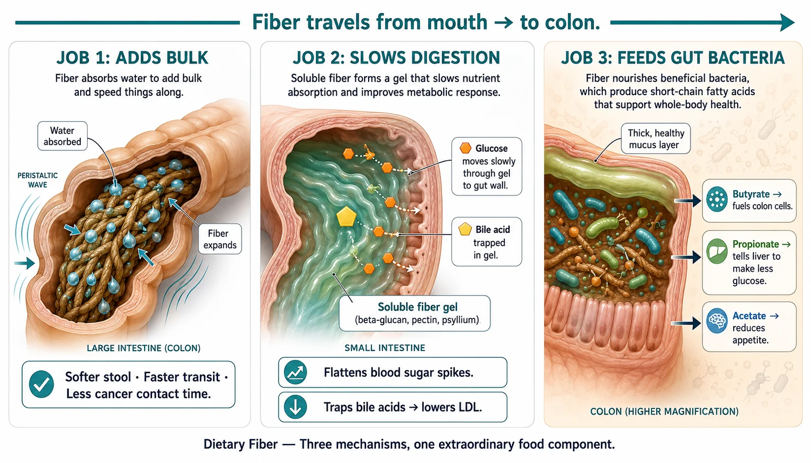
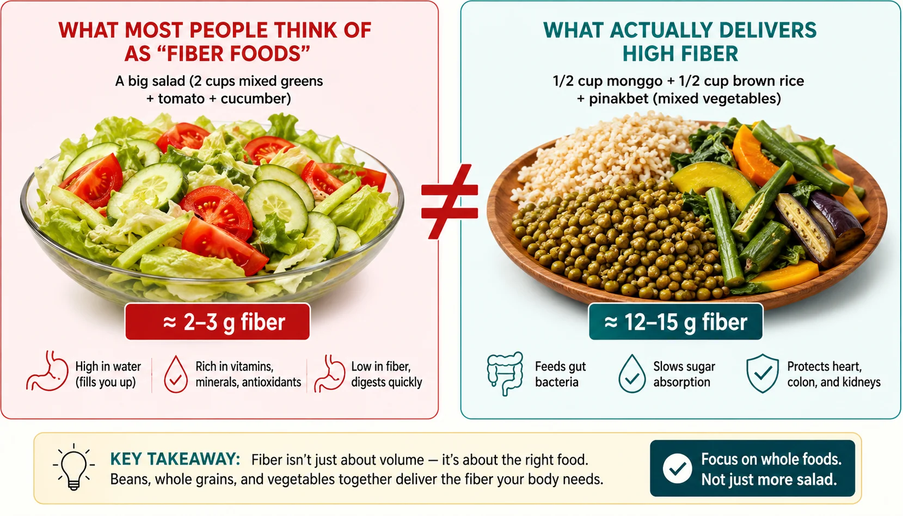
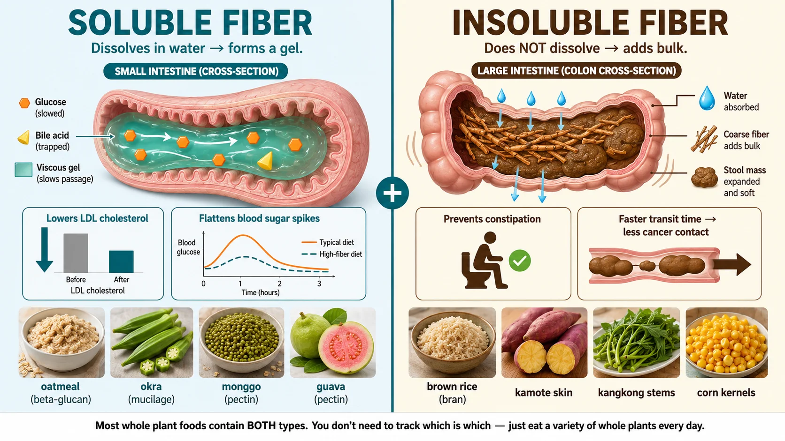
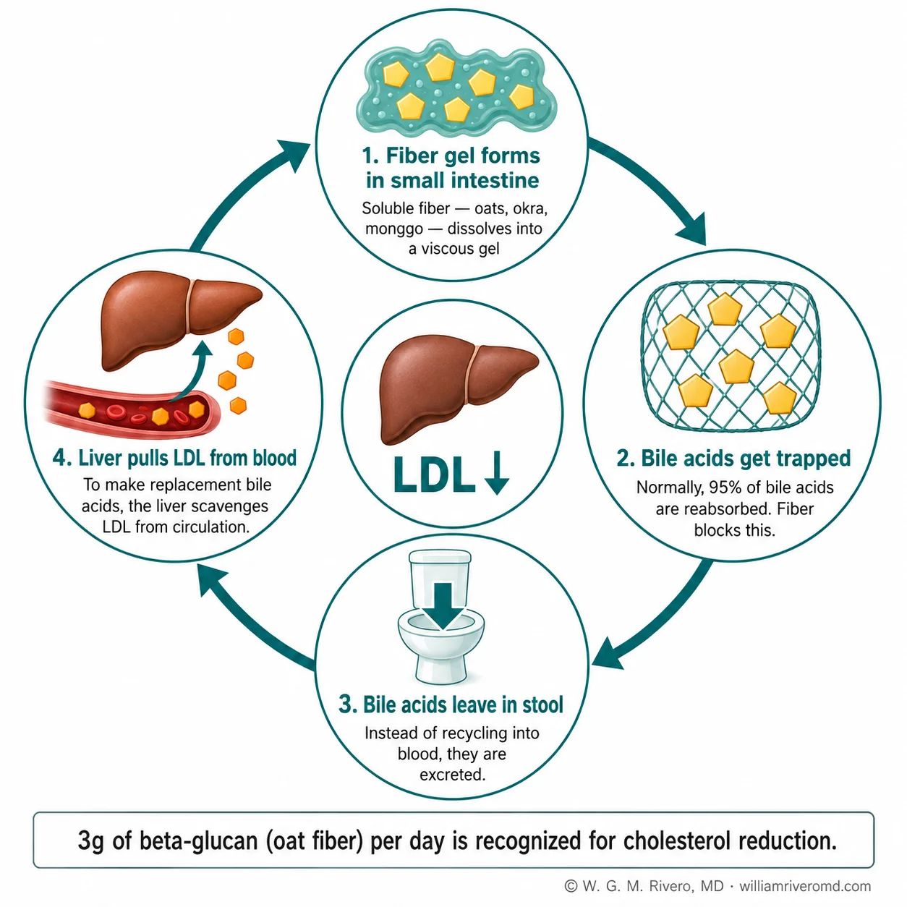
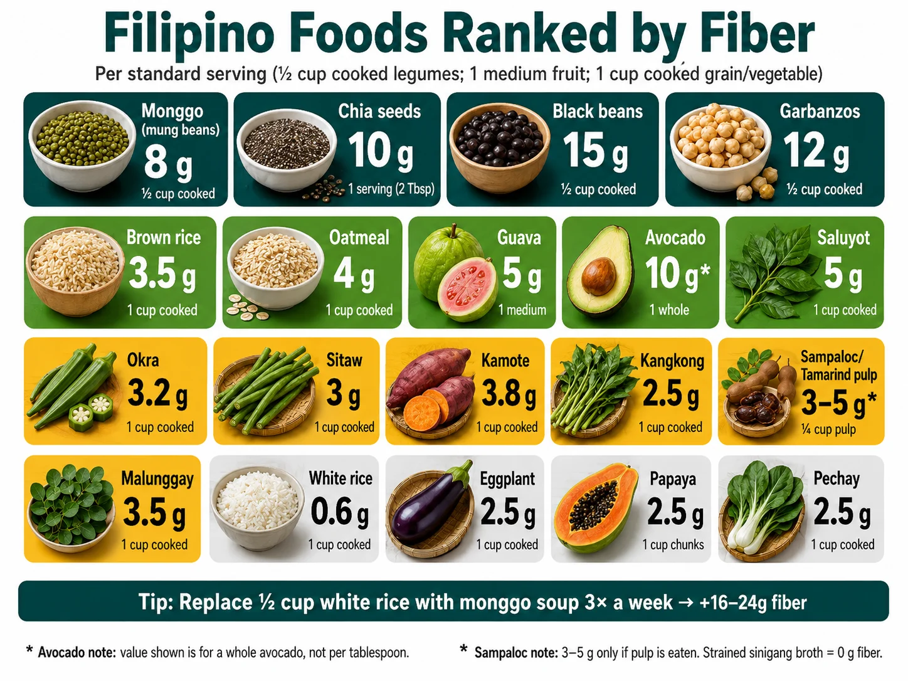
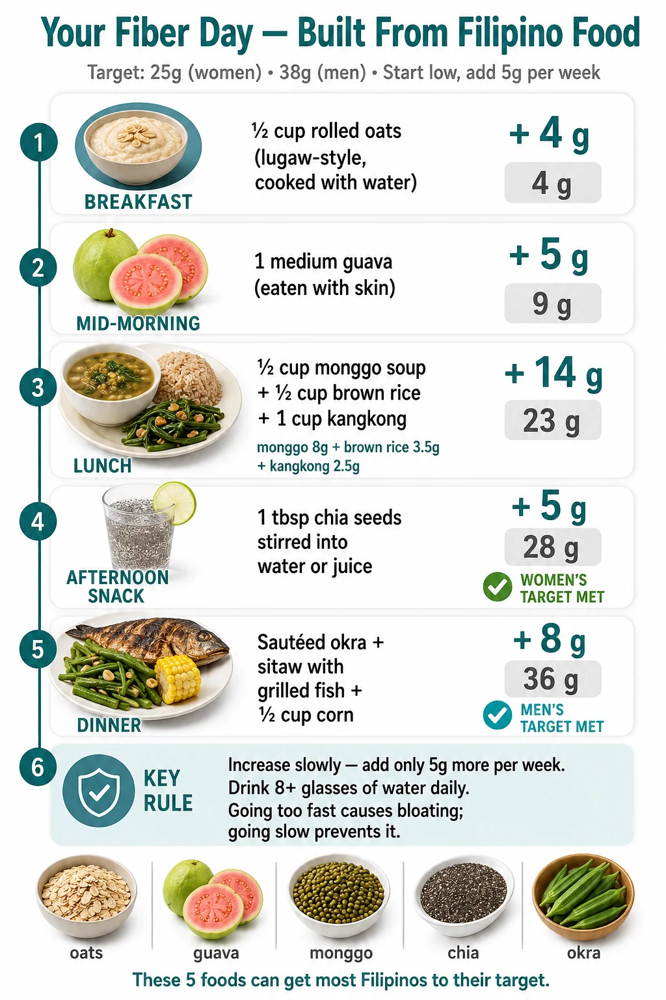
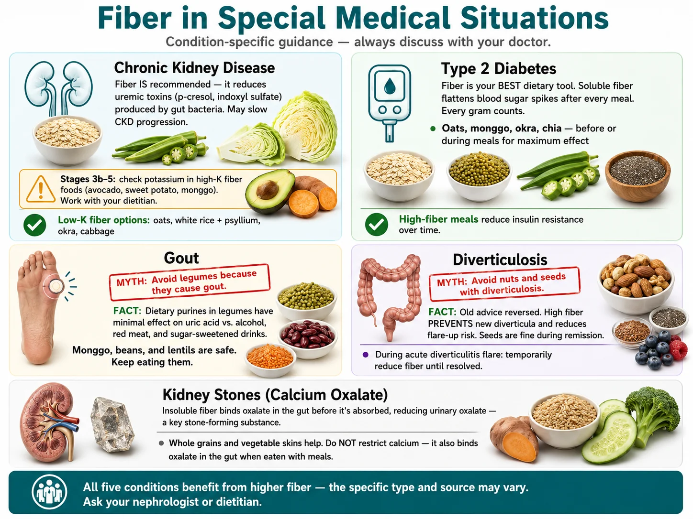
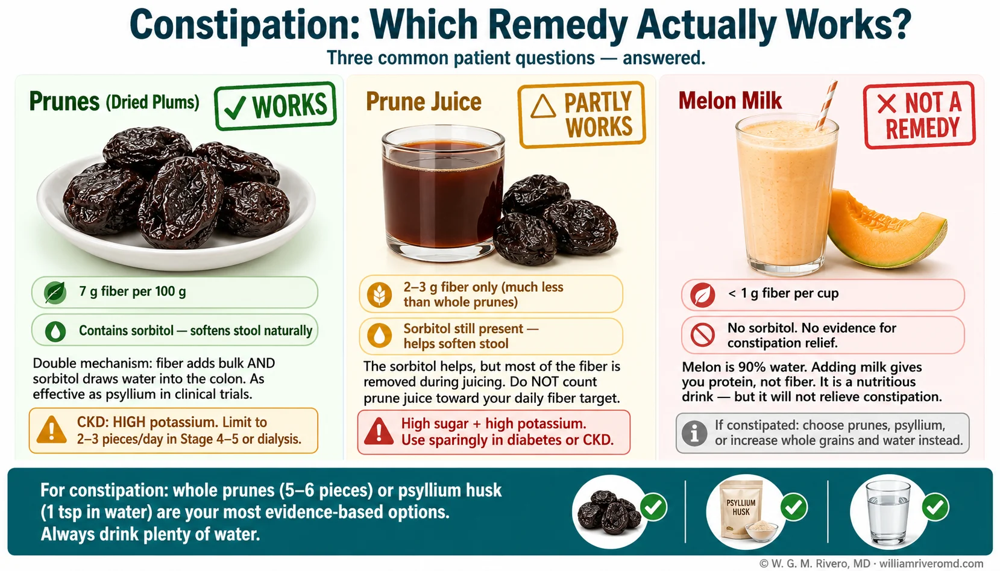

The Number That Should Stop You Mid-Scroll: Fiber Cuts Your Risk of Dying by Up to 30%Bakit Mahalaga ang Hibla — at Bakit Binibigyang-Diin Ito ng Bawat GabayNgano Importante ang Fiber — ug Ngano Gipasiugda Kini sa Tanang PatnubayBakit Importante ing Fiber — at Bakit Iyang Binibigyang-Diin ning Balang Gabay
Eating more fiber cuts your risk of dying — from any cause — by up to 30%. That is not a small study finding. A 2019 Lancet analysis pooled 40 studies and 135 million person-years of data to reach that conclusion. The same people also had 16–24% fewer heart attacks and strokes, and 22% lower colorectal cancer risk. Every 8 extra grams of fiber per day drove measurable improvements across all of those outcomes.Ang isang makabuluhang meta-analysis sa Lancet noong 2019 (Reynolds et al.) ay nag-aral ng 40 prospective na pag-aaral na sumasaklaw sa 135 milyong taon ng pagmamasid. Ang resulta ay malinaw: ang mga taong kumain ng pinakamaraming hibla ay may 15–30% na mas mababang pangkalahatang mortalidad, 16–24% na mas kaunting mga pangyayari sa cardiovascular, at 22% na mas mababang panganib sa colorectal cancer kumpara sa mga kumain ng pinakakaunti. Bawat karagdagang 8 gramo ng hibla bawat araw ay independyenteng nauugnay sa makabuluhang pagbaba ng bawat isa sa mga resultang ito.Ang usa ka landmark nga meta-analysis sa Lancet niadtong 2019 (Reynolds et al.) nagtipok ug 40 ka prospective nga mga pagtuon nga naglambigit sa 135 milyong tawo-tuig sa follow-up. Ang resulta klaro kaayo: ang mga tawo sa pinakataas nga grupo sa pagkuha sa fiber adunay 15–30% nga mas ubos nga tibuok mortalidad, 16–24% nga mas gamay nga mga panghitabo sa cardiovascular, ug 22% nga mas ubos nga risgo sa colorectal cancer kompara sa mga nangaon sa labing gamay nga fiber. Ang matag dugang nga 8 gramo sa fiber matag adlaw independyenteng nalambigit sa makisig nga pagkunhod sa matag usa niining mga resulta.Ing isang makasaysayang meta-analysis king Lancet nong 2019 (Reynolds et al.) pinisan ya ing 40 prospective na pag-aaral a sumasaklaw king 135 milyong taon ning pagsubaybay. Ang resulta klaro: ing mga taung kumain king pinakamataas na grupo ning fiber ay nanu 15–30% na mas mababang pangkalahatang mortalidad, 16–24% na mas kaunting cardiovascular na pangyayari, at 22% na mas mababang panganib sa colorectal cancer kumpara king mga kumain king pinakakaunti. Balang karagdagang 8 gramo ning fiber kada araw ay independyenteng naugnay king makabuluhang pagbaba ning bawat isa sa mga resultang ito.
Every major health organization — the World Health Organization, the American Heart Association, the American Diabetes Association, and every nephrology nutrition guideline — now recommends dietary fiber as a front-line intervention. That consensus is not based on one study. It is based on fiber repeatedly showing up, across dozens of countries and study types, as a predictor of better outcomes: lower death rates, fewer heart attacks, lower cancer rates.Sa karamihan ng ika-dalawampung siglo, ang hibla sa pagkain ay sumasakop ng isang maliit na footnote sa mga klinikal na gabay sa nutrisyon — isang bagay na halos katumbas ng "roughage" at pangunahing nauugnay sa pag-iwas sa constipation. Ang katayuang iyon ay dramatikong nagbago sa nakalipas na dalawang dekada. Ngayon, ang hibla ay isang front-line na rekomendasyon sa mga gabay mula sa World Health Organization, American Heart Association, American Diabetes Association, American College of Gastroenterology, at bawat pangunahing balangkas ng nutrisyon sa nephrology. Ang pagbabago ay pinaghimok ng nagtatagpong malawak na ebidensya na nag-uugnay ng hibla sa pagkain sa mga matitigas na klinikal na endpoint: mga rate ng kamatayan, atake sa puso, stroke, kanser, at metabolikong sakit.Sa kadaghanan sa ika-kawhaan nga siglo, ang dietary fiber naglingkod lamang sa usa ka gamay nga footnote sa mga klinikal nga patnubay sa nutrisyon — usa ka butang nga halos kaparehas sa "roughage" ug nailhan labi na sa pagpugong sa constipation. Nausab na kining kahimtang sa milabay nga duha ka dekada. Karon, ang fiber usa na ka front-line nga rekomendasyon sa mga patnubay gikan sa World Health Organization, American Heart Association, American Diabetes Association, American College of Gastroenterology, ug sa tanang pangunahong balangkas sa nutrisyon sa nephrology. Ang pagbag-o gipalihok sa nagkatigom nga dako-dako nga ebidensya nga nagdugtong sa dietary fiber sa mga kritikal nga klinikal nga resulta: mga rate sa kamatayon, atake sa kasingkasing, stroke, kanser, ug metabolikong sakit.King karamihan ning ika-dalawampung siglo, ing dietary fiber ay sumasaklaw king isang maliit na footnote king mga klinikal na gabay sa nutrisyon — isang bagay na halos katulad ning "roughage" at pangunahing kaugnay sa pag-iwas sa constipation. Dramatiko nang nagbago ing katayuang iyan nitong nakaraang dalawang dekada. Ngeni, ing fiber ay isang front-line na rekomendasyon king mga gabay mula sa World Health Organization, American Heart Association, American Diabetes Association, American College of Gastroenterology, at sa balang pangunahing balangkas ng nutrisyon sa nephrology. Ing pagbabago ay pinaghimok ng nagtatagpong malawak na ebidensya na nagdurugtung king dietary fiber at mga matitigas na klinikal na resulta: mga rate ning kamatayan, atake sa puso, stroke, kanser, at metabolikong sakit.
Fiber works on your body in four ways at the same time: it feeds the good bacteria in your gut; it slows how fast sugar enters your blood; it traps the acids your liver uses to make cholesterol, forcing your liver to pull LDL out of your bloodstream instead; and it speeds up digestion so harmful substances spend less time in contact with your colon. No single pill, vitamin, or supplement does all four simultaneously.Ang dahilan kung bakit pinagtutuunan ng pansin ang hibla ay ang nag-aaksyon ito nang sabay-sabay sa krus ng apat na pangunahing biological na sistema: ang bituka, ang cardiovascular system, ang metabolismo ng glucose, at ang immune-inflammatory axis. Napakakaunting iisang pagbabago sa pagkain — lalo na ang iisang sustansya — ang makapag-aangkin ng impluwensya sa lahat ng apat. Pinapakain ng hibla ang gut microbiome, na siyang gumagawa ng mga signaling molecule na nag-regulate ng pamamaga sa buong katawan. Nagpapabagal ito ng pagsipsip ng carbohydrate, na nagpapatag ng mga spike ng asukal sa dugo pagkatapos kumain. Nag-bibigkis ito ng mga bile acid sa bituka, na pinipilit ang atay na mag-convert ng mas maraming kolesterol sa kapalit na bile — nagpapababa ng circulating LDL. At nagdaragdag ito ng pisikal na bulk na nagpapabilis ng paglalakbay sa bituka, binabawasan ang oras na nananatili ang mga carcinogen sa pakikipag-ugnayan sa dingding ng colon. Hindi ito mga teoretikal na mekanismo: bawat isa ay naidokumento sa mga pag-aaral ng pisyolohiya ng tao, at bawat isa ay nauugnay sa mga pagbaba ng panganib sa antas ng populasyon na nakikita sa mga epidemiologic na cohort.Ang hinungdan nga ang fiber nagkuha niini nga lebel sa atensyon mao nga kini naglihok dungan sa pruweba sa upat ka punoan nga biological nga sistema: ang tinai, ang cardiovascular nga sistema, ang metabolismo sa glucose, ug ang immune-inflammatory nga axis. Pipila kaayo nga mga solong pagbag-o sa pagkaon — labina mga solong sustansya — ang makaangkon og impluwensya sa tanan nga upat. Gipakaon sa fiber ang gut microbiome, nga naghimo og mga signaling molecule nga nag-regulate sa pamamaga sa tibuok lawas. Nagpahinay kini sa pagsopsop sa carbohydrate, nagpatag sa mga spike sa asukal sa dugo human sa pagkaon. Nagbugkos kini ug mga bile acid sa tinai, nagpugos sa atay nga mag-convert ug mas daghang kolesterol ngadto sa kapuli nga bile — nagpababa sa nag-iikot nga LDL. Ug nagdugang kini og pisikal nga bulk nga nagpadali sa paglihok sa tinai, nagpaubos sa oras nga nagpabilin ang mga carcinogen nga nakontak sa dingding sa colon. Dili kini mga teoretikal nga mekanismo: ang matag usa nadokumento sa mga pagtuon sa pisyolohiya sa tawo, ug ang matag usa nagmapa sa mga pagkunhod sa risgo sa lebel sa populasyon nga makita sa epidemiologic nga mga cohort.Ing dahilan bakit tinatanggap ning fiber itong antas ning atensyon ay dahil kumilos ya nang sabay-sabay king krus ning apat na pangunahing biological na sistema: ing bituka, ing cardiovascular system, ing metabolismo ning glucose, at ing immune-inflammatory axis. Kakaunti kayang iisang pagbabago sa pagkain — lalo na iisang sustansya — ing makapag-angkin king impluwensya sa lahat ning apat. Pinakain ning fiber ing gut microbiome, a siyang gumagawa ning mga signaling molecule a nag-regulate king pamamaga sa buong katawan. Nagpapabagal ya king pagsipsip ning carbohydrate, nagpapatag king mga spike ning asukal sa dugo pagkatapos kumain. Nagbibigkis ya king mga bile acid sa bituka, pinipilitan ing atay na mag-convert ning mas maraming kolesterol sa kapalit na bile — nagpapababa king circulating LDL. At nagdadagdag ya ning pisikal na bulk a nagpapabilis king paglalakbay sa bituka, binabawasan ing oras a nananatili ing mga carcinogen sa pakikipag-ugnayan sa dingding ning colon. Ala itong mga teoretikal na mekanismo: bawat isa ay naidokumento king mga pag-aaral ning pisyolohiya ning tao, at bawat isa ay naugnay king mga pagbaba ning panganib sa antas ning populasyon a nakikita sa mga epidemiologic na cohort.
Despite this evidence, most people eat roughly half of what they need. In the Philippines, dietary surveys put the average at 10–14 grams per day — against a target of 25 grams for women and 38 grams for men. Based on Reynolds dose-response data, closing that gap by even 8–10 grams per day would produce measurable cardiovascular and mortality benefits. The next sections explain what fiber is, why common "fiber foods" often fall short, and how to close the gap using ordinary food from any palengke.Sa kabila ng ebidensyang ito, karamihan sa mga matatanda ay kumakain lamang ng halos kalahati ng inirerekomendang dami. Sa Pilipinas, karaniwang mga survey sa pagkain ay tinatayang ang average na pang-araw-araw na paggamit ng hibla sa 10–14 gramo — laban sa target na 25 gramo para sa mga babae at 38 gramo para sa mga lalaki (mga halaga ng Institute of Medicine), o hindi bababa sa 25 g/araw para sa lahat ng matatanda (WHO). Ang agwat na ito ay hindi walang kahalagahan. Batay sa data ng dosis-tugon ng Reynolds, ang pagsasara nito ng kahit 8–10 gramo bawat araw ay inaasahang makakalikha ng mga nasusukat na pagbaba sa panganib ng cardiovascular at pangkalahatang mortalidad sa antas ng populasyon. Ang mga sumusunod na seksyon ay nagpapaliwanag kung ano ang hibla, bakit ang mga pagkain na karaniwang itinuturing ng mga tao bilang "mga pagkaing may hibla" ay madalas na kulang, at kung paano mapapalakas ang paggamit sa paraang praktikal para sa isang diyetang Pilipino.Bisan pa niini nga ebidensya, kadaghanan sa mga hamtong nagkaon ra sa mga katunga sa girekomendang kantidad. Sa Pilipinas, ang kasagarang mga survey sa pagkaon nag-estimya sa kasagarang adlaw-adlaw nga paggamit sa fiber sa 10–14 gramo — batok sa target nga 25 gramo alang sa mga babaye ug 38 gramo alang sa mga lalaki (mga kantidad sa Institute of Medicine), o labing menos 25 g/adlaw alang sa tanan nga mga hamtong (WHO). Ang gintang na kini dili gamay. Pinasukad sa datos sa dosis-tubag ni Reynolds, ang pagsara niini bisan og 8–10 gramo matag adlaw gilauman nga makamugna og masubay nga pagkunhod sa cardiovascular nga risgo ug tibuok mortalidad sa lebel sa populasyon. Ang mosunod nga mga seksyon nagpasabot sa unsay fiber, ngano ang mga pagkaon nga kasagaran gihunahuna sa mga tawo ingon nga "mga pagkaon nga adunay fiber" kasagaran kulang, ug kung unsaon pagtukod og intake sa paagi nga praktikal alang sa usa ka Pilipinong diyeta.Kabila king ebidensyang ito, karamihan king mga matatanda ay kumakain king halos kalahati ning inirerekomendang dami. Sa Pilipinas, karaniwang mga survey sa pagkain ay tinataya ing average na pang-araw-araw na paggamit ning fiber sa 10–14 gramo — laban sa target na 25 gramo para sa mga babae at 38 gramo para sa mga lalaki (mga halaga ning Institute of Medicine), o hindi bababa sa 25 g/araw para sa lahat ning matatanda (WHO). Ing agwat na ito ay hindi walang kahalagahan. Batay king datos ning dosis-tugon ni Reynolds, ing pagsasara nito ng kahit 8–10 gramo kada araw ay inaasahang makakalikha ning mga nasusukat na pagbaba sa panganib ning cardiovascular at pangkalahatang mortalidad sa antas ning populasyon. Ing mga sumusunod na seksyon ay nagpapaliwanag kung ano ing fiber, bakit ing mga pagkain a karaniwang itinuturing ning mga tao bilang "mga pagkaing may fiber" ay madalas na kulang, at paano mapapalakas ing paggamit sa paraan a praktikal para sa isang diyetang Pilipino.
Your Heart: 16–24% Fewer EventsSakit sa PusoSakit sa KasingkasingSakit ning Puso
High fiber intake is linked to 16–24% fewer heart attacks and cardiovascular events. Soluble fiber traps bile acids in the gut, forcing the liver to pull LDL cholesterol from the bloodstream to make replacements — dropping LDL without a prescription.Ang mataas na paggamit ng hibla ay nauugnay sa 16–24% na mas kaunting mga pangyayari sa cardiovascular. Ang natutunaw na hibla ay nagpapababa ng LDL kolesterol sa pamamagitan ng pagbibigkis ng mga bile acid; pinipilit nito ang atay na kumuha ng mas maraming kolesterol mula sa daloy ng dugo upang mag-synthesize ng kapalit na bile salts.Ang taas nga paggamit sa fiber nalambigit sa 16–24% nga mas gamay nga mga panghitabo sa cardiovascular. Ang soluble fiber nagpababa sa LDL kolesterol pinaagi sa pagbugkos sa mga bile acid; nagpugos kini sa atay nga mohigop ug mas daghang kolesterol gikan sa dugo aron mag-synthesize og kapuli nga bile salts.Ing mataas na paggamit ning fiber ay naugnay king 16–24% na mas kaunting mga pangyayari sa cardiovascular. Ing soluble fiber ay nagpapababa ning LDL kolesterol sa pamamagitan ning pagbibigkis ning mga bile acid; pinipilitan ya ing atay na kumuha ning mas maraming kolesterol mula sa daloy ning dugo para mag-synthesize ning kapalit na bile salts.
Blood Sugar: Fiber Is the Original Glucose StabilizerType 2 Diabetes at Asukal sa DugoType 2 Diabetes ug Asukal sa DugoType 2 Diabetes at Asukal sa Dugo
Soluble fiber forms a gel in the gut that slows how fast sugar enters your bloodstream, flattening the blood sugar spike after meals. High-fiber diets are linked to 20–30% lower risk of developing type 2 diabetes and improved blood sugar control in people already diagnosed.Ang malapot na natutunaw na hibla ay bumubuo ng gel sa bituka na nagpapabagal ng panunulaw ng carbohydrate at nagpapatag ng mga spike ng glucose pagkatapos kumain. Ang mga diyeta na may mataas na hibla ay nauugnay sa 20–30% na mas mababang panganib na magkaroon ng T2DM at pinahusay na kontrol ng glycemic para sa mga nadiagnose na.Ang biscous soluble fibers nagporma og gel sa tinai nga nagpahinay sa panunulaw sa carbohydrate ug nagpatag sa mga spike sa glucose human sa pagkaon. Ang mga diyeta nga taas og fiber nalambigit sa 20–30% nga mas ubos nga risgo sa pagpalambo sa T2DM ug gipaayo nga kontrol sa glycemic alang sa mga nadiagnosa na.Ing malapot na soluble fibers ay bumubuo ning gel sa bituka a nagpapabagal king panunulaw ning carbohydrate at nagpapatag king mga spike ning glucose pagkatapos kumain. Ing mga diyeta a mataas sa fiber ay naugnay king 20–30% na mas mababang panganib na magkaroon ning T2DM at pinahusay na kontrol ning glycemic para sa mga nadiagnosa na.
Colorectal CancerKanser sa ColorectalColorectal CancerColorectal Cancer
The Lancet meta-analysis found 22% lower colorectal cancer risk in high-fiber eaters. Faster gut transit reduces carcinogen contact time with the colon wall. Butyrate — produced when gut bacteria ferment fiber — directly suppresses colon cancer cell growth.Ang meta-analysis ng Lancet ay natagpuan ang 22% na mas mababang panganib sa colorectal cancer sa mga mataas na mamimili ng hibla. Pinabibilis ng hibla ang paglalakbay sa bituka (mas kaunting oras ng pakikipag-ugnayan ng carcinogen), at ang butyrate — na ginawa ng bacterial fermentation ng hibla — ay direktang pumipigil sa pagpapalaki ng mga cell ng kanser sa colon.Ang meta-analysis sa Lancet nakakit og 22% nga mas ubos nga risgo sa colorectal cancer sa mga nangaon og taas nga fiber. Nagpadali ang fiber sa paglihok sa tinai (mas gamay nga oras sa kontak sa carcinogen), ug ang butyrate — gihimo pinaagi sa bacterial fermentation sa fiber — direktang nagpugong sa pagdako sa mga cell sa kanser sa colon.Ing meta-analysis ning Lancet nakatuklas ning 22% na mas mababang panganib sa colorectal cancer sa mga mataas na kumakain ning fiber. Pinabibilis ning fiber ing paglalakbay sa bituka (mas kaunting oras ning pakikipag-ugnayan ning carcinogen), at ing butyrate — ginawa ning bacterial fermentation ning fiber — ay direktang pumipigil sa pagpapalaki ning mga cell ning kanser sa colon.
Satiety: Fiber Makes You Feel Full — For RealMalusog na TimbangHimsog nga TimbangMalusog na Timbang
Fiber fills your stomach and slows digestion, which sends fullness signals to your brain. Fiber-rich foods are also lower in calories for the same volume — so you eat more food for fewer calories. High fiber intake is consistently linked to lower body weight and smaller waist circumference.Ang mga pagkaing mayaman sa hibla ay nagtataguyod ng satiety sa pamamagitan ng maraming pathway: pisikal na paglapit ng tiyan, mas mabagal na paglabas ng tiyan, pagpapagana ng mga gut hormone (GLP-1, PYY) na nagpapadala ng signal ng pagkabusog sa utak, at mas mababang caloric density bawat gramo ng pagkain. Ang data ng obserbasyon ay patuloy na nag-uugnay ng mataas na paggamit ng hibla sa mas mababang timbang ng katawan at mas maliit na sukat ng baywang.Ang mga pagkaon nga dato sa fiber nagpasiugda sa satiety pinaagi sa daghang mga pathway: pisikal nga pagbuklad sa tiyan, mas hinay nga paglabas sa tiyan, pagtandog sa mga gut hormone (GLP-1, PYY) nga nagpadala og sinyales sa kabuog sa utok, ug mas ubos nga caloric density matag gramo sa pagkaon. Ang observational nga datos kanunay nagdugtong sa taas nga paggamit sa fiber sa mas ubos nga timbang sa lawas ug mas gamay nga sukat sa hawak.Ing mga pagkain a mayaman sa fiber ay nagtataguyod king satiety sa pamamagitan ning maraming pathway: pisikal na paglapit ning tiyan, mas mabagal na paglabas ning tiyan, pagpapagana ning mga gut hormone (GLP-1, PYY) a nagpapadala ning senyales ning pagkabusog sa utak, at mas mababang caloric density kada gramo ning pagkain. Ing datos ning obserbasyon ay patuloy na naugnay ing mataas na paggamit ning fiber king mas mababang timbang ning katawan at mas maliit na sukat ning baywang.
Lower Mortality: 30% Less Likely to Die From AnythingMas Mababang Pangkalahatang MortalidadMas Ubos nga Tibuok MortalidadMas Mababang Pangkalahatang Mortalidad
The 15–30% lower risk of dying from any cause reflects combined protection across cardiovascular, metabolic, and cancer pathways. The effect is dose-dependent and holds across different countries, diets, and study designs.Ang pangkalahatang benepisyo sa mortalidad — 15–30% na mas mababang panganib na mamatay mula sa anumang dahilan — ay sumasalamin sa kumulatibong proteksyon sa mga cardiovascular, metabolic, at cancer pathway. Ito ay isang matibay, dose-dependent na epekto na nananatili sa iba't ibang heograpikal na populasyon, mga pattern ng pagkain, at mga disenyo ng pag-aaral, na ginagawa itong isa sa mga pinaka-matibay na natuklasan sa nutritional epidemiology.Ang kinatibuk-ang benepisyo sa mortalidad — 15–30% nga mas ubos nga risgo sa pagkamatay gikan sa bisan unsang hinungdan — nagpakita sa kumulatibong proteksyon sa mga cardiovascular, metabolic, ug cancer pathway. Kini usa ka matinuanon, dose-dependent nga epekto nga nagpabilin sa lain-laing heyograpikanhong mga populasyon, mga pattern sa pagkaon, ug mga disenyo sa pagtuon, nga naghimo niini nga usa sa pinaka-lig-ong mga natuklasan sa nutritional epidemiology.Ing pangkalahatang benepisyo sa mortalidad — 15–30% na mas mababang panganib na mamatay mula sa anumang dahilan — ay sumasalamin king kumulatibong proteksyon sa mga cardiovascular, metabolic, at cancer pathway. Ito ay isang matibay, dose-dependent na epekto a nananatili sa iba't ibang heograpikal na populasyon, mga pattern ning pagkain, at mga disenyo ning pag-aaral, na ginagawa itong isa sa mga pinaka-matibay na natuklasan sa nutritional epidemiology.
One dietary change. Five simultaneous benefits. No supplement does this.Kakaunting iisang pagbabago sa pagkain ang humahawak sa napakaraming sistema nang sabay-sabayPipila kaayo nga solong pagbag-o sa pagkaon ang nakaapekto sa daghang mga sistema sa usa ka panahonKakaunting iisang pagbabago sa pagkain ing humahawak king napakaraming sistema nang sabay-sabay
Increasing daily fiber intake simultaneously lowers LDL, improves insulin sensitivity, feeds protective gut bacteria, reduces systemic inflammation, and lowers the risk of the three leading causes of death in the Philippines: cardiovascular disease, diabetes, and cancer. No supplement replicates this.Ang pagtaas ng pang-araw-araw na paggamit ng hibla ay isa sa mga dietary intervention na may pinakamataas na ani na available. Sabay-sabay nitong pinabababang ang LDL kolesterol, pinapahusay ang sensitivity ng insulin, pinakakain ang mga protektibong gut bacteria, binabawasan ang systemic na pamamaga, at binabawasan ang panganib ng tatlong pangunahing sanhi ng kamatayan sa Pilipinas: cardiovascular disease, diabetes, at kanser. Walang supplement na nagpapareplika ng paketeng ito ng mga benepisyo.Ang pagdugang sa adlaw-adlaw nga paggamit sa fiber usa sa labing taas nga ani nga dietary interventions nga magamit. Dungan niining nagpababa sa LDL kolesterol, nagpaayo sa insulin sensitivity, nagpakaon sa mga protektibong gut bacteria, nagpaubos sa systemic nga pamamaga, ug nagpababa sa risgo sa tulo ka nanguna nga hinungdan sa kamatayon sa Pilipinas: cardiovascular disease, diabetes, ug kanser. Walay supplement nga nagsuplaay niining pakete sa mga benepisyo.Ing pagpapalaki ning pang-araw-araw na paggamit ning fiber ay isa sa mga dietary intervention a may pinakamataas na ani a available. Sabay-sabay yang nagpapababa ning LDL kolesterol, nagpapahusay king sensitivity ning insulin, nagpapakain king mga protektibong gut bacteria, nagpapababa king systemic na pamamaga, at nagpapababa king panganib ning tatlong pangunahing sanhi ning kamatayan sa Pilipinas: cardiovascular disease, diabetes, at kanser. Walang supplement a nagpapareplika ning paketeng ito ning mga benepisyo.
What Fiber Actually Is — And Why Your Body Can't Digest It (That's the Whole Point)Ano Talaga ang HiblaUnsa Gyud ang FiberAno Talaga ing Fiber
Fiber is a type of carbohydrate — found in plants — that your digestive system cannot break down. Unlike rice or bread, it travels through your stomach and small intestine completely intact and arrives in your colon undigested. That is not a flaw. That is the whole point.Sa antas ng biochemical, ang dietary fiber ay isang kolektibong termino para sa mga hindi matutunaw na carbohydrate polymer — mahabang kadena ng mga molekula ng asukal na nakakonekta sa pamamagitan ng β-glycosidic bonds. Ang sistema ng panunulaw ng tao ay gumagawa ng amylase at iba pang mga enzyme na nagputol ng carbohydrate sa bibig, tiyan, at maliit na bituka, ngunit wala sa mga enzyme na ito ang makakaputol ng β-glycosidic bonds. Bilang resulta, ang hibla ay dumadaan sa tiyan at maliit na bituka na halos buo, dumadating sa colon sa isang anyo na hindi ma-absorb o magamit para sa enerhiya ng aming sariling mga cell. Ito ang nagtatakdang katangian ng hibla: ito ay pagkain na hindi natin matutunaw.Sa biochemical nga lebel, ang dietary fiber usa ka kolektibong termino alang sa mga dili matunaw nga carbohydrate polymers — taas nga mga kadena sa mga molekula sa asukal nga gihigot pinaagi sa β-glycosidic bonds. Ang sistema sa panunulaw sa tawo nagmugna og amylase ug uban pang mga enzyme nga nagputol og carbohydrate sa baba, tiyan, ug gamay nga tinai, apan wala sa niini nga mga enzyme ang makapuputol sa β-glycosidic bonds. Ingon usa ka resulta, ang fiber nagagi sa tiyan ug gamay nga tinai nga halos buo, miabot sa colon sa usa ka porma nga dili maabsorb o gamiton sa enerhiya sa atong kaugalingon nga mga cell. Kini ang nagtakda nga kabtangan sa fiber: kini pagkaon nga dili nato matunaw.Sa antas ning biochemical, ing dietary fiber ay isang kolektibong termino para sa mga hindi matutunaw na carbohydrate polymer — mahabang kadena ning mga molekula ning asukal a nakakonekta sa pamamagitan ning β-glycosidic bonds. Ing sistema ning panunulaw ning tao ay gumagawa ning amylase at iba pang mga enzyme a nagputol ning carbohydrate sa bibig, tiyan, at maliit na bituka, ngunit wala sa mga enzyme na ito ing makakaputol ning β-glycosidic bonds. Bilang resulta, ing fiber ay dumadaan sa tiyan at maliit na bituka a halos buo, dumadating king colon sa isang anyo a hindi ma-absorb o magamit para sa enerhiya ning aming sariling mga cell. Ito ing nagtatakdang katangian ning fiber: ito ay pagkain a hindi natin matutunaw.
Because fiber is not absorbed, it does three jobs in your gut that nothing else can do — and each one has real, measurable health consequences.Ang tila simpleng katangian na ito — hindi matutunaw — ang nagbibigay sa hibla ng kahanga-hangang hanay ng mga epekto sa kalusugan. Habang gumagalaw ang hibla sa gastrointestinal tract, gumaganap ito ng tatlong natatanging trabaho, bawat isa ay may makabuluhang physiologic na kahihinatnan. Ang pag-unawa sa tatlong papel na ito ay nagpapaliwanag kung bakit hindi maaaring mapalitan ng vitamin pill ang hibla, kung bakit ang pag-aalis ng hibla mula sa pagkain (tulad ng ginagawa ng juicing o refining) ay makabuluhang nagbabago ng ginagawa ng pagkaing iyon sa katawan, at kung bakit ang colon — ang huling bahagi ng digestive tract — ay isa sa pinaka-metabolically active na organ sa katawan.Kining dayag nga yano nga kabtangan — dili matunawon — mao ang naghatag sa fiber sa iyang talagsaon nga hanay sa mga epekto sa kahimsog. Samtang naglihok ang fiber sa gastrointestinal tract, naghimo kini og tulo ka lahi nga mga trabaho, ang matag usa adunay makisig nga physiologic nga mga kinabuhi. Ang pagsabut sa niini nga tulo ka papel nagpasabot kung ngano ang fiber dili mapulihan og vitamin pill, kung ngano ang pag-alis sa fiber gikan sa pagkaon (sama sa gibuhat sa juicing o refining) makisig nga nagbag-o sa gibuhat sa pagkaon ngadto sa lawas, ug kung ngano ang colon — ang katapusang bahin sa digestive tract — usa ka labing metabolically active nga organ sa lawas.Ing tila simpleng katangian na ito — hindi matutunaw — ing nagbibigay king fiber ning kahanga-hangang hanay ning mga epekto sa kalusugan. Habang gumagalaw ing fiber sa gastrointestinal tract, gumaganap ya ning tatlong natatanging trabaho, bawat isa ay may makabuluhang physiologic na kahihinatnan. Ing pag-unawa king tatlong papel na ito ay nagpapaliwanag kung bakit hindi mapapalitan ning vitamin pill ing fiber, kung bakit ing pag-aalis ning fiber mula sa pagkain (tulad ning ginagawa ning juicing o refining) ay makabuluhang nagbabago ning ginagawa ning pagkaing iyon sa katawan, at kung bakit ing colon — ing huling bahagi ning digestive tract — ay isa sa pinaka-metabolically active na organ sa katawan.
It Acts Like a Sponge — Speeding Up Your Colon, Preventing CancerNagdaragdag ng Bulk at Tubig — Nagpapalambot ng Dumi at Nagpapabilis ng TransitNagdugang og Bulk ug Tubig — Nagpahumok sa Tai ug Nagpadali sa TransitNagdadagdag ning Bulk at Tubig — Nagpapalambot ning Dumi at Nagpapabilis ning Transit
Insoluble fiber — the kind in bran, whole grains, and vegetable skins — soaks up water as it moves through your gut, swells, and adds bulk to your stool. That bulk pushes everything through your colon faster. The faster things move, the less time harmful substances spend touching your colon wall — which is why people who eat more fiber have 22% lower colorectal cancer risk. Chronic constipation, hemorrhoids, and diverticular disease are all more common when this fiber is persistently low.Ang hindi natutunaw na hibla (makikita sa wheat bran, balat ng gulay, buong butil) ay hindi natutunaw sa tubig. Nag-aabsorb ito ng tubig habang gumagalaw sa bituka, lumalaki ang volume at nagdaragdag ng pisikal na bulk sa dumi. Ang bulking na aksyon na ito ay nagpapalawak ng dingding ng colon, nagti-trigger ng mga peristaltic contraction na nagpapaigting ng mga nilalaman sa harapan. Ang net na epekto: mas malambot na dumi, mas mabilis na oras ng transit, mas mababang intracolonic pressure, at mas mababang oras ng pakikipag-ugnayan sa pagitan ng mucosa ng colon at ng anumang potensyal na carcinogenic na compound sa mga nilalaman ng bituka. Ang constipation, diverticular disease, at hemorrhoid ay mas karaniwan kapag ang paggamit ng hindi natutunaw na hibla ay patuloy na mababa.Ang insoluble fiber (makita sa wheat bran, mga panit sa utanon, tibuok nga mga butil) dili matunaw sa tubig. Nag-absorb kini og tubig samtang naglihok sa tinai, nagbuklad sa volume ug nagdugang og pisikal nga bulk sa tai. Kining bulking nga aksyon nagbuklad sa dingding sa colon, nagtandog sa mga peristaltic contraction nga nagpaabot sa mga sulod og una. Ang net nga epekto: mas humok nga tai, mas paspas nga oras sa transit, mas ubos nga intracolonic pressure, ug mas gamay nga oras sa kontak tali sa mucosa sa colon ug sa bisan unsang potensyal nga carcinogenic nga mga compound sa mga sulod sa tinai. Ang constipation, diverticular disease, ug hemorrhoids mas sagad sa mga tawo nga ang insoluble fiber intake kanunay nga ubos.Ing insoluble fiber (makita sa wheat bran, balat ning gulay, buong butil) ay hindi natutunaw sa tubig. Nag-aabsorb ya ning tubig habang gumagalaw sa bituka, lumalaki ing volume at nagdadagdag ning pisikal na bulk sa dumi. Ing bulking na aksyon na ito ay nagpapalawak ning dingding ning colon, nagtitrigger ning mga peristaltic contraction a nagpapaigting ning mga nilalaman sa harapan. Ing net na epekto: mas malambot na dumi, mas mabilis na oras ning transit, mas mababang intracolonic pressure, at mas mababang oras ning pakikipag-ugnayan sa pagitan ning mucosa ning colon at ning anumang potensyal na carcinogenic na compound sa mga nilalaman ning bituka. Ing constipation, diverticular disease, at hemorrhoids ay mas karaniwan kapag ing paggamit ning insoluble fiber ay patuloy na mababa.
It Forms a Gel — Your Body's Own Speed Bump for Blood Sugar and CholesterolNagpapabagal ng Panunulaw — Mas Maamo sa Asukal sa Dugo at KolesterolNagpahinay sa Panunulaw — Mas Maayo alang sa Asukal sa Dugo ug KolesterolNagpapabagal ning Panunulaw — Mas Maamo sa Asukal sa Dugo at Kolesterol
Soluble fiber — found in oats, monggo, psyllium, beans, apples, and citrus fruits — dissolves in water to form a thick gel in your small intestine. This gel slows down how fast sugar from your food enters your bloodstream, which flattens blood sugar spikes after meals. The same gel also traps the acids your body uses to digest fat. When those acids are trapped, your liver has to pull cholesterol from your blood to make fresh ones — so your LDL drops. The soluble fiber in oats (called beta-glucan) is so well-studied that 3 grams per day carries an official FDA health claim for lowering cholesterol.Ang natutunaw na hibla (makikita sa oats, barley, psyllium, legume, mansanas, citrus) ay natutunaw sa tubig upang bumuo ng malapot na gel sa maliit na bituka. Ang gel na ito ay pisikal na nagpapabagal ng rate kung saan ang mga digestive enzyme ay umaabot sa mga carbohydrate, at nagpapabagal ng rate kung saan ang glucose ay pumapasok sa daloy ng dugo. Ang praktikal na resulta: mas patag, mas unti-unti na mga kurba ng asukal sa dugo pagkatapos kumain at mas mababang demand ng insulin — isang pangunahing benepisyo para sa mga taong may o nasa panganib ng type 2 diabetes. Ang parehong gel ay nagtatanggal din ng mga bile acid na inilalabas sa bituka, pinipigilan ang kanilang muling pagsipsip. Kailangan nilang mag-synthesize ng mga bagong bile acid mula sa circulating na kolesterol, na nagpapababa ng mga antas ng LDL. Ang Beta-glucan mula sa oats ay ang pinaka-pinag-araling soluble fiber para sa cholesterol-lowering na epektong ito, at may hawak itong FDA-approved health claim sa 3 g/araw.Ang soluble fiber (makita sa oats, barley, psyllium, legumes, mansanas, citrus) natunaw sa tubig aron makahimo og biscous nga gel sa gamay nga tinai. Kining gel pisikal nga nagpahinay sa rate nga diin ang mga digestive enzyme makaabot sa mga carbohydrate, ug nagpahinay sa rate nga diin ang glucose mosulod sa dugo. Ang praktikal nga resulta: mas patag, mas hinay-hinay nga mga kurba sa asukal sa dugo human sa pagkaon ug mas ubos nga demand sa insulin — usa ka pangunahong benepisyo alang sa mga tawo nga adunay o sa risgo sa type 2 diabetes. Ang mao usab nga gel nagkuha usab sa mga bile acid nga gisekretahan ngadto sa tinai, nagpugong sa ilang reabsorption. Kinahanglan dayon ang atay nga mag-synthesize og bag-ong mga bile acid gikan sa nag-iikot nga kolesterol, nga nagpababa sa mga lebel sa LDL. Ang Beta-glucan gikan sa oats ang labing gitun-an nga soluble fiber alang sa cholesterol-lowering nga epekto, ug adunay kini FDA-approved health claim sa 3 g/adlaw.Ing soluble fiber (makita sa oats, barley, psyllium, legumes, mansanas, citrus) ay natutunaw sa tubig para bumuo ning malapot na gel sa maliit na bituka. Ing gel na ito ay pisikal na nagpapabagal ning rate kung nung ang mga digestive enzyme ay umaabot sa mga carbohydrate, at nagpapabagal ning rate kung nung ang glucose ay pumapasok sa daloy ning dugo. Ing praktikal na resulta: mas patag, mas unti-unti na mga kurba ning asukal sa dugo pagkatapos kumain at mas mababang demand ning insulin — isang pangunahing benepisyo para sa mga taung may o nasa panganib ning type 2 diabetes. Ing parehong gel ay nagtatanggal din ning mga bile acid a inilalabas sa bituka, pinipigilan ing kanilang muling pagsipsip. Kailangan nilang mag-synthesize ning mga bagong bile acid mula sa circulating na kolesterol, a nagpapababa ning mga antas ning LDL. Ing Beta-glucan mula sa oats ay ing pinaka-pinag-araling soluble fiber para sa cholesterol-lowering na epektong ito, at may hawak itong FDA-approved health claim sa 3 g/araw.
It Feeds Your Inner Garden — Trillions of Bacteria Working in Your FavorNagpapakain ng Gut Bacteria — Fermentation sa Short-Chain Fatty AcidsNagpakaon sa Gut Bacteria — Fermentation Ngadto sa Short-Chain Fatty AcidsNagpapakain ning Gut Bacteria — Fermentation sa Short-Chain Fatty Acids
When fiber reaches your colon, the trillions of bacteria living there ferment it and produce protective molecules in the process. These molecules do a remarkable number of things: they reinforce the gut lining so it does not become leaky, help regulate blood sugar, signal your brain to stop eating, and directly block colon cancer cell growth. When you do not eat enough fiber, these beneficial bacteria starve — and harmful species fill the space. That sets off low-grade inflammation throughout the body, which is one of the root causes of heart disease, diabetes, and cognitive decline.Kapag ang hibla ay umabot sa colon, ang gut microbiota — ang trilyun-trilyong bacteria, archaea, at fungi na nag-cokolonize sa malaking bituka — ay nag-ferment nito. Ang fermentation na ito ay hindi passive: ito ay isang napaka-aktibong metabolic na proseso na gumagawa ng mga short-chain fatty acid (SCFA), pangunahin ang butyrate, propionate, at acetate. Bawat isa ay may natatanging systemic na function. Ang butyrate ay ang pinabibiling substrate ng enerhiya para sa mga colonocyte (ang mga cell na naglinya sa colon); itinataguyod nito ang integridad ng gut barrier, binabawasan ang permeability ng bituka, at may direktang anti-proliferative na epekto sa mga cell ng kanser sa colon. Ang propionate ay dinadaluyan sa atay, kung saan pinipigilan nito ang gluconeogenesis (ang produksyon ng atay ng bagong glucose mula sa mga non-carbohydrate na pinagkukunan), na nag-aambag sa kontrol ng asukal sa dugo. Ang acetate ay inilalabas sa sirkulasyon at ginagamit sa peripheral bilang substrate ng enerhiya, at ipinakita na nagpapababa ng gana sa pagkain sa pamamagitan ng pagkilos sa mga hypothalamic receptor. Ang produksyon ng SCFA ay nag-a-acidify din ng kapaligiran ng colon, pinipigilan ang paglago ng mga pathogenic na bacteria at binabawasan ang conversion ng pangunahin sa pangalawang mga bile acid — isa pang panganib na kadahilanan ng colorectal cancer.Sa diha nga ang fiber moabot sa colon, ang gut microbiota — ang trilyon-trilyong bacteria, archaea, ug fungi nga nagkolonisa sa dako nga tinai — nagferment niini. Kining fermentation dili passive: kini usa ka halagang aktibong metabolic nga proseso nga naghimo sa short-chain fatty acids (SCFAs), pangunahong butyrate, propionate, ug acetate. Ang matag usa adunay lahi nga systemic nga mga function. Ang butyrate mao ang gipiniling substrate sa enerhiya alang sa mga colonocyte (ang mga cell nga nagtaytay sa colon); nagpasiugda kini sa integridad sa gut barrier, nagpaubos sa intestinal permeability, ug adunay direktang anti-proliferative nga mga epekto sa mga cell sa kanser sa colon. Ang propionate gidala sa atay, diin nagpugong kini sa gluconeogenesis (ang produksyon sa atay sa bag-ong glucose gikan sa mga non-carbohydrate nga tinubdan), nag-ambit sa kontrol sa asukal sa dugo. Ang acetate gipagawas sa sirkulasyon ug gigamit sa palibot ingon usa ka substrate sa enerhiya, ug gipakita nga nagpababa sa gana sa pagkaon pinaagi sa paglihok sa mga hypothalamic receptor. Ang produksyon sa SCFA nagacidify usab sa palibot sa colon, nagpugong sa pagtubo sa mga pathogenic nga bacteria ug nagpababa sa conversion sa primarya ngadto sa secondary nga mga bile acid — laing kadahilanan sa risgo sa colorectal cancer.Kapag ing fiber ay umabot sa colon, ing gut microbiota — ing trilyun-trilyong bacteria, archaea, at fungi a nag-cokolonize sa malaking bituka — ay nag-ferment nito. Ing fermentation na ito ay hindi passive: ito ay isang napaka-aktibong metabolic na proseso a gumagawa ning mga short-chain fatty acid (SCFA), pangunahin ing butyrate, propionate, at acetate. Bawat isa ay may natatanging systemic na function. Ing butyrate ay ing pinabibiling substrate ning enerhiya para sa mga colonocyte (ing mga cell a naglinya sa colon); itinataguyod ya ing integridad ning gut barrier, binabawasan ing permeability ning bituka, at may direktang anti-proliferative na epekto sa mga cell ning kanser sa colon. Ing propionate ay dinadaluyan sa atay, kung nung pinipigilan ya ing gluconeogenesis (ing produksyon ning atay ning bagong glucose mula sa mga non-carbohydrate na pinagkukunan), nag-aambag sa kontrol ning asukal sa dugo. Ing acetate ay inilalabas sa sirkulasyon at ginagamit sa peripheral bilang substrate ning enerhiya, at ipinakita na nagpapababa ning gana sa pagkain sa pamamagitan ning pagkilos sa mga hypothalamic receptor. Ing produksyon ning SCFA ay nag-aacidify din ning kapaligiran ning colon, pinipigilan ing paglago ning mga pathogenic na bacteria at binabawasan ing conversion ning pangunahin sa pangalawang mga bile acid — isa pang panganib na kadahilanan ning colorectal cancer.

A three-panel diagram showing fiber's three main jobs in the gut: adding bulk in the colon, forming a gel that slows digestion, and feeding the good bacteria that produce protective short-chain fatty acids.
Fiber is a prebiotic — meaning it feeds the good bacteria already living in your gut, rather than delivering new ones (that is what probiotics do). A low-fiber diet starves these protective bacteria and lets harmful species take over. The consequences go far beyond the gut: rising inflammation, worsening blood sugar control, and increased cancer risk are all downstream effects of a microbiome deprived of fiber.Ang mga bacteria na mas gusto ang pag-ferment ng hibla — lalo na ang Bifidobacterium, mga species ng Lactobacillus, at Faecalibacterium prausnitzii — ay itinuturing na mga kapaki-pakinabang na miyembro ng ecosystem ng bituka. Ang F. prausnitzii, halimbawa, ay isa sa pinaka-maraming bacteria sa isang malusog na colon ng tao, at ang kasaganaan nito ay inversely na nauugnay sa inflammatory bowel disease, metabolic syndrome, at mga marker ng systemic na pamamaga. Ang mga bacteria na ito ay nangangailangan ng fermentable na hibla upang umunlad; kapag ang paggamit ng hibla ay mababa, ang kanilang mga populasyon ay bumababa, at ang opportunistic o inflammatory na mga species ng bacteria ay pumupuno sa niche. Sa ganitong kahulugan, ang hibla ay gumaganap bilang isang prebiotic — hindi isang probiotic (na naghahatid ng mga buhay na bacteria), ngunit isang substrate na piling nagpapalaki ng mga bacteria na nasa bituka na.Ang mga bacteria nga mas gusto sa pag-ferment sa fiber — labi na ang Bifidobacterium, mga species sa Lactobacillus, ug Faecalibacterium prausnitzii — giisip nga mapuslanon nga mga miyembro sa ecosystem sa tinai. Ang F. prausnitzii, pananglitan, usa sa labing daghan nga mga bacteria sa himsog nga colon sa tawo, ug ang iyang kadaghan inversely nga nagkaugnay sa inflammatory bowel disease, metabolic syndrome, ug mga marker sa systemic nga pamamaga. Kining mga bacteria nanginahanglan og fermentable nga fiber aron molambo; sa dihang ubos ang fiber intake, ang ilang mga populasyon nagpaubos, ug ang opportunistic o inflammatory nga mga species sa bacteria nagpuno sa niche. Niining kahulugan, ang fiber naglihok ingon usa ka prebiotic — dili usa ka probiotic (nga naghatod og buhi nga mga bacteria), kondili usa ka substrate nga pinili nagpatubo sa mga bacteria nga na-resident na sa tinai.Ing mga bacteria a mas gustong mag-ferment ning fiber — lalo na ing Bifidobacterium, mga species ning Lactobacillus, at Faecalibacterium prausnitzii — ay itinuturing na mga kapaki-pakinabang na miyembro ning ecosystem ning bituka. Ing F. prausnitzii, halimbawa, ay isa sa pinaka-maraming bacteria sa isang malusog na colon ning tao, at ing kasaganaan nya ay inversely na naugnay sa inflammatory bowel disease, metabolic syndrome, at mga marker ning systemic na pamamaga. Ing mga bacteria na ito ay nangangailangan ning fermentable na fiber para umunlad; kapag ing paggamit ning fiber ay mababa, ing kanilang mga populasyon ay bumababa, at ing opportunistic o inflammatory na mga species ning bacteria ay pumupuno sa niche. Sa ganitong kahulugan, ing fiber ay gumaganap bilang isang prebiotic — hindi isang probiotic (a naghahatid ning mga buhay na bacteria), kundi isang substrate a piling nagpapalaki ning mga bacteria a nasa bituka na.
Fiber is not primarily food for you — it is food for the trillions of bacteria that keep you healthyAng hibla ay hindi pangunahing pagkain para sa iyo — ito ay pagkain para sa trilyun-trilyong bacteria na nagpapanatili sa iyo ng malusogAng fiber dili pangunahong pagkaon alang kanimo — kini pagkaon alang sa mga trilyun-trilyong bacteria nga nagpadayon kanimo nga himsogIng fiber ay hindi pangunahing pagkain para keka — ito ay pagkain para sa trilyun-trilyong bacteria a nagpapanatiling malusog keka
Your gut bacteria eat fiber and produce protective molecules in return. Those molecules strengthen your gut lining, calm inflammation throughout the body, and protect your colon against cancer. Without fiber, the wrong bacteria take over — and that silent inflammation is a key driver of heart disease, diabetes, and many other chronic conditions.Kapag ang mga bacteria sa bituka ay nag-ferment ng hibla sa butyrate, propionate, at acetate, gumagawa sila ng mga molekula na nagpapatibay ng lining ng bituka, nagpapababa ng systemic na pamamaga, nag-re-regulate ng asukal sa dugo, at nagpoprotekta laban sa kanser — mga epektong umaabot nang higit pa sa colon mismo. Ang isang diyeta na mababa sa hibla ay nagpapatay sa gutom ng mga kapaki-pakinabang na bacteria, nagpapanipis ng protektibong mucus layer ng colon, nagpapataas ng permeability ng bituka (nagpapahintulot sa mga bacterial endotoxin na pumasok sa daloy ng dugo), at nagdadala ng low-grade na nagpapaalab na estado na pinagbabatayan ng sakit sa puso, metabolic syndrome, at posibleng cognitive decline. Ang pagpapakain ng iyong microbiome ay hindi opsyonal — ito ay isa sa pinaka-makabuluhang ginagawa ng iyong diyeta araw-araw.Sa diha nga ang mga bacteria sa tinai nagferment sa fiber ngadto sa butyrate, propionate, ug acetate, naghimo sila og mga molekula nga nagpalig-on sa lining sa tinai, nagpababa sa systemic nga pamamaga, nag-regulate sa asukal sa dugo, ug nagpanalipod batok sa kanser — mga epekto nga moabut nga layo pa sa colon mismo. Ang usa ka diyeta nga ubos sa fiber nagpagutom sa mga mapuslanon nga bacteria, nagpahin sa protektibong mucus layer sa colon, nagpataas sa intestinal permeability (nagpahintulot sa mga bacterial endotoxin nga mosulod sa dugo), ug nagdala og usa ka low-grade nga nagpasugnod nga kahimtang nga nagpahimutang sa sakit sa kasingkasing, metabolic syndrome, ug mahimong cognitive decline. Ang pagpakaon sa imong microbiome dili opsyonal — kini usa sa labing consequential nga gibuhat sa imong diyeta matag adlaw.Kapag ing mga bacteria sa bituka ay nag-ferment ning fiber sa butyrate, propionate, at acetate, gumagawa ya ning mga molekula a nagpapatibay ning lining ning bituka, nagpapababa ning systemic na pamamaga, nag-re-regulate ning asukal sa dugo, at nagpoprotekta laban sa kanser — mga epektong umaabot nang higit pa sa colon mismo. Ing isang diyeta a mababa sa fiber ay nagpapatay king gutom ning mga kapaki-pakinabang na bacteria, nagpapanipis ning protektibong mucus layer ning colon, nagpapataas ning permeability ning bituka (nagpapahintulot king mga bacterial endotoxin na pumasok sa daloy ning dugo), at nagdadala ning low-grade na nagpapaalab na estado a pinagbabatayan ning sakit sa puso, metabolic syndrome, at posibleng cognitive decline. Ing pagpapakain ning kekang microbiome ay hindi opsyonal — ito ay isa sa pinaka-makabuluhang ginagawa ning kekang diyeta araw-araw.
The Big Confusion: Fiber Is Not the Same as VegetablesAng Malaking Pagkalito: Ang Hibla ay Hindi Katulad ng GulayAng Dako nga Kalibog: Ang Fiber Dili Mao ang UtanonIng Malaking Pagkalito: Ing Fiber ay Hindi Katulad ning Gulay
Ask almost anyone about their fiber intake and they will tell you about their vegetables. "I eat a salad every day." "I always have gulay with my meals." They believe this means they are getting enough fiber. They are usually wrong — often by a wide margin. Vegetables and fiber overlap, but they are not the same thing. Understanding the difference is the key to actually closing the gap.Isa sa mga pinakakaraniwang maling kuru-kuro sa dietary practice — at isa na direktang humahantong sa patuloy na hindi sapat na paggamit ng hibla — ay ang pagpapalagay na ang pagkain ng gulay ay halos kaparehas ng pagkain ng hibla. Maraming pasyente, kapag tinanong tungkol sa kanilang paggamit ng hibla, ay sumasagot nang may kumpiyansa: "Kumakain ako ng salad araw-araw" o "Lagi akong may gulay sa aking mga pagkain." Ito ay nakapapatibay mula sa pananaw ng micronutrient, ngunit karaniwang nangangahulugang mas kaunting hibla kaysa sa inaniniwalaang tagasalita. Ang pagkalito ay nagmumula sa katotohanang ang gulay at hibla ay nagsasapawan bilang mga konsepto nang hindi katumbas — at ang pag-unawa sa pagkakaiba ay susi sa aktwal na pagtupad sa mga target ng hibla.Usa sa labing kasagarang mga sayop nga pagsabot sa dietary practice — ug usa nga direkta nga nagdala sa patuloy nga dili igo nga paggamit sa fiber — mao ang pagtuo nga ang pagkaon sa mga utanon halos kaparehas sa pagkaon sa fiber. Daghang mga pasyente, sa dihang gipangutana mahitungod sa ilang paggamit sa fiber, motubag nga adunay pagsiguro: "Nagkaon ako og salad matag adlaw" o "Adunay kanunay akong mga utanon uban sa akong mga pagkaon." Kini makapalinaw gikan sa pananaw sa micronutrient, apan kasagaran nagpasabut og mas gamay nga fiber kaysa sa gituohan sa nagsulti. Ang kalibog naggikan sa tinuod nga ang mga utanon ug fiber nagpulong isip mga konsepto nga wala'y katumbas — ug ang pagsabot sa kalainan ang susi sa aktwal nga pagtuman sa mga target sa fiber.Isa sa mga pinakakaraniwang maling kuru-kuro sa dietary practice — at isa a direktang humahantong sa patuloy na hindi sapat na paggamit ning fiber — ay ing pagpapalagay na ing pagkain ning gulay ay halos katulad ning pagkain ning fiber. Maraming pasyente, kapag tinanong tungkol sa kanilang paggamit ning fiber, ay sumasagot nang may kumpiyansa: "Kumakain ako ning salad araw-araw" o "Lagi akong may gulay sa aking mga pagkain." Ito ay nakapapatibay mula sa pananaw ning micronutrient, ngunit karaniwang nangangahulugang mas kaunting fiber kaysa sa inaniniwalaang tagasalita. Ing pagkalito ay nagmumula sa katotohanang ing gulay at fiber ay nagsasapawan bilang mga konsepto nang hindi katumbas — at ing pag-unawa sa pagkakaiba ay susi sa aktwal na pagtupad king mga target ning fiber.
The most commonly eaten vegetables are mostly water. Iceberg lettuce is 96% water. Cucumber is 95%. Tomato is 94%. These foods are nutritious — vitamins, minerals, antioxidants — but they have almost no fiber. You would need to eat a large bowl of mixed salad greens to match the fiber in half a cup of cooked monggo. The table below shows the gap.Ang ugat ng pagkalito ay malinaw: ang pinaka-karaniwang natupok na mga gulay sa Pilipino, Amerikano, at pandaigdigang diyeta ay binubuo ng 90–96% tubig ayon sa timbang. Ang iceberg lettuce ay humigit-kumulang 96% tubig. Ang cucumber ay halos 95% tubig. Ang kamatis ay 94% tubig. Ang zucchini at sayote ay nagpapatakbo ng 94–95% tubig. Ang mga pagkaing ito ay may napakababang caloric density — at katulad na mababang fiber density. Kailangan mong kumain ng malaki, biswal na kahanga-hangang mangkok ng pinaghalo-halong salad greens at mga hilaw na gulay upang malapit sa hibla na makukuha mo mula sa isang kalahating tasa ng luto na legume.Ang gamot sa hinungdan sa kalibog malinaw: ang labing sagad nga gikonsumo nga mga utanon sa Pilipino, Amerikano, ug global nga diyeta gilalang sa 90–96% tubig sa timbang. Ang iceberg lettuce mga 96% tubig. Ang pipino mga 95% tubig. Ang kamatis 94% tubig. Ang zucchini ug sayote nagdagan sa 94–95% tubig. Kining mga pagkaon adunay hilabihan ka ubos nga caloric density — ug katulad nga ubos nga fiber density. Kinahanglan kang mokaon og dako, biswal nga makapahingangha nga panaksan sa sinagol nga salad greens ug hilaw nga mga utanon aron maduol sa fiber nga makuha nimo gikan sa usa ka katunga nga tasa sa luto nga mga legume.Ing ugat ning pagkalito ay malinaw: ing pinaka-karaniwang natupok na mga gulay sa Pilipino, Amerikano, at pandaigdigang diyeta ay binubuo ning 90–96% tubig ayon sa timbang. Ing iceberg lettuce ay humigit-kumulang 96% tubig. Ing cucumber ay halos 95% tubig. Ing kamatis ay 94% tubig. Ing zucchini at sayote ay nagpapatakbo ning 94–95% tubig. Ing mga pagkaing ito ay may napakababang caloric density — at katulad na mababang fiber density. Kailangan mong kumain ning malaki, biswal na kahanga-hangang mangkok ning pinaghalo-halong salad greens at mga hilaw na gulay para malapit sa fiber a makukuha mo mula sa isang kalahating tasa ning luto na legume.

A side-by-side comparison showing that a large mixed salad gives only about 2 to 3 grams of fiber, while a small bowl of monggo (mung beans) provides around 8 grams — a reminder that vegetables are not always the richest fiber source.
| FoodPagkainPagkaonPagkain | ServingServingServingServing | Fiber (g)Hibla (g)Fiber (g)Fiber (g) | NotesMga TalaMga TalaMga Tala |
|---|---|---|---|
| Iceberg lettuceIceberg lettuceIceberg lettuceIceberg lettuce | 2 cups shredded2 tasang ginupit2 tasa giputol-putol2 tasang ginupit | ~1 g | 96% water by weight96% tubig ayon sa timbang96% tubig sa timbang96% tubig ayon sa timbang |
| CucumberPipinoPipinoPipino | 1 cup sliced1 tasang hiniwa1 tasa hiniwa1 tasang hiniwa | ~0.5 g | 95% water, very low density95% tubig, napakababang density95% tubig, halos walay fiber density95% tubig, napakababang density |
| TomatoKamatisKamatisKamatis | 1 medium (123 g)1 katamtaman (123 g)1 medium (123 g)1 katamtaman (123 g) | ~1.5 g | Good for lycopene; modest fiberMaganda para sa lycopene; katamtamang hiblaMaayo alang sa lycopene; gamay nga fiberMaayo para sa lycopene; katamtamang fiber |
| ZucchiniZucchiniZucchiniZucchini | 1 cup chopped1 tasang tinadtad1 tasa gitinadtad1 tasang tinadtad | ~1 g | 94% water; common salad component94% tubig; karaniwang sangkap ng salad94% tubig; kasagarang sangkap sa salad94% tubig; karaniwang sangkap ning salad |
| Whole large salad (all above combined)Buong malaking salad (lahat ng nasa itaas, pinagsama)Tibuok dako nga salad (tanan sa ibabaw, gipinig)Buong malaking salad (lahat ng nasa itaas, pinagsama) | 1 full bowl1 buong mangkok1 tibuok panaksan1 buong mangkok | ~4 g | About 16% of daily targetHalos 16% ng pang-araw-araw na targetMga 16% sa adlaw-adlaw nga targetHalos 16% ning pang-araw-araw na target |
| Black beans (cooked)Itim na beans (luto)Itom nga beans (luto)Itim na beans (luto) | ½ cup½ tasa½ tasa½ tasa | ~7.5 g | Almost double the full salad aboveHalos doble ng buong salad sa itaasHalos doble sa tibuok salad sa ibabawHalos doble ning buong salad sa itaas |
| Monggo / mung beans (cooked)Monggo (luto)Monggo (luto)Monggo (luto) | ½ cup½ tasa½ tasa½ tasa | ~7.8 g | A staple Filipino dish with exceptional fiber densityIsang pangunahing lutong Pilipino na may pambihirang fiber densityUsa ka pangunahong lutong Pilipino nga adunay talagsaong fiber densityIsang pangunahing lutong Pilipino a may pambihirang fiber density |
Three myths worth retiring — permanentlyTatlong mito na dapat nang itigil — magpakailanmanTulo ka mito nga angay nang iretiro — magpahangodTatlong mito a dapat nang itigil — magpakailanman
Myth 1: "My daily salad gives me plenty of fiber." A standard mixed-greens salad delivers approximately 3–5 grams of fiber — about 12–20% of the daily target. Leafy greens provide vitamins A, C, K, and folate, but they are water and micronutrients, not fiber. A salad alone will leave you far short of target.Mito 1: "Ang aking pang-araw-araw na salad ay nagbibigay sa akin ng maraming hibla." Ang isang karaniwang salad na gawa sa iceberg lettuce, pipino, at kamatis ay nagbibigay ng humigit-kumulang 3–5 gramo ng hibla — mga 12–20% ng pang-araw-araw na target. Ang mga leafy green ay tunay na mahalagang pagkain para sa mga bitamina A, C, K, folate, at potassium, at naglalaman sila ng mga kapaki-pakinabang na polyphenol. Ngunit sila ay tubig at micronutrient, hindi hibla. Ang pag-asa sa isang salad bilang iyong estratehiya sa hibla ay palaging mag-iiwan sa iyo nang malayo sa target.Mito 1: "Ang akong adlaw-adlaw nga salad naghatod kanako og daghang fiber." Usa ka standard nga mixed-greens salad nga gitukod sa iceberg lettuce, pipino, ug kamatis naghatod og mga 3–5 gramo sa fiber — mga 12–20% sa adlaw-adlaw nga target. Ang mga leafy greens tinuod nga bililhong mga pagkaon alang sa mga bitamina A, C, K, folate, ug potassium, ug adunay mga kapuslanon nga polyphenols. Apan sila tubig ug micronutrients, dili fiber. Ang pagsalig sa salad ingon imong estratehiya sa fiber kanunay nagbilin kanimo nga layo sa target.Mito 1: "Ing aking pang-araw-araw na salad ay nagbibigay keka ning maraming fiber." Isang karaniwang mixed-greens salad a gawa sa iceberg lettuce, pipino, at kamatis ay nagbibigay ning humigit-kumulang 3–5 gramo ning fiber — mga 12–20% ning pang-araw-araw na target. Ing mga leafy green ay tunay na mahalagang pagkain para sa mga bitamina A, C, K, folate, at potassium, at naglalaman ya ning mga kapaki-pakinabang na polyphenol. Ngunit sila ay tubig at micronutrient, hindi fiber. Ing pag-asa sa isang salad bilang kekang estratehiya sa fiber ay palaging mag-iiwan keka nang malayo sa target.
Myth 2: "Drinking vegetable juice counts toward my fiber intake." Juicing removes 80–90% of the fiber from produce — the insoluble fiber is discarded with the pulp. A 250 ml glass of fresh vegetable juice typically contains less than 1 gram of fiber. Removing the fiber also causes natural sugars to be absorbed faster, producing a steeper blood sugar rise than eating the whole food.Mito 2: "Ang pag-inom ng gulay na juice ay binibilang sa aking paggamit ng hibla." Ang pag-juice ay nag-aalis ng 80–90% ng hibla mula sa mga produkto. Ang natitira sa baso ay pangunahing tubig, natural na asukal, bitamina, at maliit na halaga ng natutunaw na hibla — ngunit ang hindi natutunaw na hibla, na nagbibigay ng bulk, nagpapakain ng bacteria, at nagpapababa ng panganib sa colorectal cancer, ay pisikal na nahiwalay at itinatapon kasama ang pulp. Ang isang 250 ml na baso ng sariwang gulay na juice ay karaniwang naglalaman ng mas mababa sa 1 gramo ng hibla. Higit pa, ang pag-aalis ng hibla ay nagdudulot ng mas mabilis na pagsipsip ng natural na asukal sa gulay at prutas, na gumagawa ng mas mataas na pagtaas ng asukal sa dugo kaysa sa pagkain ng buong pagkain.Mito 2: "Ang pag-inum og juice sa utanon maihap ngadto sa akong fiber intake." Ang juicing nagkuha sa 80–90% sa fiber gikan sa mga produkto. Ang nahabilin sa baso pangunahong tubig, natural nga asukal, mga bitamina, ug gamay nga kantidad sa soluble fiber — apan ang insoluble fiber, nga naghatod sa bulk, nagpakaon sa mga bacteria, ug nagpababa sa risgo sa colorectal cancer, pisikal nga gibulag ug gitapon uban sa pulp. Usa ka 250 ml nga baso sa presko nga vegetable juice kasagarang naglalum og ubos sa 1 gramo sa fiber. Dugang pa, ang pag-alis sa fiber nagmugna sa natural nga mga asukal sa mga utanon ug prutas nga mas paspas nga masopsop, nagmugna og mas steep nga pagtaas sa asukal sa dugo kaysa sa pagkaon sa tibuok nga pagkaon.Mito 2: "Ing pag-inom ning gulay na juice ay binibilang sa aking paggamit ning fiber." Ing juicing ay nag-aalis ning 80–90% ning fiber mula sa mga produkto. Ing natitira sa baso ay pangunahing tubig, natural na asukal, bitamina, at maliit na halaga ning soluble fiber — ngunit ing insoluble fiber, a nagbibigay ning bulk, nagpapakain ning bacteria, at nagpapababa ning panganib sa colorectal cancer, ay pisikal na nahiwalay at itinatapon kasama ing pulp. Isang 250 ml na baso ning sariwang gulay na juice ay karaniwang naglalaman ning mas mababa sa 1 gramo ning fiber. Higit pa, ing pag-aalis ning fiber ay nagdudulot ning mas mabilis na pagsipsip ning natural na asukal sa gulay at prutas, gumagawa ning mas mataas na pagtaas ning asukal sa dugo kaysa sa pagkain ning buong pagkain.
Myth 3: "Vegetables are the best fiber source." Pound for pound, legumes, whole grains, seeds, nuts, and fruits with edible skins are far denser fiber sources than most vegetables. Half a cup of cooked monggo (7.8 g fiber) delivers more fiber than two large bowls of salad greens. A medium pear with skin contains 5.5 g. These foods should anchor a fiber-building strategy; vegetables play a supporting role as micronutrient sources, not primary fiber delivery vehicles.Mito 3: "Ang mga gulay ang pinakamahusay na pinagkukunan ng hibla." Pound para sa pound, ang mga legume, buong butil, buto, mani, at mga prutas na may nakakain na balat ay mas siksik na mga pinagkukunan ng hibla kaysa sa karamihan ng mga gulay. Ang kalahating tasa ng lutong monggo (7.8 g hibla) ay nagbibigay ng mas maraming hibla kaysa sa dalawang malaking mangkok ng salad greens. Ang isang katamtamang peras na may balat ay naglalaman ng 5.5 g ng hibla — higit sa apat na tasa ng pipino. Ang isang tasa ng lutong oatmeal ay naglalaman ng 4 g ng hibla. Ang mga pagkaing ito ay dapat maging pundasyon ng isang estratehiya sa pagbuo ng hibla; ang mga gulay ay gumaganap ng sumusuportang papel bilang mga pinagkukunan ng micronutrient at polyphenol, hindi bilang pangunahing mga sasakyan ng paghahatid ng hibla.Mito 3: "Ang mga utanon ang pinakamayogang tinubdan sa fiber." Pound alang sa pound, ang mga legume, tibuok butil, mga binhi, nuts, ug mga prutas nga adunay makakaon nga panit labi pa ka dens nga mga tinubdan sa fiber kaysa sa kadaghanan sa mga utanon. Ang katunga nga tasa sa luto nga monggo (7.8 g fiber) naghatod og mas daghang fiber kaysa sa duha ka dagkong panaksan sa salad greens. Usa ka medium nga peras nga adunay panit naglalum og 5.5 g sa fiber — labaw sa upat ka tasa sa pipino. Usa ka tasa sa luto nga oatmeal naglalum og 4 g sa fiber. Kining mga pagkaon angay nga mahimong pundasyon sa estratehiya sa pagpagtukod sa fiber; ang mga utanon naglihok sa suportang papel ingon mga tinubdan sa micronutrient ug polyphenol, dili ingon mga nag-unang sasakyan sa paghatod sa fiber.Mito 3: "Ing mga gulay ing pinakamahusay na pinagkukunan ning fiber." Pound para sa pound, ing mga legume, buong butil, buto, mani, at mga prutas a may nakakain na balat ay mas siksik na mga pinagkukunan ning fiber kaysa sa karamihan ning mga gulay. Ing kalahating tasa ning lutong monggo (7.8 g fiber) ay nagbibigay ning mas maraming fiber kaysa sa dalawang malaking mangkok ning salad greens. Isang katamtamang peras a may balat ay naglalaman ning 5.5 g ning fiber — higit sa apat na tasa ning pipino. Isang tasa ning lutong oatmeal ay naglalaman ning 4 g ning fiber. Ing mga pagkaing ito ay dapat maging pundasyon ning isang estratehiya sa pagbuo ning fiber; ing mga gulay ay gumaganap ning sumusuportang papel bilang mga pinagkukunan ning micronutrient at polyphenol, hindi bilang pangunahing mga sasakyan ning paghahatid ning fiber.
A 2022 NHANES analysis found that most adults who reported eating "5 or more servings of vegetables per day" still fell below the 25 g/day fiber threshold — because their servings were dominated by iceberg lettuce, cucumber, and tomato. The Philippines almost certainly shows the same pattern. Kangkong and pechay are nutrient-dense foods, but fiber anchors in the traditional Filipino diet were always monggo, kadyos, garbanzos, and whole grains — not salad greens.Ang mga mitong ito ay may nasusukat na mga kahihinatnan sa antas ng populasyon. Isang 2022 na pagsusuri ng U.S. National Health and Nutrition Examination Survey (NHANES) ay natagpuan na ang karamihan ng mga matatanda na nag-uulat ng "5 o higit pang serving ng gulay bawat araw" ay patuloy na kulang sa 25 g/araw na threshold ng hibla. Ang dahilan: ang kanilang mga pagpipilian ng gulay ay mabigat na nakasentro sa iceberg lettuce, pipino, at kamatis — ang tatlong pinaka-mababang hibla na gulay sa karaniwang paggamit. Ang pattern sa Pilipinas ay malamang katulad, na ang kangkong, pechay, at iba pang leafy green ay nagbibigay ng mga bitamina ngunit medyo katamtamang hibla kumpara sa mga legume at buong butil na tradisyonal na nailalarawan ng lutong Pilipino sa kasaysayan.Kining mga mito adunay masubay nga mga kinabuhi sa lebel sa populasyon. Usa ka 2022 nga pagtuki sa U.S. National Health and Nutrition Examination Survey (NHANES) nakakit nga ang kadaghanan sa mga hamtong nga nagtaho sa "5 o labaw pa nga mga serving sa mga utanon matag adlaw" nabilin sa ubos sa 25 g/adlaw nga threshold sa fiber. Ang hinungdan: ang ilang mga pagpili sa utanon pabug-at nga gipunting ngadto sa iceberg lettuce, pipino, ug kamatis — ang tulo ka pinakaubos nga fiber nga mga utanon sa kasagarang paggamit. Ang sumbanan sa Pilipinas lagmit magkaparehas, uban sa kangkong, pechay, ug uban pang leafy greens naghatod og mga bitamina apan medyo gamay nga fiber kung itandi sa mga legume ug tibuok butil nga sa kasaysayan nagmantala ang tradisyonal nga pagluto sa Pilipino.Ing mga mitong ito ay may nasusukat na mga kahihinatnan sa antas ning populasyon. Isang 2022 na pagsusuri ning U.S. National Health and Nutrition Examination Survey (NHANES) ay natagpuan na ing karamihan ning mga matatanda a nag-uulat ning "5 o higit pang serving ning gulay kada araw" ay patuloy na kulang sa 25 g/araw na threshold ning fiber. Ing dahilan: ing kanilang mga pagpipilian ning gulay ay mabigat na nakasentro sa iceberg lettuce, pipino, at kamatis — ing tatlong pinaka-mababang fiber na gulay sa karaniwang paggamit. Ing pattern sa Pilipinas ay malamang katulad, a ing kangkong, pechay, at iba pang leafy green ay nagbibigay ning mga bitamina ngunit medyo katamtamang fiber kumpara sa mga legume at buong butil a tradisyonal na nailalarawan ning lutong Pilipino sa kasaysayan.
Keep eating your vegetables — but build fiber deliberately from dense sourcesPatuloy na kumain ng gulay — ngunit itayo ang hibla nang sinadya mula sa mga siksik na pinagkukunanPadayon sa pagkaon sa imong mga utanon — apan tukora ang fiber nga tinuyo gikan sa dens nga mga tinubdanPatuloy na kumain ning gulay — ngunit itayo ing fiber nang sinadya mula sa mga siksik na pinagkukunan
Vegetables are essential for vitamins, minerals, and polyphenols. But vegetables and fiber are two separate nutritional goals that require separate planning. To reach 25–38 g of fiber per day, anchor your diet in legumes (monggo, black beans, lentils, garbanzos), whole grains (brown rice, oats, whole wheat), fruits with edible skins (guava, pears, berries), nuts and seeds (chia, flaxseed, almonds), and fiber-dense vegetables (malunggay, sitaw, okra, kalabasa) — not salad greens.Ang seksyong ito ay hindi nagtatalo na ang mga gulay ay hindi mahalaga — mahalaga ang mga ito para sa mga bitamina, mineral, hydration, at polyphenol na hindi mapapalitan ng anumang supplement. Ang mensahe ay ang gulay at hibla ay dalawang hiwalay na layunin ng nutrisyon na nangangailangan ng hiwalay na pagpaplano. Patuloy na kumain ng malawak na iba't ibang gulay para sa kanilang micronutrient na halaga. Ngunit upang aktwal na maabot ang 25–38 g ng hibla bawat araw, dapat mong iangkla ang iyong diyeta sa mga legume (monggo, itim na beans, lentil, garbanzo), buong butil (kayumanggiling bigas, oats, buong trigo), mga prutas na may nakakain na balat at buto (kamias, bayabas, peras, berry), mani at buto (chia, flaxseed, almonds), at mga gulay na may mataas na hibla (dahon ng malunggay, sitaw, okra, kalabasa) — hindi salad greens. Ang mga sumusunod na seksyon ay magpapakita sa iyo kung paano eksakto itayo ang paggamit na iyon nang praktikal, gamit ang mga pagkaing available sa anumang palengke sa Pilipinas.Kining seksyon wala nagdebate nga ang mga utanon dili importante — kamahinungdanon sila alang sa mga bitamina, mineral, hydration, ug polyphenols nga walay supplement nagpulot. Ang mensahe mao nga ang mga utanon ug fiber duha ka bulag nga mga layunin sa nutrisyon nga nanginahanglan og bulag nga pagplano. Padayon sa pagkaon sa usa ka halapad nga lain-laing mga utanon alang sa ilang micronutrient nga kantidad. Apan aron aktwal nga maabot ang 25–38 g sa fiber matag adlaw, kinahanglan mong i-anchor ang imong diyeta sa mga legume (monggo, itom nga beans, lentils, garbanzos), tibuok butil (brown rice, oats, tibuok trigo), mga prutas nga adunay makakaon nga panit ug binhi (kamias, bayabas, peras, berries), nuts ug binhi (chia, flaxseed, almonds), ug fiber-dense nga mga utanon (dahon sa malunggay, sitaw, okra, kalabasa) — dili salad greens. Ang mosunod nga mga seksyon magpakita kanimo kung giunsa eksakto ang pagtukod sa intake nga praktikal, gamit ang mga pagkaon nga magamit sa bisan unsang merkado sa Pilipinas.Ing seksyong ito ay hindi nagtatalo na ing mga gulay ay hindi mahalaga — mahalaga ya para sa mga bitamina, mineral, hydration, at polyphenol a hindi mapapalitan ning anumang supplement. Ing mensahe ay ing gulay at fiber ay dalawang hiwalay na layunin ning nutrisyon a nangangailangan ning hiwalay na pagpaplano. Patuloy na kumain ning malawak na iba't ibang gulay para sa kanilang micronutrient na halaga. Ngunit para aktwal na maabot ing 25–38 g ning fiber kada araw, dapat mong iangkla ing kekang diyeta sa mga legume (monggo, itim na beans, lentil, garbanzo), buong butil (kayumanggiling bigas, oats, buong trigo), mga prutas a may nakakain na balat at buto (kamias, bayabas, peras, berry), mani at buto (chia, flaxseed, almonds), at mga gulay a may mataas na fiber (dahon ning malunggay, sitaw, okra, kalabasa) — hindi salad greens. Ing mga sumusunod na seksyon ay magpapakita keka kung paano eksakto itayo ing paggamit na iyon nang praktikal, gamit ing mga pagkaing available sa anumang palengke sa Pilipinas.
Two Types of Fiber, Two Jobs — You Need BothNatutunaw vs. Hindi Natutunaw na Fiber — Bakit Parehong MahalagaNatunaw vs. Dili Natunaw nga Fiber — Ngano Importante Silang DuhaNatutunaw vs. Hindi Natutunaw na Fiber — Bakit Pareho Silang Mahalaga
People talk about "fiber" as if it's one thing. It isn't. Fiber is actually a family of indigestible carbohydrates, and the two main types behave completely differently in your gut — and do completely different jobs. You need both. The good news: most whole plant foods contain both. Understanding what each type does helps you choose the right foods for the right reasons.Ang fiber ay hindi isang sangkap lamang — ito ay isang pamilya ng hindi matutunaw na karbohidrato na naiiba sa kanilang pisikal na gawi sa tubig at sa bituka. Ang dalawang pangunahing kategorya — natutunaw at hindi natutunaw — ay gumagana sa pamamagitan ng iba't ibang mekanismo. Karamihan sa mga buong halaman ay naglalaman ng pareho.Ang fiber dili usa ka substansya — kini usa ka pamilya sa mga carbohydrate nga dili matunaw nga managlahi sa ilang pisikal nga kinaiya sa tubig ug sa tinai. Ang duha ka nag-unang kategorya naghatag og komplementaryong mga benepisyo. Kadaghanan sa tibuok mga tanum nga pagkaon naglaman sa duha.Ang fiber ay hindi isang sangkap — ito ay isang pamilya ng mga karbohidratong hindi natutunaw na naiiba sa kanilang pisikal na gawi sa tubig at sa bituka. Ang dalawang pangunahing kategorya ay gumagana sa pamamagitan ng magkaibang mekanismo. Karamihan sa buong pagkain na halaman ay naglalaman ng pareho.

A comparison of the two kinds of fiber: soluble fiber, which forms a gel to lower cholesterol and blood sugar, and insoluble fiber, which adds bulk to prevent constipation, each with everyday Filipino food examples.
Soluble Fiber — The One That Gels, Traps Cholesterol, and Smooths Blood SugarNatutunaw na Fiber — Natutunaw, Gel, Nagpapababa ng LDL, at Kumokontrol ng Asukal sa DugoNatunaw nga Fiber — Natunaw, Gel, Nagpababa sa LDL, ug Nagkontrol sa Asukal sa DugoNatutunaw na Fiber — Natutunaw, Gel, Nagpapababa ng LDL, at Kumokontrol ng Asukal sa Dugo
Soluble fiber dissolves in water to form a gel in your small intestine. That gel traps bile acids — substances your body uses to digest fat — and carries them out in your stool. Your liver then has to pull LDL cholesterol from your blood to make fresh bile acids, which is how LDL drops. The same gel also slows how fast sugar enters your bloodstream, which flattens blood sugar spikes after meals. This makes soluble fiber one of the most effective non-drug tools for both high cholesterol and blood sugar control.Ang natutunaw na fiber ay natutunaw sa tubig upang bumuo ng malapot na gel sa maliit na bituka. Ang gel na ito ay pisikal na humuhuli ng mga bile acid at dinadala ang mga ito sa dumi sa halip na payagan ang muling pagsipsip. Ang atay ay kailangang kumuha ng LDL kolesterol mula sa dugo upang gumawa ng mga kapalit na bile acid — direktang nagpapababa ng umiikot na LDL. Pinabagal din ng gel ang gastric emptying at pagsipsip ng glucose, nagpapababa ng postprandial na mga spike ng asukal sa dugo.Ang natunaw nga fiber natunaw sa tubig aron maporma ang usa ka viscous nga gel sa gamay nga tinai. Kining gel pisikal nga nagsilo og mga bile acid ug nagdala niini sa tae imbes tugotan ang re-absorption. Ang atay kinahanglan nagkuha og LDL cholesterol gikan sa dugo aron makahimo og mga kapalit nga bile acid — direktang nagpababa sa naglibot nga LDL. Nagpabagal usab ang gel sa gastric emptying ug pagsipsip sa glucose.Ang natutunaw na fiber ay natutunaw sa tubig upang bumuo ng malapot na gel sa maliit na bituka. Ang gel na ito ay pisikal na sinisilo ang mga bile acid at dinadala ang mga ito sa dumi sa halip na payagan ang muling pagsipsip. Ang atay ay kailangang kumuha ng LDL kolesterol mula sa dugo upang gumawa ng mga kapalit na bile acid — direktang nagpapababa ng LDL sa sirkulasyon.
Best local sources: Oatmeal (beta-glucan), monggo (mung beans), black beans, kidney beans, okra (almost pure soluble gel), talong skin, psyllium husk, chia seeds, ripe saba banana, kamote, and fruits with edible skin.Pinakamahusay na lokal na pinagkukunan: Oatmeal (beta-glucan), monggo, black beans, kidney beans, okra (halos purong soluble gel), balat ng talong, psyllium husk, chia seeds, hinog na saging saba, kamote, at mga prutas na may nakakain na balat.Labing maayo nga lokal nga gigikanan: Oatmeal (beta-glucan), monggo, black beans, kidney beans, okra (halos puro soluble gel), panit sa talong, psyllium husk, chia seeds, hinog nga saging saba, kamote, ug mga prutas nga adunay makaon nga panit.Pinakamahusay na lokal na pinagkukunan: Oatmeal (beta-glucan), monggo, black beans, kidney beans, okra (halos purong soluble gel), balat ng talong, psyllium husk, chia seeds, hinog na saging saba, kamote, at mga prutas na may nakakain na balat.
Insoluble Fiber — The One That Speeds You Up and Keeps Cancer at BayHindi Natutunaw na Fiber — Dami, Transit, at Proteksyon sa ColonDili Natunaw nga Fiber — Dami, Transit, ug Proteksyon sa ColonHindi Natutunaw na Fiber — Dami, Transit, at Proteksyon sa Colon
Insoluble fiber does not dissolve in water. Instead, it absorbs water like a sponge, increases stool bulk, and accelerates colon transit time. By speeding transit, it reduces the time potential carcinogens remain in contact with the colon wall — the primary mechanism behind the 22% reduction in colorectal cancer risk observed in the 2019 Lancet meta-analysis. This fiber type relieves and prevents constipation. Most vegetables, whole grains, and the skins of fruit and tubers are rich in insoluble fiber.Ang hindi natutunaw na fiber ay hindi natutunaw sa tubig. Sa halip, ito ay sumasipsip ng tubig tulad ng espongha, nagpapalaki ng dami ng dumi, at nagpapabilis ng oras ng colon transit. Sa pamamagitan ng pagpapabilis ng transit, binabawasan nito ang oras na ang mga potensyal na carcinogen ay nananatili sa pakikipag-ugnayan sa dingding ng colon.Ang dili natunaw nga fiber dili natunaw sa tubig. Hinuon, kini nag-absorbog tubig sama sa espongha, nagpadako sa gidak-on sa tae, ug nagpabilis sa colon transit. Pinaagi sa pagpabilis sa transit, nagpababa kini sa oras nga ang mga potensyal nga carcinogen magpabilin nga nakigkontak sa dingding sa colon.Ang hindi natutunaw na fiber ay hindi natutunaw sa tubig. Sa halip, sumasipsip ito ng tubig tulad ng espongha, nagpapalaki ng dami ng dumi, at nagpapabilis ng colon transit. Sa pamamagitan ng pagpapabilis ng transit, binabawasan nito ang oras na ang mga potensyal na carcinogen ay nananatili sa pakikipag-ugnayan sa dingding ng colon.
Soluble FiberNatutunaw na FiberNatunaw nga FiberNatutunaw na Fiber
Dissolves → forms gel → traps bile acids → lowers LDL → slows glucose absorption → flattens blood sugar spikes → ferments to SCFAs for gut health.
Key sources: oatmeal, monggo, beans, okra, psyllium, chia, saba, kamote, fruit.Natutunaw → gel → humuhuli ng bile acid → nagpapababa ng LDL → nagpapabagal ng glucose → pinapayapa ang mga spike ng asukal → nag-fe-ferment sa SCFA para sa kalusugan ng bituka.
Pangunahing pinagkukunan: oatmeal, monggo, beans, okra, psyllium, chia, saba, kamote, prutas.Natunaw → gel → nagsilo og bile acid → nagpababa sa LDL → nagpabagal sa glucose → nagpamubo sa mga spike sa asukal → nag-ferment sa SCFA alang sa kaayohan sa tinai.
Mga yawe nga gigikanan: oatmeal, monggo, beans, okra, psyllium, chia, saba, kamote, prutas.Natutunaw → gel → sinisilo ang bile acid → nagpapababa ng LDL → nagpapabagal ng glucose → nagpapababa ng mga spike ng asukal → nag-fe-ferment sa SCFA para sa kalusugan ng bituka.
Pangunahing pinagkukunan: oatmeal, monggo, beans, okra, psyllium, chia, saba, kamote, prutas.
Insoluble FiberHindi Natutunaw na FiberDili Natunaw nga FiberHindi Natutunaw na Fiber
Absorbs water → increases stool bulk → speeds colon transit → reduces carcinogen contact time → prevents constipation → lowers colorectal cancer risk.
Key sources: brown rice, whole wheat, bran, vegetable and fruit skins, sitaw, kangkong, cauliflower.Sumasipsip ng tubig → nagpapalaki ng dami ng dumi → nagpapabilis ng colon transit → nagpapababa ng oras ng pakikipag-ugnayan ng carcinogen → pinipigilan ang constipation → nagpapababa ng panganib ng colorectal cancer.
Pangunahing pinagkukunan: brown rice, whole wheat, bran, mga balat ng gulay at prutas, sitaw, kangkong, cauliflower.Nag-absorbog tubig → nagpadako sa gidak-on sa tae → nagpabilis sa colon transit → nagpababa sa oras sa pakigkontak sa carcinogen → nagpugong sa constipation → nagpababa sa risgo sa colorectal cancer.
Mga yawe nga gigikanan: brown rice, whole wheat, bran, mga panit sa utanon ug prutas, sitaw, kangkong, cauliflower.Sumasipsip ng tubig → nagpapalaki ng dami ng dumi → nagpapabilis ng colon transit → nagpapababa ng oras ng pakikipag-ugnayan ng carcinogen → pinipigilan ang constipation → nagpapababa ng panganib ng colorectal cancer.
Pangunahing pinagkukunan: brown rice, whole wheat, bran, mga balat ng gulay at prutas, sitaw, kangkong, cauliflower.
The Practical RuleAng Praktikal na PanuntunanAng Praktikal nga LagdaAng Praktikal na Panuntunan
You do not need to track each type separately. Eat a wide variety of whole plant foods — legumes, whole grains, vegetables, fruit, seeds — and you will naturally get both. The comparison above clarifies why oats and monggo are specifically powerful for cholesterol while bran and sitaw are specifically powerful for colon health.Hindi mo kailangang subaybayan ang bawat uri nang hiwalay. Kumain ng malawak na iba't ibang buong pagkain na halaman at natural na makukuha mo ang pareho. Ang paghahambing sa itaas ay nagpapaliwanag kung bakit ang oats at monggo ay partikular na makapangyarihan para sa kolesterol habang ang bran at sitaw ay partikular na makapangyarihan para sa kalusugan ng colon.Dili ka kinahanglan mag-track sa matag klase nga managbulag. Kaon og halapad nga lainlaing tibuok mga tanum nga pagkaon ug natural nga makuha nimo ang duha. Ang pagtandi sa ibabaw nagpatin-aw kung nganong ang oats ug monggo espesipikong gamhanan alang sa cholesterol samtang ang bran ug sitaw espesipikong gamhanan alang sa kahimsog sa colon.Hindi mo kailangang subaybayan ang bawat uri nang hiwalay. Kumain ng malawak na iba't ibang buong pagkain na halaman at natural na makukuha mo ang pareho. Ang paghahambing sa itaas ay nagpapaliwanag kung bakit ang oats at monggo ay partikular na makapangyarihan para sa kolesterol habang ang bran at sitaw ay partikular na makapangyarihan para sa kalusugan ng colon.
How Fiber Lowers Your Cholesterol — Like a Low-Dose Statin, But From FoodPaano Nagpapababa ng Kolesterol ang Fiber — Ang KatibayanUnsaon sa Fiber sa Pagpaubos sa Cholesterol — Ang EbidensyaPaano Nagpapababa ng Kolesterol ang Fiber — Ang Katibayan
The numbers: A 2009 meta-analysis in the American Journal of Clinical Nutrition (Brown et al.) found that 3 g/day of oat beta-glucan reduced LDL by an average of 5–7%. A 2012 Cochrane review of 67 randomized trials confirmed that dietary fiber from food achieves LDL reductions of 5–10% — comparable to the first rung of statin therapy — without any adverse effects. Every additional 10 g/day of fiber is associated with a 14% lower risk of coronary heart disease events (Pereira et al., Arch Intern Med 2004). These are not marginal effects. They are clinically meaningful changes achievable through food alone.Ang mga numero: Isang meta-analysis noong 2009 sa American Journal of Clinical Nutrition (Brown et al.) ay natuklasan na ang 3 g/araw ng oat beta-glucan ay nagpababa ng LDL ng average na 5–7%. Isang 2012 Cochrane review ng 67 na randomized trial ay nagkumpirma na ang dietary fiber mula sa pagkain ay nakakamit ng pagbaba ng LDL na 5–10% nang walang masamang epekto. Bawat karagdagang 10 g/araw ng fiber ay may kaugnayan sa 14% na mas mababang panganib ng mga kaganapan ng coronary heart disease.Ang mga numero: Usa ka meta-analysis niadtong 2009 sa American Journal of Clinical Nutrition (Brown et al.) nakit-an nga ang 3 g/adlaw sa oat beta-glucan nagpababa sa LDL sa average nga 5–7%. Usa ka 2012 Cochrane review sa 67 ka randomized trial nagkumpirma nga ang dietary fiber gikan sa pagkaon nakaabot sa mga pagbaba sa LDL nga 5–10% nga walay bisan unsang daotan nga epekto. Bawat dugang nga 10 g/adlaw sa fiber naugnay sa 14% nga mas ubos nga risgo sa mga panghitabo sa coronary heart disease.Ang mga numero: Isang meta-analysis noong 2009 sa American Journal of Clinical Nutrition (Brown et al.) ay natuklasan na ang 3 g/araw ng oat beta-glucan ay nagpababa ng LDL ng average na 5–7%. Isang 2012 Cochrane review ng 67 na randomized trial ay nagkumpirma na ang dietary fiber mula sa pagkain ay nakakamit ng pagbaba ng LDL na 5–10% nang walang masamang epekto. Bawat karagdagang 10 g/araw ng fiber ay may kaugnayan sa 14% na mas mababang panganib ng mga kaganapan ng coronary heart disease.

A circular four-step diagram showing how soluble fiber traps bile acids in the gut, which then forces the liver to pull LDL cholesterol from the bloodstream, gradually lowering cholesterol.
The Bile Acid Trap — Four Steps to Lower Cholesterol Without a PillAng Bile Acid Trap — Paano Gumagana ang Mekanismo Hakbang-HakbangAng Bile Acid Trap — Unsaon sa Mekanismo Nagtrabaho Lakang-LakangAng Bile Acid Trap — Paano Gumagana ang Mekanismo Hakbang-Hakbang
Liver synthesizes bile acids from LDL cholesterol after every mealAng atay ay nagsu-synthesize ng mga bile acid mula sa LDL kolesterol pagkatapos ng bawat kainanAng atay nag-synthesize og mga bile acid gikan sa LDL cholesterol pagkatapos sa matag pagkaonAng atay ay nagsu-synthesize ng mga bile acid mula sa LDL kolesterol pagkatapos ng bawat kainan
Your liver uses LDL cholesterol to make bile acids, which emulsify dietary fat in the small intestine. Under normal conditions, ~95% of bile acids are reabsorbed and recycled back to the liver, so LDL stays in your blood.Ang iyong atay ay nagko-convert ng LDL cholesterol sa mga bile acid upang i-emulsify ang mga taba sa pagkain para sa pagsipsip. Sa ilalim ng normal na kondisyon, ~95% ng mga bile acid ay nare-reabsorb at nire-recycle pabalik sa atay.Ang imong atay nagkonbert sa LDL cholesterol ngadto sa mga bile acid aron ma-emulsify ang mga dietary fat alang sa pagsipsip. Sa normal nga kondisyon, ~95% sa mga bile acid nare-reabsorb ug nire-recycle balik ngadto sa atay.Ang iyong atay ay nagko-convert ng LDL kolesterol sa mga bile acid upang i-emulsify ang mga taba sa pagkain para sa pagsipsip. Sa ilalim ng normal na kondisyon, ~95% ng mga bile acid ay nare-reabsorb at nire-recycle pabalik sa atay.
Soluble fiber gel physically binds bile acids — they cannot be reabsorbedAng gel ng natutunaw na fiber ay pisikal na nagbubuklod ng mga bile acid — hindi na sila ma-reabsorbAng gel sa natunaw nga fiber pisikal nga nagbugkos og mga bile acid — dili na sila mabsorbAng gel ng natutunaw na fiber ay pisikal na nagbubuklod ng mga bile acid — hindi na sila ma-reabsorb
Soluble fiber — from oats, psyllium, monggo, and apple — forms a gel that physically traps bile acids in the gut. Instead of being reabsorbed, those trapped acids get carried out of the body in stool.Kapag ang natutunaw na fiber ay naroroon sa maliit na bituka, bumubuo ito ng gel na nagbubuklod ng mga bile acid. Ang mga nakatali na bile acid ay naitatago sa dumi kasama ng fiber, permanenteng sinisira ang enterohepatic cycle para sa mga molekulang iyon.Sa dihang ang natunaw nga fiber naanaa sa gamay nga tinai, nagporma kini og gel nga nagbugkos og mga bile acid. Ang mga nabuklod nga bile acid gipatulo sa tae uban sa fiber, permanenteng nagpabali sa enterohepatic cycle alang sa mga molekula.Kapag ang natutunaw na fiber ay naroroon sa maliit na bituka, bumubuo ito ng gel na nagbubuklod ng mga bile acid. Ang mga nakataling bile acid ay naitatago sa dumi kasama ng fiber, permanenteng sinisira ang enterohepatic cycle para sa mga molekulang iyon.
Liver pulls LDL cholesterol from your blood to make replacements → LDL fallsAng atay ay nag-upregulate ng mga LDL receptor upang kumuha ng kolesterol mula sa dugo → bumababa ang serum LDLAng atay nag-upregulate sa mga LDL receptor aron makakuha og cholesterol gikan sa dugo → nahulog ang serum LDLAng atay ay nag-upregulate ng mga LDL receptor upang kumuha ng kolesterol mula sa dugo → bumababa ang serum LDL
To replace the lost bile acids, your liver pulls more LDL cholesterol out of your bloodstream. This is exactly how cholesterol gets removed from your blood — and the effect is additive with statins: fiber lowers LDL further even in patients already on medication.Upang palitan ang mga natatagas na bile acid, ang atay ay nag-upregulate ng LDL receptor expression nito — ang parehong molecular target ng mga statin drug — at nag-clear ng mas maraming LDL-C mula sa daloy ng dugo. Ang circulating LDL ay bumababa nang malinaw. Higit sa lahat, ang epekto na ito ay additive sa mga statin.Aron mapuli ang mga gipatulo nga bile acid, ang atay nag-upregulate sa LDL receptor expression niini — ang samang molecular target sa mga statin drug — ug nagtangtang og mas daghang LDL-C gikan sa agos sa dugo. Ang circulating LDL nahulog nga malinawon. Hinungdanon, kining epekto additive sa mga statin.Upang palitan ang mga natatagas na bile acid, ang atay ay nag-upregulate ng LDL receptor expression nito — ang parehong molecular target ng mga statin drug — at nag-clear ng mas maraming LDL-C mula sa daloy ng dugo. Ang circulating LDL ay bumababa nang malinaw. Ang epekto na ito ay additive sa mga statin.
Gut fermentation adds a second cholesterol-lowering pathwayAng SCFA propionate ay nagdaragdag ng pangalawang anti-cholesterol pathway sa pamamagitan ng fermentationAng SCFA propionate nagdugang og ikaduha nga anti-cholesterol nga pathway pinaagi sa fermentationAng SCFA propionate ay nagdaragdag ng pangalawang anti-cholesterol pathway sa pamamagitan ng fermentation
When your gut bacteria ferment soluble fiber, they also produce molecules that reduce cholesterol production in the liver. On top of that, they reduce inflammation throughout the body — one of the main forces driving plaque buildup in arteries. So fiber lowers your cholesterol through two separate mechanisms at once.Ang mga short-chain fatty acid — lalo na ang propionate — na ginawa kapag ang mga gut bacteria ay nag-ferment ng soluble fiber, ay direktang nag-iinhibit ng hepatic fatty acid at cholesterol synthesis. Ang butyrate ay nagpapababa rin ng systemic inflammation, isang pangunahing driver ng atherosclerosis.Ang mga short-chain fatty acid — espesyal ang propionate — nga gihimo sa dihang ang mga gut bacteria nag-ferment sa soluble fiber, direktang nag-inhibit sa hepatic fatty acid ug cholesterol synthesis. Ang butyrate nagpababa usab sa systemic inflammation, usa ka yawe nga driver sa atherosclerosis.Ang mga short-chain fatty acid — lalo na ang propionate — na ginawa kapag ang mga gut bacteria ay nag-ferment ng soluble fiber, ay direktang nag-iinhibit ng hepatic fatty acid at cholesterol synthesis. Ang butyrate ay nagpapababa rin ng systemic inflammation.
What This Means for Your Daily DietAno ang Ibig Sabihin Nito para sa Iyong Araw-Araw na DiyetaUnsa ang Kahulogan Niini alang sa Imong Adlaw-Adlaw nga PagkainAno ang Ibig Sabihin Nito para sa Iyong Araw-Araw na Diyeta
Adding 1 cup of cooked oatmeal + ½ cup of cooked monggo + 1 serving of okra or talong daily provides roughly 8–10 g of soluble fiber. Over 3 months, this realistically achieves a 5–8% LDL reduction — equivalent to a low-dose statin — at zero extra cost, with the additional benefits of blood sugar control, gut microbiome support, and reduced colorectal cancer risk that no single drug provides simultaneously.Ang pagdaragdag ng 1 tasa ng lutong oatmeal + ½ tasa ng lutong monggo + 1 serving ng okra o talong araw-araw ay nagbibigay ng humigit-kumulang 8–10 g ng natutunaw na fiber. Sa loob ng 3 buwan, realistikong nakakamit nito ang 5–8% na pagbaba ng LDL — katumbas ng mababang-dosis na statin — na may karagdagang mga benepisyo ng kontrol ng asukal, suporta sa gut microbiome, at pagbaba ng panganib ng colorectal cancer.Ang pagdugang og 1 tasa sa lutong oatmeal + ½ tasa sa lutong monggo + 1 serving sa okra o talong matag adlaw naghatag og mga 8–10 g sa natunaw nga fiber. Sa sulod sa 3 buwan, realistiko kining nakaabot sa 5–8% nga pagbaba sa LDL — katumbas sa ubos-dosis nga statin — nga adunay dugang nga mga benepisyo sa kontrol sa asukal, suporta sa gut microbiome, ug pagbaba sa risgo sa colorectal cancer.Ang pagdaragdag ng 1 tasa ng nilutong oatmeal + ½ tasa ng nilutong monggo + 1 serving ng okra o talong araw-araw ay nagbibigay ng halos 8–10 g ng natutunaw na fiber. Sa loob ng 3 buwan, realistikong nakakamit nito ang 5–8% na pagbaba ng LDL — katumbas ng mababang-dosis na statin — na may karagdagang mga benepisyo ng kontrol ng asukal, suporta sa gut microbiome, at pagbaba ng panganib ng colorectal cancer.
Fiber in Filipino Foods — A Practical ReferenceFiber sa Mga Pagkaing Filipino — Isang Praktikal na SanggunianFiber sa Mga Pagkaing Filipino — Usa ka Praktikal nga PakisayranFiber sa Mga Pagkaing Filipino — Isang Praktikal na Sanggunian
Everything you need to hit 25–38 grams of fiber per day is already at your local palengke, often at bargain prices. The problem is knowing which foods to prioritize. Monggo outperforms most imported "health foods." Okra is a cholesterol-lowering machine that costs almost nothing. Chia seeds pack nearly 10 grams of fiber in two tablespoons. The tables below rank them by fiber density and explain what each actually does.Hindi mo kailangan ng mga imported na superfood upang maabot ang iyong target na fiber. Ang suplay ng pagkain ng Pilipinas ay naglalaman ng ilan sa pinakamahusay na mapagkukunan ng fiber sa buong mundo — ang problema ay alam kung alin ang dapat bigyang-diin.Dili ka kinahanglan og imported nga mga superfood aron maabot ang imong target sa fiber. Ang supply sa pagkaon sa Pilipinas naglaman sa pipila sa labing maayo nga mga gigikanan sa fiber sa tibuok kalibutan — ang problema mao ang paghibalo kung unsa ang paghatagan og emphasis.Hindi mo kailangan ng mga imported na superfood upang maabot ang iyong target sa fiber. Ang suplay ng pagkain ng Pilipinas ay naglalaman ng ilan sa pinakamahusay na mapagkukunan ng fiber sa buong mundo — ang problema ay ang kaalaman kung alin ang dapat bigyang-diin.

A color-coded grid ranking common Filipino foods by their fiber content per serving, from the highest sources like chia (10g) and monggo (8g) down to the lowest, such as white rice (0.6g).
The Heavy Hitters — Build Your Plate Around ThesePinakamataas na Antas ng Mapagkukunan — Layunin ang Araw-Araw na KasamaPinaka-Taas nga Antas nga mga Gigikanan — Tumong alang sa Adlaw-Adlaw nga PaglakipPinakamataas na Antas ng Mapagkukunan — Layunin ang Araw-Araw na Kasama
| FoodPagkainPagkaonPagkain | ServingServingServingServing | Fiber (g)Fiber (g)Fiber (g)Fiber (g) | TypeUriKlaseUri |
|---|---|---|---|
| Chia seedsChia seedsChia seedsChia seeds | 2 tbsp (28 g) | 9.8 g | Mostly solubleHalos natutunawKadalasang natunawHalos natutunaw |
| Monggo / mung beans (cooked)Monggo (luto)Monggo (luto)Monggo (luto) | ½ cup | 7.8 g | Soluble-richMayaman sa natutunawDato sa natunawMayaman sa natutunaw |
| Black / kidney beans (cooked)Black / kidney beans (luto)Black / kidney beans (luto)Black / kidney beans (luto) | ½ cup | 7.5 g | Soluble-richMayaman sa natutunawDato sa natunawMayaman sa natutunaw |
| Psyllium huskPsyllium huskPsyllium huskPsyllium husk | 1 tbsp (10 g) | 7.0 g | ~70% soluble~70% natutunaw~70% natunaw~70% natutunaw |
| Pear (with skin)Peras (may balat)Peras (adunay panit)Peras (may balat) | 1 medium | 5.5 g | MixedHaloMixHalo |
| Kamote / sweet potato (with skin)Kamote (may balat)Kamote (adunay panit)Kamote (may balat) | 1 medium | 4.8 g | MixedHaloMixHalo |
| Guava (with seeds and skin)Bayabas (may buto at balat)Bayabas (adunay liso ug panit)Bayabas (may buto at balat) | 1 medium (90 g) | 4.5 g | MixedHaloMixHalo |
| Apple (with skin)Mansanas (may balat)Mansanas (adunay panit)Mansanas (may balat) | 1 medium | 4.4 g | MixedHaloMixHalo |
| Oatmeal / rolled oats (dry)Oatmeal / rolled oats (tuyo)Oatmeal / rolled oats (uga)Oatmeal / rolled oats (tuyo) | ½ cup | 4.0 g (3 g beta-glucan) | Mostly solubleHalos natutunawKadalasang natunawHalos natutunaw |
| Brown rice (cooked)Brown rice (luto)Brown rice (luto)Brown rice (luto) | 1 cup | 3.5 g | Mostly insolubleHalos hindi natutunawKadalasang dili natunawHalos hindi natutunaw |
| Saba banana (ripe)Saging saba (hinog)Saging saba (hinog)Saging saba (hinog) | 1 medium | 3.2 g | Mixed + resistant starchHalo + resistant starchMix + resistant starchHalo + resistant starch |
Everyday Additions — Reliable Supporting PlayersKapaki-pakinabang na Pang-araw-araw na Pinagkukunan — Mabuti para sa Pagkakaiba-ibaMapuslanong Adlaw-Adlaw nga mga Gigikanan — Maayo para sa VarietyNakakatulong ngunit Mas Magaan Kaysa sa Inaasahan
| FoodPagkainPagkaonPagkain | ServingServingsServingServing | FiberFiberFiberFiber | NotesMga TalaMga NotaMga Nota |
|---|---|---|---|
| Sitaw / string beans (cooked)Sitaw (luto)Sitaw (luto)Sitaw (niluto) | 1 cup1 tasa1 tasa1 tasa | ~4 g GOOD | A reliable everyday vegetable; also provides folate and vitamin KMapagkakatiwalaang pang-araw-araw na gulay; nagbibigay din ng folate at vitamin KKasaligan nga adlaw-adlaw nga utanon; naghatag usab og folate ug vitamin KMapagkakatiwalaang pang-araw-araw a gulay; nagbibigay din ning folate at vitamin K |
| Saluyot / jute leaves (cooked)Saluyot (luto)Saluyot (luto)Saluyot (niluto) | 1 cup cooked1 tasang luto1 tasa nga luto1 tasang niluto | ~3.5 g GOOD | Also provides iron, calcium, and beta-carotene; traditionally used in Ilocano and Kapampangan cookingNagbibigay din ng bakal, kalsiyo, at beta-carotene; tradisyonal na ginagamit sa lutuing Ilokano at KapampanganNaghatag usab og iron, calcium, ug beta-carotene; tradisyonal nga gigamit sa lutong Ilocano ug KapampanganNagbibigay din ning bakal, kalsiyo, at beta-carotene; tradisyonal a ginagamit king lutuing Ilokano at Kapampangan |
| Kangkong / water spinach (cooked)Kangkong (luto)Kangkong (luto)Kangkong (niluto) | 1 cup cooked1 tasang luto1 tasa nga luto1 tasang niluto | ~3 g GOOD | Low-cost, widely available; good source of iron and vitamin A; adobong kangkong is a practical way to eat it regularlyMura, malawak na available; magandang pinagkukunan ng bakal at vitamin A; ang adobong kangkong ay isang praktikal na paraan para kainin ito nang regularBarato, halapad ang pagkamakuha; maayong tinubdan sa iron ug vitamin A; ang adobong kangkong usa ka praktikal nga paagi sa pagkaon niini nga regularMura, malawak a available; mayap a pinagkukunan ning bakal at vitamin A; ing adobong kangkong isang praktikal a paraan para kainin iti nang regular |
| Talong / eggplant (cooked)Talong (luto)Talong (luto)Talung (niluto) | 1 cup cooked1 tasang luto1 tasa nga luto1 tasang niluto | ~2.5 g MOD | Soluble pectin content makes it useful for cholesterol despite modest total fiber; keep the skin on; avoid deep-fryingAng soluble pectin content nito ay nagpapakinabang para sa cholesterol kahit maliit ang kabuuang fiber; panatilihing may balat; iwasan ang deep-fryingAng soluble pectin content niini mapuslanon para sa cholesterol bisan gamay ang kinatibuk-ang fiber; tipigan ang panit; likayi ang deep-fryingIng soluble pectin content nito kapaki-pakinabang para king cholesterol kahit maliit ing kabuuang fiber; panatilihing may balat; iwasan ing deep-frying |
| Okra (cooked)Okra (luto)Okra (luto)Okra (niluto) | ½ cup cooked½ tasang luto½ tasa nga luto½ tasang niluto | ~2 g MOD | The "sliminess" is soluble pectin — highly active for LDL lowering despite modest total fiber count. One of the best local cholesterol-fighters.Ang "kalagkitan" ay soluble pectin — lubhang aktibo para sa LDL lowering kahit maliit ang kabuuang fiber count. Isa sa pinakamainam na lokal na pangkontra sa cholesterol.Ang "pagkamay uhog" soluble pectin — labi ka aktibo para sa LDL lowering bisan gamay ang kinatibuk-ang fiber count. Usa sa labing maayong lokal nga kontra sa cholesterol.Ing "kalagkitan" soluble pectin — lubhang aktibo para king LDL lowering kahit maliit ing kabuuang fiber count. Isa kareng pinakamayap a lokal a pangkontra king cholesterol. |
| Guava / bayabas (with skin)Bayabas (may balat)Bayabas (may panit)Bayabas (may balat) | 1 medium fruit1 katamtamang prutas1 kasarangang prutas1 katamtamang prutas | ~3 g MOD | Also one of the highest-vitamin C fruits available locally; eat with seeds and skin for maximum fiberIsa rin sa mga prutas na may pinakamataas na vitamin C na available nang lokal; kainin kasama ang mga buto at balat para sa maximum na fiberUsab usa sa labing taas nga vitamin C nga prutas nga magamit nang lokal; kaonon uban ang mga binhi ug panit para sa maximum nga fiberIsa rin kareng mga prutas a may pinakamataas a vitamin C a available nang lokal; kainin kasama ing mga buto at balat para king maximum a fiber |
| Saba banana (medium, ripe)Saging na saba (katamtaman, hinog)Saging nga saba (kasarangan, hinog)Saging na saba (katamtaman, hinog) | 1 medium fruit1 katamtamang prutas1 kasarangang prutas1 katamtamang prutas | ~3 g MOD | Green/unripe saba is higher in resistant starch (RS2) — acts like soluble fiber and has a lower glycaemic impact than ripe sabaAng berde/hilaw na saba ay mas mataas sa resistant starch (RS2) — kumikilos tulad ng soluble fiber at may mas mababang glycaemic impact kaysa sa hinog na sabaAng berde/hilaw nga saba mas taas sa resistant starch (RS2) — naglihok sama sa soluble fiber ug adunay mas ubos nga glycaemic impact kaysa sa hinog nga sabaIng berde/hilaw a saba mas mataas king resistant starch (RS2) — kumikilos bilang soluble fiber at may mas mababa a glycaemic impact kaysa king hinog a saba |
| Papaya (ripe)Papaya (hinog)Papaya (hinog)Papaya (hinog) | 1 cup cubed1 tasang cubed1 tasa nga cubed1 tasang cubed | ~2.5 g MOD | Also provides papain (digestive enzyme), vitamin C, and beta-carotene; ubiquitous and affordable in the PhilippinesNagbibigay din ng papain (digestive enzyme), vitamin C, at beta-carotene; napakaraming available at abot-kaya sa PilipinasNaghatag usab og papain (digestive enzyme), vitamin C, ug beta-carotene; kaylap ug barato sa PilipinasNagbibigay din ning papain (digestive enzyme), vitamin C, at beta-carotene; napakaraming available at abot-kaya king Pilipinas |
| Corn / mais (cooked kernels)Mais (luto)Mais (luto)Mais (niluto) | 1 cup1 tasa1 tasa1 tasa | ~3.5 g MOD | Better fiber than most people expect; whole corn on the cob retains slightly more fiber than canned kernelsMas magandang fiber kaysa sa inaasahan ng karamihan; ang buong mais sa cob ay naglalaman ng bahagyang mas maraming fiber kaysa sa canned kernelsMas maayong fiber kaysa sa gipaabut sa kadaghanan; ang tibuok mais sa cob adunay medyo mas daghang fiber kaysa sa canned kernelsMas magandang fiber kaysa king inaasahan ning karamihan; ing buung mais king cob naglalaman ning bahagyang mas maraming fiber kaysa king canned kernels |
| Peanuts / mani (roasted, unsalted)Mani (inihaw, walang asin)Mani (inihaw, walay asin)Mani (inihaw, alang asin) | Small handful (~28 g)Maliit na dakot (~28 g)Gamay nga kumot (~28 g)Maliit a dakot (~28 g) | ~2.5 g MOD | Also provides plant protein, monounsaturated fat, niacin; the most affordable nut option in the PhilippinesNagbibigay din ng plant protein, monounsaturated fat, niacin; ang pinakamurang opsyon na mani sa PilipinasNaghatag usab og plant protein, monounsaturated fat, niacin; ang pinaka-baratong opsyon sa mga nuts sa PilipinasNagbibigay din ning plant protein, monounsaturated fat, niacin; ing pinakamurang opsyon a mani king Pilipinas |
| Kadyos / pigeon peas (cooked)Kadyos (luto)Kadyos (luto)Kadyos (niluto) | ½ cup cooked½ tasang luto½ tasa nga luto½ tasang niluto | ~6 g GOOD | An underused local legume with excellent fiber content; widely used in Western Visayas cuisine (KBL — kadyos, baboy, langka); nutritionally comparable to monggoIsang hindi pa lubos na ginagamit na lokal na legume na may napakagaling na fiber content; malawak na ginagamit sa lutuing Kanlurang Visayas (KBL — kadyos, baboy, langka); nutritionally katulad ng monggoUsa ka dili pa kaayo gigamit nga lokal nga legume nga adunay maayong fiber content; halapad nga gigamit sa lutong Kanlurang Visayas (KBL — kadyos, baboy, langka); nutritionally katumbas sa monggoIsang hindi pa lubos a ginagamit a lokal a legume a may napakagaling a fiber content; malawak a ginagamit king lutuing Kanlurang Visayas (KBL — kadyos, baboy, langka); nutritionally katulad ning monggo |
| Tomato, cucumber, iceberg lettuceKamatis, pipino, iceberg lettuceKamatis, pipino, iceberg lettuceKamatis, pipinu, iceberg lettuce | 1 standard serving each1 karaniwang serving bawat isa1 standard nga serving matag usa1 standard a serving bawat isa | ~1–1.5 g LOW | Nutritious foods but low in fiber by weight — mostly water. Valuable for micronutrients, hydration, and overall diet quality, but should not be relied on as a primary fiber source.Malusog na mga pagkain ngunit mababa ang fiber ayon sa timbang — karamihan ay tubig. Mahalaga para sa micronutrient, hydrasyon, at kabuuang kalidad ng diyeta, ngunit hindi dapat unahin bilang pangunahing pinagkukunan ng fiber.Malusog nga mga pagkaon apan ubos sa fiber sumala sa timbang — kadaghanan tubig. Bililhon para sa micronutrients, hydration, ug kinatibuk-ang kalidad sa pagkaon, apan dili kinahanglan isaligan ingon panguna nga tinubdan sa fiber.Malusog a mga pagkain ngunit mababa ing fiber ayon king timbang — karamihan danum. Mahalaga para king micronutrients, hydrasyon, at kabuuang kalidad ning diyeta, ngunit hindi dapat unahin bilang pangunahing pinagkukunan ning fiber. |
Local Gems Often Overlooked — Your Backyard Has More Fiber Than You ThinkIba Pang Lokal na Gulay na Dapat MalamanDugang Lokal nga mga Utanon nga Angay Hibaw-anIba Pang Lokal na Gulay na Dapat Malaman
| FoodPagkainPagkaonPagkain | ServingServingServingServing | Fiber (g)Fiber (g)Fiber (g)Fiber (g) | NotesMga TalaMga NotaMga Nota |
|---|---|---|---|
| Malunggay / moringa leavesMalunggayMalunggayMalunggay | 1 cup (cooked) | ~3.5 g | Also remarkably high in protein, iron, calcium, and vitamins A and C for a leaf vegetable. One of the most nutrient-dense local vegetables available.Napaka-mataas din ang protina, bakal, kalsiyo, at mga vitamin A at C para sa isang dahon na gulay. Isa sa pinakamalusog na lokal na gulay na available.Labi usab ka taas sa protina, iron, kalsiyo, ug mga vitamin A ug C alang sa usa ka dahon nga utanon. Usa sa labing nutrient-dense nga lokal nga utanon nga makuha.Napaka-taas din sa protina, bakal, kalsiyo, at mga vitamin A at C para sa isang dahon na gulay. Isa sa pinakamalusog na lokal na gulay na available. |
| Ampalaya / bitter gourd (cooked)Ampalaya (luto)Ampalaya (luto)Ampalaya (niluto) | 1 cup | ~3.5 g | Also contains charantin and polypeptide-p, compounds that assist with blood sugar control — making it especially useful for diabetic and pre-diabetic patients.Naglalaman din ng charantin at polypeptide-p, mga compound na tumutulong sa kontrol ng asukal sa dugo — ginagawa itong partikular na kapaki-pakinabang para sa mga pasyenteng may diabetes at pre-diabetes.Adunay usab charantin ug polypeptide-p, mga compound nga nagtabang sa kontrol sa asukal sa dugo — naghimo niini nga espesipikong mapuslanon alang sa mga pasyente nga may diabetes ug pre-diabetes.Naglalaman din ng charantin at polypeptide-p, mga compound a nakakatulong king kontrol ning asukal sa dugo — ginagawa itong partikular na kapaki-pakinabang para sa mga pasyenteng may diabetes at pre-diabetes. |
| Talbos ng kamote / sweet potato leavesTalbos ng kamoteTalbos sa kamoteTalbos ning kamote | 1 cup (cooked) | ~3.5 g | An often-overlooked green that is free or very inexpensive when you grow your own kamote. High in polyphenols and beta-carotene in addition to fiber.Isang madalas na napapabayaan na gulay na libre o napakamura kung pinalaki mo ang iyong sariling kamote. Mataas din sa polyphenols at beta-carotene bukod sa fiber.Usa ka sagad nga gibaliwalaang utanon nga libre o barato kaayo kung nagpatubo ka sa imong kaugalingon nga kamote. Taas usab sa polyphenols ug beta-carotene dugang sa fiber.Isang madalas na napapabayaan a gulay a libre o napakamura kung pinalaki mo ing sarili mong kamote. Mataas din sa polyphenols at beta-carotene bukod sa fiber. |
| Pechay / bok choy (cooked)Pechay (luto)Pechay (luto)Pechay (niluto) | 1 cup | ~2.5 g | Mild flavor, affordable, widely available. Also a good source of calcium and vitamin K. Commonly used in sinigang, without reducing fiber significantly.Mahinang lasa, abot-kaya, malawak na available. Magandang pinagkukunan din ng kalsiyo at vitamin K. Karaniwang ginagamit sa sinigang, nang hindi makabuluhang binabawasan ang fiber.Hinay nga lami, barato, halapad ang pagkamakuha. Maayong tinubdan usab sa kalsiyo ug vitamin K. Sagad gigamit sa sinigang, nga dili makisignipikansyang nagpababa sa fiber.Mahinang lasa, abot-kaya, malawak a available. Magandang pinagkukunan din ning kalsiyo at vitamin K. Karaniwang ginagamit king sinigang, nang hindi makabuluhang binabawasan ing fiber. |
| Cabbage (cooked)Repolyo (luto)Repolyo (luto)Repolyo (niluto) | 1 cup | ~2.5 g | One of the cheapest vegetables in the Philippines. Also contains glucosinolates (cancer-protective compounds). Raw cabbage in ensalada provides slightly more fiber than cooked.Isa sa pinakamura na mga gulay sa Pilipinas. Naglalaman din ng glucosinolates (mga compound na nagpoprotekta laban sa kanser). Ang hilaw na repolyo sa ensalada ay nagbibigay ng bahagyang mas maraming fiber kaysa sa luto.Usa sa labing baratong mga utanon sa Pilipinas. Adunay usab glucosinolates (mga cancer-protective nga compound). Ang hilaw nga repolyo sa ensalada naghatag og medyo mas daghang fiber kaysa sa luto.Isa sa pinakamurang mga gulay king Pilipinas. Naglalaman din ng glucosinolates (mga cancer-protective a compound). Ing hilaw a repolyo sa ensalada nagbibigay ning bahagyang mas maraming fiber kaysa sa niluto. |
Legumes — The Kings of Fiber, And They Cost Almost NothingMga Legume — Ang Pangkat na May Pinakamataas na Density ng FiberMga Legume — Ang Grupo nga Adunay Pinakataas nga Density sa FiberMga Legume — Ang Grupo na May Pinakamataas na Density ning Fiber
| FoodPagkainPagkaonPagkain | ServingServingServingServing | Fiber (g)Fiber (g)Fiber (g)Fiber (g) | NotesMga TalaMga NotaMga Nota |
|---|---|---|---|
| Black beans (cooked)Black beans (luto)Black beans (luto)Black beans (niluto) | 1 cup | 15 g | One of the highest-fiber foods available. Also high in protein, iron, and anthocyanins (antioxidants). The 1-cup serving alone covers more than half the daily target.Isa sa mga pagkaing may pinakamataas na fiber. Mataas din sa protina, bakal, at anthocyanins (antioxidants). Ang 1-tasang serving lamang ay sumasaklaw ng higit sa kalahati ng araw-araw na target.Usa sa labing taas nga fiber sa pagkaon nga available. Taas usab sa protina, iron, ug anthocyanins (antioxidants). Ang 1-tasang serving lamang nagtabon og labaw sa tunga sa adlaw-adlaw nga target.Isa sa mga pagkaing may pinakamataas a fiber. Mataas din sa protina, bakal, at anthocyanins (antioxidants). Ing 1-tasang serving lamang sumasaklaw ning higit sa kalahati ning araw-araw na target. |
| Red kidney beans (cooked)Red kidney beans (luto)Red kidney beans (luto)Red kidney beans (niluto) | 1 cup | 13 g | Excellent soluble and insoluble fiber mix. The standard in many Filipino stews. Canned versions (rinsed) are nearly as good as dried-and-cooked and more convenient.Mahusay na halo ng soluble at insoluble fiber. Ang pamantayan sa maraming putaheng Filipino. Ang mga canned na bersyon (hugasan) ay halos kasing ganda ng tuyo-at-luto at mas maginhawa.Maayo kaayo nga halo sa soluble ug insoluble fiber. Ang pamantayan sa daghang Filipino nga mga nilaga. Ang mga canned nga bersyon (hugasan) hapit sama ka maayo sa uga-ug-luto ug mas komportable.Mahusay na halo ning soluble at insoluble fiber. Ing pamantayan sa maraming Filipino na mga nilagang pagkain. Ang mga canned a bersyon (hugasan) halos kasing ganda ning tuyo-at-niluto at mas maginhawa. |
| Garbanzos / chickpeas (cooked)Garbanzos (luto)Garbanzos (luto)Garbanzos (niluto) | 1 cup | 12 g | High in both fiber and plant protein. Used in Filipino cocido, estofado, and bulanglang. Canned chickpeas are convenient; drain and rinse before use.Mataas sa parehong fiber at plant protein. Ginagamit sa Filipino cocido, estofado, at bulanglang. Ang mga canned na garbanzos ay maginhawa; alisan ng tubig at hugasan bago gamitin.Taas sa fiber ug plant protein. Gigamit sa Filipino cocido, estofado, ug bulanglang. Ang mga canned nga garbanzos kombenyente; ubsan sa tubig ug hugasan una gamiton.Mataas sa parehong fiber at plant protein. Ginagamit king Filipino cocido, estofado, at bulanglang. Ang mga canned a garbanzos maginhawa; alisan ning tubig at hugasan bago gamitin. |
| Soybeans (cooked / edamame)Soybeans / edamame (luto)Soybeans / edamame (luto)Soybeans / edamame (niluto) | 1 cup | ~10 g | One of the few plant foods that is simultaneously high in fiber, complete protein, and isoflavones. Relevant for patients avoiding red meat while maintaining protein intake.Isa sa ilang pagkain na halaman na sabay-sabay na mataas sa fiber, kumpletong protina, at isoflavones. Kapaki-pakinabang para sa mga pasyenteng umiiwas sa pulang karne habang pinapanatili ang pagsipsip ng protina.Usa sa pipila ka pagkaon nga tanum nga dungan nga taas sa fiber, kumpleto nga protina, ug isoflavones. Relevant alang sa mga pasyente nga naglikay sa pula nga karne samtang nagpadayon sa pagsipsip sa protina.Isa sa ilang pagkain na halaman a sabay-sabay na mataas sa fiber, kumpletong protina, at isoflavones. Kapaki-pakinabang para sa mga pasyenteng umiiwas king pulang karne habang pinapanatili ing pagsipsip ning protina. |
| Tofu (firm)Tofu (matibay)Tofu (firm)Tofu (firm) | ½ cup / 120 g | ~0.4 g LOW | Most of the fiber is removed during processing — tofu's value is protein and calcium, not fiber. Include it as a protein source alongside high-fiber foods, not as a fiber source itself.Karamihan ng fiber ay naaalis sa panahon ng pagpoproseso — ang halaga ng tofu ay protina at kalsiyo, hindi fiber. Isama ito bilang pinagkukunan ng protina kasabay ng mga pagkaing mataas sa fiber, hindi bilang pinagkukunan ng fiber mismo.Kadaghanan sa fiber gitangtang panahon sa pagproseso — ang kantidad sa tofu mao ang protina ug kalsiyo, dili fiber. Ilakip kini ingon tinubdan sa protina kauban sa mga pagkaon nga taas sa fiber, dili ingon tinubdan sa fiber mismo.Karamihan ning fiber naaalis sa panahon ning pagpoproseso — ing halaga ning tofu protina at kalsiyo, hindi fiber. Isama ito bilang pinagkukunan ning protina kasabay ning mga pagkaing mataas sa fiber, hindi bilang pinagkukunan ning fiber mismo. |
Fruits — A Complete PictureMga Prutas — Isang Kumpletong LarawanMga Prutas — Usa ka Kumpletong LitratoMga Prutas — Isang Kumpletong Larawan
| FoodPagkainPagkaonPagkain | ServingServingServingServing | Fiber (g)Fiber (g)Fiber (g)Fiber (g) | NotesMga TalaMga NotaMga Nota |
|---|---|---|---|
| AvocadoAbokadoAbokadoAbokado | 1 whole fruit | 10–13 g | Unusually high fiber for a fruit, plus heart-healthy monounsaturated fat (oleic acid) and potassium. One of the best single-fruit fiber sources available. Note: high in calories — half a fruit is a useful portion for most patients.Hindi pangkaraniwang mataas na fiber para sa isang prutas, kasama ang heart-healthy monounsaturated fat (oleic acid) at potassium. Isa sa pinakamahusay na single-fruit na pinagkukunan ng fiber na available. Tandaan: mataas sa calories — ang kalahati ng prutas ay kapaki-pakinabang na bahagi para sa karamihan ng mga pasyente.Dili kasagaran ka taas nga fiber alang sa usa ka prutas, dugang sa heart-healthy monounsaturated fat (oleic acid) ug potassium. Usa sa labing maayong single-fruit nga tinubdan sa fiber nga makuha. Hinumdumi: taas sa calories — ang katunga sa prutas usa ka mapuslanong bahin alang sa kadaghanan sa mga pasyente.Hindi pangkaraniwang mataas a fiber para sa isang prutas, kasama ing heart-healthy monounsaturated fat (oleic acid) at potassium. Isa sa pinakamahusay a single-fruit na pinagkukunan ning fiber a available. Tandaan: mataas sa calories — ing kalahati ning prutas kapaki-pakinabang a bahagi para sa karamihan ning mga pasyente. |
| Pomelo (suha)SuhaSuhaSuha | 1 cup segments | ~5 g | Higher in fiber than orange due to thicker membrane walls. Rich in vitamin C. Caution: pomelo (like grapefruit) inhibits CYP3A4 — can increase blood levels of certain medications (statins, calcium channel blockers, immunosuppressants). Check with your physician if you are on these drugs.Mas mataas ang fiber kaysa sa dalandan dahil sa mas makapal na mga dingding ng membrane. Mayaman sa vitamin C. Pag-ingat: ang suha (tulad ng grapefruit) ay nag-iinhibit ng CYP3A4 — maaaring magpataas ng mga antas sa dugo ng ilang gamot (statins, calcium channel blockers, immunosuppressants). Kumonsulta sa iyong manggagamot kung nasa mga gamot na ito ka.Mas taas sa fiber kaysa sa dalandan tungod sa mas baga nga mga dingding sa membrane. Dato sa vitamin C. Pag-amping: ang suha (sama sa grapefruit) nag-inhibit sa CYP3A4 — mahimong magpataas sa mga lebel sa dugo sa pipila ka mga tambal (statins, calcium channel blockers, immunosuppressants). Konsultahin ang imong doktor kung naa ka niining mga tambal.Mas mataas ing fiber kaysa sa dalandan dahil sa mas makapal a mga dingding ning membrane. Mayaman sa vitamin C. Pag-ingat: ing suha (tulad ning grapefruit) nag-iinhibit ning CYP3A4 — maaaring magpataas ning mga antas sa dugo ning ilang gamot (statins, calcium channel blockers, immunosuppressants). Kumonsulta king iyong manggagamot kung nasa mga gamot na ito ka. |
| Mango (ripe, with skin where possible)Mangga (hinog, may balat kung posible)Mangga (hinog, adunay panit kung mahimo)Mangga (hinog, may balat kung posible) | 1 cup slices | ~3 g | Also high in vitamin C, beta-carotene, and polyphenols. The skin contains concentrated fiber and quercetin — eating the skin (washed) adds meaningful additional fiber. Moderate sugar content; preferably consumed as part of a meal, not alone.Mataas din sa vitamin C, beta-carotene, at polyphenols. Ang balat ay naglalaman ng konsentradong fiber at quercetin — ang pagkain ng balat (nahugasan) ay nagdaragdag ng makabuluhang karagdagang fiber. Katamtamang nilalaman ng asukal; mas mainam na kainin bilang bahagi ng isang kainan, hindi mag-isa.Taas usab sa vitamin C, beta-carotene, ug polyphenols. Ang panit adunay konsentradong fiber ug quercetin — ang pagkaon sa panit (hugasan) nagdugang og makisignipikansyang dugang nga fiber. Kasarangang nilalaman sa asukal; mas maayo nga kaonon ingon bahin sa usa ka pagkaon, dili mag-inusara.Mataas din sa vitamin C, beta-carotene, at polyphenols. Ing balat naglalaman ning konsentradong fiber at quercetin — ing pagkain ning balat (nahugasan) nagdaragdag ning makabuluhang karagdagang fiber. Katamtamang nilalaman ning asukal; mas mainam a kainin bilang bahagi ning isang kainan, hindi mag-isa. |
| Orange / dalandanDalandanDalandanDalandan | 1 medium fruit | ~3.5 g | The white pith just under the peel is the highest-pectin (soluble fiber) part — eat the segments with as much pith attached as practical. Do not juice — juicing removes virtually all the fiber.Ang puting pith sa ilalim ng balat ay ang bahagi na may pinakamataas na pectin (soluble fiber) — kainin ang mga segment na may kasamang pith hanggang sa praktikal. Huwag gawing juice — naaalis ng juicing ang halos lahat ng fiber.Ang puting pith sa ilalim sa panit mao ang bahin nga adunay labing taas nga pectin (soluble fiber) — kaona ang mga segment nga adunay pith nga gilakip hangtod sa praktikal. Ayaw buhia og juice — ang juicing nagtangtang sa hapit tanan nga fiber.Ing puting pith sa ilalim ning balat ing bahagi na may pinakamataas a pectin (soluble fiber) — kainin ing mga segment na may kasamang pith hanggang sa praktikal. Huwag gawing juice — naaalis ning juicing ing halos lahat ning fiber. |
Grains — Your Daily Rice Is Holding You BackMga Butil — Bukod sa Puting KaninMga Lugas — Labaw pa sa Puting Kan-onMga Butil — Bukod sa Puting Kanin
| FoodPagkainPagkaonPagkain | ServingServingServingServing | Fiber (g)Fiber (g)Fiber (g)Fiber (g) | NotesMga TalaMga NotaMga Nota |
|---|---|---|---|
| Black rice (cooked)Black rice (luto)Black rice (luto)Black rice (niluto) | 1 cup | ~6 g | The highest-fiber rice variety. Also contains anthocyanins (the same antioxidants as blueberries) which give it its distinctive color. Growing in availability in Filipino supermarkets.Ang pinakamataas na fiber na uri ng bigas. Naglalaman din ng anthocyanins (ang parehong antioxidants tulad ng blueberries) na nagbibigay sa kanya ng natatanging kulay. Lumalagong availability sa mga Filipino supermarket.Ang pinaka-taas nga fiber nga klase sa bugas. Adunay usab anthocyanins (ang samang antioxidants sama sa blueberries) nga naghatag niini sa talagsaon nga kolor. Nagtubo nga pagkamakuha sa mga Filipino supermarket.Ing pinakamataas a fiber a uri ning bigas. Naglalaman din ng anthocyanins (ang parehong antioxidants tulad ning blueberries) a nagbibigay sa kanya ning natatanging kulay. Lumalagong availability king mga Filipino supermarket. |
| Red rice (cooked)Red rice (luto)Red rice (luto)Red rice (niluto) | 1 cup | ~4.5 g | More fiber than brown rice and a better glycemic profile than white rice. The reddish color comes from proanthocyanidins, which have additional antioxidant effects. Available in many wet markets as a locally grown variety.Mas maraming fiber kaysa sa brown rice at mas magandang glycemic profile kaysa sa puting kanin. Ang pula-pulang kulay ay nagmumula sa proanthocyanidins, na may karagdagang antioxidant na epekto. Available sa maraming wet market bilang lokal na pinalahing uri.Mas daghang fiber kaysa sa brown rice ug mas maayong glycemic profile kaysa sa puting kan-on. Ang pula-pula nga kolor gikan sa proanthocyanidins, nga adunay dugang nga antioxidant nga mga epekto. Available sa daghang wet market ingon lokal nga pinalahing klase.Mas maraming fiber kaysa sa brown rice at mas magandang glycemic profile kaysa sa puting kanin. Ing pula-pulang kulay nagmumula sa proanthocyanidins, a may karagdagang antioxidant na epekto. Available king maraming wet market bilang lokal na pinalahing uri. |
| Brown rice (cooked)Brown rice (luto)Brown rice (luto)Brown rice (niluto) | 1 cup | ~3.5 g | The most widely available whole-grain rice. A practical upgrade from white rice — same cooking method, meaningfully more fiber, lower glycemic index. Even 50/50 white and brown rice is a worthwhile improvement.Ang pinakamalawak na available na whole-grain rice. Isang praktikal na upgrade mula sa puting kanin — parehong paraan ng pagluluto, mas makabuluhang fiber, mas mababang glycemic index. Kahit 50/50 na puting at brown rice ay isang kapaki-pakinabang na pagpapabuti.Ang labing halapad nga available nga whole-grain rice. Usa ka praktikal nga upgrade gikan sa puting kan-on — samang paagi sa pagluto, mas makisignipikansyang fiber, mas ubos nga glycemic index. Bisan 50/50 nga puti ug brown rice usa ka mapuslanong pagpabuti.Ing pinakamalawak a available a whole-grain rice. Isang praktikal a upgrade mula sa puting kanin — parehong paraan ning pagluluto, mas makabuluhang fiber, mas mababang glycemic index. Kahit 50/50 a puting at brown rice isang kapaki-pakinabang a pagpapabuti. |
| Shirataki / konjac riceShirataki / konjac riceShirataki / konjac riceShirataki / konjac rice | 1 cup (200 g) | ~6 g (all glucomannan) | Made from konjac root. Nearly zero net carbohydrates and calories — essentially all fiber as glucomannan, one of the most viscous soluble fibers known. Very effective for LDL lowering and blood sugar blunting. Texture differs from rice; best introduced gradually. Growing availability in Philippine health stores and online.Gawa mula sa ugat ng konjac. Halos zero net carbohydrates at calories — halos lahat ng fiber bilang glucomannan, isa sa pinaka-viscous na soluble fiber na kilala. Napaka-epektibo para sa pagpapababa ng LDL at pagpapababa ng asukal sa dugo. Ang texture ay naiiba sa kanin; pinakamainam na ipakilala nang dahan-dahan. Lumalagong availability sa mga health store at online sa Pilipinas.Gihimo gikan sa gamot sa konjac. Hapit zero net carbohydrates ug calories — hapit tanan nga fiber ingon glucomannan, usa sa labing viscous nga soluble fiber nga nahibaw-an. Epektibo kaayo alang sa pagpababa sa LDL ug pagpamubo sa asukal sa dugo. Ang texture lahi gikan sa kan-on; labing maayo nga ipaila sa hinay-hinay. Nagtubo nga pagkamakuha sa mga Philippine health store ug online.Gawa mula sa ugat ning konjac. Halos zero net carbohydrates at calories — halos lahat ning fiber bilang glucomannan, isa sa pinaka-viscous a soluble fiber a kilala. Napaka-epektibo para sa pagpapababa ning LDL at pagpapababa ning asukal sa dugo. Ing texture naiiba sa kanin; pinakamainam a ipakilala nang dahan-dahan. Lumalagong availability king mga health store at online sa Pilipinas. |
Seeds and Nuts — Small Portions, Serious Fiber PowerMga Buto at Mani — Mataas sa Calorie ngunit Mayaman sa FiberMga Binhi ug Mani — Dato sa Calorie apan Dato sa FiberMga Buto at Mani — Mataas sa Calorie ngunit Mayaman sa Fiber
| FoodPagkainPagkaonPagkain | ServingServingServingServing | Fiber (g)Fiber (g)Fiber (g)Fiber (g) | NotesMga TalaMga NotaMga Nota |
|---|---|---|---|
| Chia seedsChia seedsChia seedsChia seeds | 2 tbsp (28 g) | 9.8 g | The single most fiber-dense common food by weight. Also rich in omega-3 (ALA), calcium, and magnesium. Stir into lugaw, yogurt, or juice — it gels and adds no discernible flavor.Ang pinaka-fiber-dense na karaniwang pagkain ayon sa timbang. Mayaman din sa omega-3 (ALA), kalsiyo, at magnesium. Ihalo sa lugaw, yogurt, o juice — nagge-gel ito at walang mapansin na lasa.Ang pinaka-fiber-dense nga karaniwang pagkaon sumala sa timbang. Dato usab sa omega-3 (ALA), kalsiyo, ug magnesium. Ihalo sa lugaw, yogurt, o juice — nagge-gel kini ug walay mamatikdan nga lami.Ing pinaka-fiber-dense a karaniwang pagkain ayon king timbang. Mayaman din sa omega-3 (ALA), kalsiyo, at magnesium. Ihalo king lugaw, yogurt, o juice — nagge-gel ito at wala mapansin a lasa. |
| Flaxseeds / linaza (ground)Linaza (giniling)Linaza (giniling)Linaza (giniling) | 2 tbsp (20 g) | ~5.5 g | Must be ground — whole flaxseeds pass through undigested. Ground flaxseed is also the richest plant source of omega-3 ALA and lignans (phytoestrogens with emerging evidence for cardiovascular benefit). Add to oatmeal, bread, or rice. Store ground flax in the refrigerator — it oxidizes quickly.Dapat giniling — ang buong flaxseeds ay dumadaan nang hindi natunaw. Ang giniling na flaxseed ay ang pinakamayaman ding pinagkukunan ng halaman ng omega-3 ALA at lignans (phytoestrogens na may lumalabas na katibayan para sa cardiovascular na benepisyo). Idagdag sa oatmeal, tinapay, o kanin. I-store ang giniling na flax sa refrigerator — mabilis itong mag-oxidize.Kinahanglan giniling — ang tibuok nga flaxseeds moagi nga wala matunaw. Ang giniling nga flaxseed mao usab ang pinaka-dato nga tinubdan sa tanum sa omega-3 ALA ug lignans (phytoestrogens nga adunay naggawas nga ebidensya alang sa cardiovascular nga benepisyo). Idugang sa oatmeal, tinapay, o kan-on. I-store ang giniling nga flax sa refrigerator — dali kining mag-oxidize.Dapat giniling — ing buung flaxseeds dumaraos nang hindi natunaw. Ing giniling a flaxseed mao usab ing pinakamayaman a pinagkukunan ning halaman ning omega-3 ALA at lignans. Idagdag king oatmeal, tinapay, o kanin. I-store ing giniling a flax king refrigerator — mabilis itong mag-oxidize. |
| Pumpkin seeds / butong kalabasaButong kalabasaButong kalabasaButong kalabasa | 30 g (1 oz) | ~2.5 g | Also an excellent source of zinc, magnesium, and plant protein. Widely available in the Philippines and often underutilized — roasted as a snack or sprinkled on lugaw or salad.Mahusay na pinagkukunan din ng zinc, magnesium, at plant protein. Malawak na available sa Pilipinas at madalas na hindi ginagamit — inihaw bilang meryenda o binudburan sa lugaw o salad.Maayong tinubdan usab sa zinc, magnesium, ug plant protein. Halapad ang pagkamakuha sa Pilipinas ug sagad nga dili gigamit — giprito ingon mirienda o gibubo sa lugaw o ensalada.Mahusay a pinagkukunan din ning zinc, magnesium, at plant protein. Malawak a available sa Pilipinas at madalas a hindi ginagamit — inihaw bilang merienda o binudburan king lugaw o salad. |
| AlmondsAlmondsAlmondsAlmonds | 30 g (about 23 nuts) | ~3.5 g | Also high in vitamin E, magnesium, and heart-healthy monounsaturated fat. The skin of the almond contains most of the fiber — avoid blanched (skin-removed) almonds for fiber purposes. More expensive in the Philippines than peanuts but widely available.Mataas din sa vitamin E, magnesium, at heart-healthy monounsaturated fat. Ang balat ng almond ay naglalaman ng karamihan ng fiber — iwasan ang blanched (inalis na balat) na almonds para sa layunin ng fiber. Mas mahal sa Pilipinas kaysa sa mani ngunit malawak na available.Taas usab sa vitamin E, magnesium, ug heart-healthy monounsaturated fat. Ang panit sa almond adunay kadaghanan sa fiber — likayi ang blanched (gitangtang na panit) nga almonds alang sa layunin sa fiber. Mas mahal sa Pilipinas kaysa sa mani apan halapad ang pagkamakuha.Mataas din sa vitamin E, magnesium, at heart-healthy monounsaturated fat. Ing balat ning almond naglalaman ning karamihan ning fiber — iwasan ing blanched (inalis a balat) a almonds para sa layunin ning fiber. Mas mahal sa Pilipinas kaysa sa mani ngunit malawak a available. |
| Peanuts / mani (roasted, unsalted)Mani (inihaw, walang asin)Mani (inihaw, walay asin)Mani (inihaw, alang asin) | 30 g | ~2.4 g | The most affordable nut in the Philippines. Technically a legume, not a tree nut. Also provides plant protein, niacin, and resveratrol. A small handful as a snack contributes meaningfully to daily fiber with no preparation required.Ang pinakamurang mani sa Pilipinas. Technically ay isang legume, hindi isang tree nut. Nagbibigay din ng plant protein, niacin, at resveratrol. Ang isang maliit na dakot bilang meryenda ay makabuluhang nagdaragdag sa araw-araw na fiber nang walang kinakailangang paghahanda.Ang pinaka-baratong mani sa Pilipinas. Technically usa ka legume, dili usa ka tree nut. Naghatag usab og plant protein, niacin, ug resveratrol. Ang usa ka gamay nga kumot ingon merienda makisignipikansyang nagdugang sa adlaw-adlaw nga fiber nga wala kinahanglang paghanda.Ing pinakamurang mani sa Pilipinas. Technically isang legume, hindi isang tree nut. Nagbibigay din ning plant protein, niacin, at resveratrol. Isang maliit a dakot bilang merienda makabuluhang nagdaragdag king araw-araw na fiber nang wala kinakailangang paghahanda. |
The Fiber Frauds — Foods You Think Are Helping That Really Aren'tMga Pagkaing Mababa ang Fiber — Mga Pagkaing Madalas Na Malaking Pagkakamali ang Tinatayang Laman ng FiberMga Pagkaon nga Ubos ang Fiber — Mga Pagkaon nga Sagad Nga Sobra ang Gi-estimateMga Pagkain a Mababa ing Fiber — Mga Pagkain a Madalas Na Labis Tinatantiya
Common fiber misconceptions — these contribute less than most people assumeMga karaniwang maling akala tungkol sa fiber — ang mga ito ay nagbibigay ng mas kaunti kaysa sa inaakala ng karamihanKasagaran nga sayop nga pagsabot mahitungod sa fiber — kini naghatag og diyutay kaysa sa gihunahuna sa kadaghananMga karaniwang maling paniniwala tungkol king fiber — ing mga ito nagbibigay ning mas kaunti kaysa king inaakala ning karamihan
White rice: only ~0.6 g of fiber per cooked cup — the milling process strips the bran and germ where virtually all the fiber lives. Eating three cups of white rice daily contributes less than 2 g of fiber to your total. Fruit juice (any kind): 0–0.5 g per glass. The juicing process separates and discards the fiber-containing pulp. Even "100% natural" juice has almost no fiber. Eat the whole fruit instead. Smoothies without skins or seeds: when fruit is blended after peeling (e.g., mango without skin, banana without the fibrous end pieces), most soluble pectin and resistant starch is lost. Include skins where safe and edible. Cooked carrots: ~2 g per half cup — a decent vegetable but not the fiber powerhouse many people assume. Instant oatmeal packets: the high heat and processing used to make instant oats degrades beta-glucan structure and reduces its viscosity — and therefore its LDL-lowering potency — compared to rolled or steel-cut oats. Choose rolled or steel-cut when targeting cholesterol.Puting kanin: ~0.6 g lamang ng fiber bawat lutong tasa — ang proseso ng paggiling ay nag-aalis ng bran at germ kung saan halos lahat ng fiber ay naroroon. Ang pagkain ng tatlong tasa ng puting kanin araw-araw ay nagdaragdag ng wala pang 2 g ng fiber sa iyong kabuuan. Fruit juice (anumang uri): 0–0.5 g bawat baso. Ang proseso ng paggawa ng juice ay naghihiwalay at nagtatapon ng pulp na naglalaman ng fiber. Kahit ang "100% natural" na juice ay halos walang fiber. Kainin na lang ang buong prutas. Mga smoothie na walang balat o buto: kapag ang prutas ay bine-blend pagkatapos mabalatan (hal. mangga nang walang balat, saging nang walang fibrous na dulo), karamihan ng soluble pectin at resistant starch ay nawawala. Isama ang mga balat kung ligtas at makakain. Lutong karot: ~2 g bawat kalahating tasa — isang magandang gulay ngunit hindi ang fiber powerhouse na inaakala ng marami. Mga instant oatmeal packet: ang mataas na init at pagpoproseso na ginagamit para gawing instant ang oats ay nagpapasira ng beta-glucan structure at nagpapababa ng viscosity nito — at samakatuwid ang potensya nito sa pagpapababa ng LDL — kumpara sa rolled o steel-cut oats. Pumili ng rolled o steel-cut kapag nagta-target ng cholesterol.Puting kan-on: ~0.6 g lamang nga fiber sa matag luto nga tasa — ang proseso sa paggaling nagkuha sa bran ug germ diin hapit tanan nga fiber naa. Ang pagkaon og tulo ka tasa sa puting kan-on matag adlaw nagdugang og diyutay pa sa 2 g nga fiber sa imong kinatibuk-an. Fruit juice (bisan unsang klase): 0–0.5 g sa matag baso. Ang proseso sa paghimo sa juice nagbulag ug nagtapon sa pulp nga adunay fiber. Bisan ang "100% natural" nga juice hapit walay fiber. Kaona na lang ang tibuok prutas. Mga smoothie nga walay panit o binhi: kung ang prutas gi-blend human mapanitan (pananglitan mangga nga walay panit, saging nga walay fibrous nga katapusan), kadaghanan sa soluble pectin ug resistant starch nawala. Ilakip ang mga panit kung luwas ug kan-on. Luto nga karot: ~2 g sa matag katunga sa tasa — maayong utanon apan dili ang fiber powerhouse nga gihunahuna sa daghang tawo. Mga instant oatmeal packet: ang taas nga kainit ug pagproseso nga gigamit aron mahimo instant ang oats nagpakadaot sa beta-glucan structure ug nagpababa sa viscosity niini — ug busa ang potensya niini sa pagpababa sa LDL — kumpara sa rolled o steel-cut oats. Pilia ang rolled o steel-cut kung nag-target sa cholesterol.Puting kanin: ~0.6 g lamang ning fiber bawat nilutong tasa — ing proseso ning paggiling nag-aalis ning bran at germ kung sain halos lahat ning fiber naroroon. Ing pagkain ning tatlong tasa ning puting kanin bawat araw nagdaragdag ning wala pang 2 g ning fiber king iyong kabuuan. Fruit juice (anumang klase): 0–0.5 g bawat baso. Ing proseso ning paggawa ning juice naghihiwalay at nagtatapon ning pulp a naglalaman ning fiber. Kahit ing "100% natural" a juice halos wala fiber. Kainin na lang ing buung prutas. Mga smoothie a wala balat o buto: nung ing prutas bine-blend pagkatapos mabalatan (halimbawa mangga nang wala balat, saging nang wala fibrous a dulo), karamihan ning soluble pectin at resistant starch nawawala. Isama ing mga balat kung ligtas at makakain. Nilutong karot: ~2 g bawat kalahating tasa — isang magandang gulay ngunit hindi ing fiber powerhouse a inaakala ning marami. Mga instant oatmeal packet: ing mataas a init at pagpoproseso a ginagamit para gawing instant ing oats nagpapasira ning beta-glucan structure at nagpapababa ning viscosity nito — at samakatuwid ing potensya nito king pagpapababa ning LDL — kumpara king rolled o steel-cut oats. Pumili ning rolled o steel-cut nung nagta-target ning cholesterol.
Local cholesterol-fighters available at any palengkeMga lokal na pangkontra sa cholesterol na makikita sa anumang palengkeMga lokal nga kontra sa cholesterol nga makita sa bisan unsang palengkeMga lokal a pangkontra king cholesterol a makikita king anumang palengke
Among locally grown and widely available Philippine foods, oats, monggo, talong, and okra are especially rich in the soluble fiber that actively lowers LDL cholesterol. All four are inexpensive, sold at every palengke and wet market, and versatile in Filipino cooking. A practical weekly plan needs nothing exotic: oatmeal for breakfast several times a week, ginisang monggo once or twice, okra and talong regularly in pinakbet or sinigang. These choices alone can move LDL meaningfully without any supplement.Sa mga pagkaing lokal na pinalaki at malawak na available na Pilipino, ang oats, monggo, talong, at okra ay lalo na mayaman sa soluble fiber na aktibong nagpapababa ng LDL cholesterol. Lahat ng apat ay mura, ibinebenta sa bawat palengke at wet market, at maraming gamit sa lutuing Pilipino. Ang isang praktikal na lingguhang plano ay hindi nangangailangan ng anumang exotic: oatmeal para sa almusal ilang beses sa isang linggo, ginisang monggo isa o dalawang beses, okra at talong nang regular sa pinakbet o sinigang. Ang mga pagpiling ito lamang ay maaaring makabuluhang mapababa ang LDL nang wala kahit anong supplement.Sa mga pagkaon nga lokal nga gitanom ug halapad nga makuha sa Pilipinas, ang oats, monggo, talong, ug okra labi na dato sa soluble fiber nga aktibong nagpababa sa LDL cholesterol. Ang upat tanan barato, gibaligya sa matag palengke ug wet market, ug bersatil sa lutong Pilipino. Ang usa ka praktikal nga semanang plano wala kinahanglana bisan unsang exotic: oatmeal para sa pamahaw pipila ka beses sa usa ka semana, ginisang monggo kausa o kaduha, okra ug talong regular sa pinakbet o sinigang. Kining mga pagpili lang ang makahimo og makisignipikansyang pagbaba sa LDL nga wala bisan unsang supplement.Sa mga pagkaing lokal a pinalaki at malawak a available a Pilipino, ing oats, monggo, talung, at okra lalu na mayaman king soluble fiber a aktibong nagpapababa ning LDL cholesterol. Lahat ning apat mura, ibinebenta king bawat palengke at wet market, at maraming gamit king lutuing Pilipino. Isang praktikal a lingguhang plano eya nangangailangan ning anumang exotic: oatmeal para king almusal ilang beses sa isang linggu, ginisang monggo isa o dalawang beses, okra at talung nang regular king pinakbet o sinigang. Ing mga pagpiling ito lamang maaaring makabuluhang mapababa ing LDL nang wala kahit anong supplement.
Common Filipino Foods: How Much Fiber Do They Really Have?Mga Karaniwang Pagkaing Pilipino: Gaano Karaming Fiber ang Naglalaman?Kasagarang mga Pagkaing Pilipino: Pila ka Fiber ang Naa Nila?Kasagarang Pagkaing Pilipino: Magkanu ing Fiber king Ila?
Not all Filipino staples deliver fiber equally. White rice and pineapple — two foods most people assume are reasonably nutritious — are among the weakest fiber sources on the table. Ube, gabi, monggo, oats, okra, saluyot, psyllium, and shirataki are far stronger choices. For CKD and dialysis patients, potassium and phosphorus matter too — so the best picks shift toward psyllium, shirataki, oats (in controlled portions), and selected vegetables.Hindi lahat ng pagkaing Pilipino ay nagbibigay ng pantay na fiber. Ang puting kanin at pinya — dalawang pagkain na karaniwang ipinapalagay na malusog — ay kabilang sa pinakamahihinang pinagkukunan ng fiber. Ang ube, gabi, monggo, oats, okra, saluyot, psyllium, at shirataki ay mas matibay na pagpipilian. Para sa mga pasyenteng may CKD at dialysis, mahalaga rin ang potassium at phosphorus — kaya ang pinakamainam na pagpipilian ay nagiging psyllium, shirataki, oats (sa kontroladong dami), at piling mga gulay.Dili tanan nga mga paborito nga pagkaong Pilipino naghatag og pantay nga fiber. Ang puting kanin ug pinya — duha ka pagkaon nga kasagaran giisip nga halos mabatid nga himsog — kabilang sa labing huyang nga mga tinubdan sa fiber. Ang ube, gabi, monggo, oats, okra, saluyot, psyllium, ug shirataki mas kusog nga mga pagpipilian. Alang sa mga pasyente nga may CKD ug dialysis, importante usab ang potassium ug phosphorus — mao nga ang labing maayo nga mga pagpili nabahin ngadto sa psyllium, shirataki, oats (sa kontroladong bahin), ug piling mga utanon.E lahat ning mga paboritong pagkaing Pilipino ay nagbibigay ning pantay na fiber. Ing puting kanin at pinya — dalawang pagkain a karaniwang inaasahang malusog — ay kabilang sa pinakamahihinang pinagkukunan ning fiber. Ing ube, gabi, monggo, oats, okra, saluyot, psyllium, at shirataki mas matibay na pagpipilian. Para king mga pasyenteng may CKD at dialysis, mahalaga da ing potassium at phosphorus — kaya ing pinakamainam na pagpipilian ay nagiging psyllium, shirataki, oats (king kontroladong dami), at piling mga gulay.
| FoodPagkainPagkaonPagkain | FiberFiberFiberFiber | Practical NotePraktikal na TalaPraktikal nga NotaPraktikal a Nota | CKD / DialysisCKD / DialysisCKD / DialysisCKD / Dialysis |
|---|---|---|---|
| STARCHES & RICE ALTERNATIVESMGA ALMIROL AT KAPALIT NG KANINMGA STARCH UG KAPALIT SA KANINMGA ALMIROL AT KAPALIT NING KANIN | |||
| White rice, cookedPuting kanin, lutoPuting kanin, lutoPuting kanin, niluto | 0.3–0.5 g / 100 g | Very low. Not a fiber strategy on its own.Napakababa. Hindi sapat na pinagkukunan ng fiber.Halos wala. Dili igo nga tinubdan sa fiber.Halos wala. Hindi sapat na pinagkukunan ning fiber. | Low K/P, but a poor fiber source.Mababa ang K/P, ngunit mahinang fiber.Ubos K/P, apan huyang nga fiber.Mababa K/P, ngunit mahirap fiber. |
| Brown / red / black rice, cookedBrown / red / black rice, lutoBrown / red / black rice, lutoBrown / red / black rice, niluto | 1.8–3 g / 100 g | Better than white rice, but still moderate. Not enough alone.Mas mabuti kaysa puting kanin, ngunit katamtaman pa rin.Mas maayo kaysa puting kanin, apan katamtaman pa.Mas maray kaysa puting kanin, ngunit katamtaman pa rin. | Portion control for diabetes; K/P usually manageable.Kontrolin ang dami para sa diabetes; K/P karaniwang maaaring pamahalaan.Kontrola ang bahin para sa diabetes; K/P kasagaran mapaabot.Kontrolin ing dami para king diabetes; K/P karaniwang mapamahalaang. |
| Shirataki / konjac riceShirataki / konjac riceShirataki / konjac riceShirataki / konjac rice | 2–5 g / 100 g | Excellent rice substitute. Mostly soluble glucomannan — strong for satiety and blood sugar.Mahusay na kapalit ng kanin. Pangunahin soluble glucomannan — malakas para sa satiety at asukal sa dugo.Maayo nga kapalit sa kanin. Kadalasang soluble glucomannan — kusog para sa satiety ug asukal sa dugo.Mahusay na kapalit ning kanin. Pangunahin soluble glucomannan — malakas para king satiety at asukal sa dugo. | Very kidney-friendly. Very low K, P, calories, glycemic load.Napaka-kidney-friendly. Napakababa ng K, P, calorie, at glycemic load.Pabor kaayo sa kidney. Halos wala K, P, calorie, glycemic load.Kidney-friendly kayu. Halos wala K, P, calorie, glycemic load. |
| Cassava / kamoteng kahoy, boiledKamoteng kahoy, nilagaKamoteng kahoy, nilagaKamoteng kahoy, nilaga | 1.5–2 g / 100 g · 3–4 g / cup | Moderate. Better than white rice. Boiled form preferred — not cassava cake or chips.Katamtaman. Mas mabuti kaysa puting kanin. Mas mainam ang nilaga — hindi cake o chips ng kamoteng kahoy.Katamtaman. Mas maayo kaysa puting kanin. Ang nilaga ang mas maayo — dili cassava cake o chips.Katamtaman. Mas maray kaysa puting kanin. Mas mainam ing nilaga — hindi cake o chips ning kamoteng kahoy. | Moderate K, low P. Boiling reduces potassium.Katamtamang K, mababa ang P. Binabawasan ng paglalaga ang potassium.Katamtamang K, ubos P. Ang pagluto nagpaubos sa potassium.Katamtaman K, mababa P. Binabawasan ning paglaga ing potassium. |
| White potato, boiled with skinPatatas, nilaga may balatPatatas, nilaga may panitPatatas, nilaga may balat | 1.8–2.2 g / 100 g · 3–4 g / medium | Moderate fiber only if skin is eaten. Cooling increases resistant starch.Katamtamang fiber kung kakainin ang balat. Ang pagpapalamig ay nagdaragdag ng resistant starch.Katamtamang fiber kung kuhaon ang panit. Ang pagpapabugnaw nagdugang og resistant starch.Katamtaman fiber kung kain ing balat. Ing pagpapalamig ay nagdaragdag ning resistant starch. | High K. Boiling/leaching + portion control needed in CKD/dialysis.Mataas na K. Kailangan ng paglalaga/leaching at pagkontrol ng dami sa CKD/dialysis.Taas K. Kinahanglan ang pagluto/leaching + pagkontrol sa bahin sa CKD/dialysis.Mataas K. Kailangan ning paglaga/leaching at pagkontrol ning dami king CKD/dialysis. |
| Gabi / taro, cookedGabi, lutoGabi, lutoGabi, niluto | 4–5 g / 100 g · 5–7 g / cup | Better fiber than potato, cassava, or white rice. Comparable to ube.Mas mataas na fiber kaysa patatas, kamoteng kahoy, o puting kanin. Katulad ng ube.Mas taas nga fiber kaysa patatas, kamoteng kahoy, o puting kanin. Kapareho sa ube.Mas mataas fiber kaysa patatas, kamoteng kahoy, o puting kanin. Katulad ning ube. | Moderate-high K. Portion control in advanced CKD/dialysis.Katamtaman-mataas na K. Kontrolin ang dami sa advanced CKD/dialysis.Katamtaman-taas K. Kontrola ang bahin sa advanced CKD/dialysis.Katamtaman-mataas K. Kontrolin ing dami king advanced CKD/dialysis. |
| Gabi leaves / taro leaves (laing), cookedDahon ng gabi (laing), lutoDahon sa gabi (laing), lutoDahon ning gabi (laing), niluto | 3–4 g / 100 g cooked | Leafy greens from the taro plant, used in laing. Meaningful fiber in a typical serving. Distinct from the corm — the leaves are higher in fiber per gram than the root.Mga dahon ng halaman ng gabi, ginagamit sa laing. Makabuluhang fiber sa karaniwang serving. Iba sa corm — ang mga dahon ay mas mataas ang fiber bawat gramo kaysa sa ugat.Mga dahon sa tanum sa gabi, gigamit sa laing. Makusog nga fiber sa kasagaran nga bahin. Lahi sa corm — ang mga dahon mas taas ang fiber matag gramo kaysa sa gamot.Mga dahon ning halaman ning gabi, ginagamit king laing. Makabuluhang fiber king karaniwang serving. Iba king corm — ing mga dahon ay mas mataas fiber kada gramo kaysa king ugat. | Moderate-high K. Traditional laing is cooked in coconut milk and salted fish — high sodium. Limit frequency in CKD/dialysis; ask your dietitian about portion size.Katamtaman-mataas na K. Ang tradisyonal na laing ay niluto sa gata at daing — mataas ang sodium. Limitahan ang dalas sa CKD/dialysis; tanungin ang iyong dietitian tungkol sa dami ng serving.Katamtaman-taas K. Ang tradisyonal nga laing giluto sa gata ug asin nga isda — taas sodium. Limitahan ang frequency sa CKD/dialysis; pangutana ang imong dietitian bahin sa gidak-on sa bahin.Katamtaman-mataas K. Ing tradisyonal na laing ay niluto king gata at daing — mataas sodium. Limitahan ing dalas king CKD/dialysis; tanungin ing dietitian mu tungkol king dami ning serving. |
| Ube / purple yam, cookedUbe, lutoUbe, lutoUbe, niluto | 3–4 g / 100 g · 5–7 g / cup | Good fiber and prebiotic starch. Better than pineapple and rice.Mabuting fiber at prebiotic starch. Mas mabuti kaysa pinya at kanin.Maayo nga fiber ug prebiotic starch. Mas maayo kaysa pinya ug kanin.Maray fiber at prebiotic starch. Mas maray kaysa pinya at kanin. | Moderate-high K. Portion control in CKD 4–5 or dialysis.Katamtaman-mataas na K. Kontrolin ang dami sa CKD 4–5 o dialysis.Katamtaman-taas K. Kontrola ang bahin sa CKD 4–5 o dialysis.Katamtaman-mataas K. Kontrolin ing dami king CKD 4–5 o dialysis. |
| FRUITSMGA PRUTASMGA PRUTASMGA PRUTAS | |||
| Pineapple / pinyaPinyaPinyaPinya | 1.4 g / 100 g · ~2.3 g / cup | Not a major fiber source. Useful fruit, but not a fiber strategy.Hindi pangunahing pinagkukunan ng fiber. Kapaki-pakinabang na prutas, ngunit hindi diskarte sa fiber.Dili pangunahing tinubdan sa fiber. Mapuslanong prutas, apan dili estratehiya sa fiber.Hindi pangunahing pinagkukunan ning fiber. Kapaki-pakinabang na prutas, ngunit hindi estratehiya sa fiber. | Relatively kidney-friendly. Lower K than banana, avocado, or melon.Medyo kidney-friendly. Mas mababa ang K kaysa saging, avocado, o melon.Halos kidney-friendly. Mas ubos K kaysa saging, avocado, o melon.Medyo kidney-friendly. Mas mababa K kaysa saging, avocado, o melon. |
| Guava / bayabasBayabasBayabasBayabas | 8–9 g / cup | Very high-fiber fruit. One of the best fruit choices for fiber.Napataas na fiber na prutas. Isa sa pinakamainam na prutas para sa fiber.Taas kaayo og fiber. Usa sa labing maayo nga prutas para sa fiber.Napataas fiber na prutas. Isa sa pinakamainam na prutas para king fiber. | Higher K than pineapple. Portion control in advanced CKD.Mas mataas na K kaysa pinya. Kontrolin ang dami sa advanced CKD.Mas taas K kaysa pinya. Kontrola ang bahin sa advanced CKD.Mas mataas K kaysa pinya. Kontrolin ing dami king advanced CKD. |
| Sampaloc / tamarind pulpSampaloc / tamarind pulpSampaloc / tamarind pulpSampaloc / tamarind pulp | 3–5 g / 100 g fresh pulp | Good fiber — but only if you eat the pulp. In sinigang, the pulp is usually strained out, so almost no fiber reaches you. Eat fresh tamarind directly, use it in dishes where the pulp stays in, or choose raw sampaloc for a snack. Sinigang mix powder contains zero fiber.Maayos na fiber — ngunit sa kondisyon na kakainin ang pulp. Sa sinigang, ang pulp ay karaniwang sinasala, kaya halos walang fiber ang naabot sa iyo. Kainin ang sariwang sampaloc direkta, gamitin sa mga putahe kung saan nananatili ang pulp, o piliin ang hilaw na sampaloc bilang meryenda. Ang sinigang mix powder ay walang fiber.Maayo nga fiber — apan kon kaonon ang pulp lamang. Sa sinigang, ang pulp kasagaran gisal-ot, mao nga halos wala'y fiber ang moabot kanimo. Kaona ang presko nga sampaloc direkta, gamita sa mga putahe nga nagpabilin ang pulp, o pilia ang hilaw nga sampaloc isip merienda. Ang sinigang mix powder walay fiber.Maray fiber — ngunit sa kondisyon a kakainin ing pulp. King sinigang, ing pulp ay karaniwang sinasala, kaya halos wala fiber ing nakaabot keka. Kainin ing sariwang sampaloc direkta, gamitin king mga putahe kung nung nananatili ing pulp, o piliin ing hilaw a sampaloc bilang merienda. Ing sinigang mix powder ay walang fiber. | Moderate K. Caution in advanced CKD. Sinigang mix adds sodium — avoid in CKD.Katamtamang K. Mag-ingat sa advanced CKD. Ang sinigang mix ay nagdadagdag ng sodium — iwasan sa CKD.Katamtamang K. Pag-amping sa advanced CKD. Ang sinigang mix nagdugang og sodium — likayan sa CKD.Katamtamang K. Mag-ingat king advanced CKD. Ing sinigang mix ay nagdaragdag ning sodium — iwasan king CKD. |
| AvocadoAvocadoAvocadoAvocado | 10–13 g / whole fruit | Very high fiber, but calorie-dense. Half a fruit is a reasonable portion.Napataas na fiber, ngunit mayaman sa calorie. Ang kalahati ay makatwirang dami.Taas kaayo og fiber, apan dato sa calorie. Ang katunga usa ka maayo nga bahin.Napataas fiber, ngunit mayaman king calorie. Ing kalahati ay makatwirang dami. | High K. Caution in CKD/dialysis.Mataas na K. Mag-ingat sa CKD/dialysis.Taas K. Pag-amping sa CKD/dialysis.Mataas K. Mag-ingat king CKD/dialysis. |
| VEGETABLES & LEGUMESMGA GULAY AT LEGUMESMGA UTANON UG LEGUMESMGA GULAY AT LEGUMES | |||
| Monggo / mung beans, cookedMonggo, lutoMonggo, lutoMonggo, niluto | 7–15 g / cup | One of the best traditional Filipino fiber sources. A staple worth eating weekly.Isa sa pinakamainam na tradisyonal na pinagkukunan ng fiber sa Pilipinas. Dapat kainin linggu-linggo.Usa sa labing maayo nga tradisyonal nga tinubdan sa fiber sa Pilipinas. Angayan nga kaonon sa matag semana.Isa sa pinakamainam na tradisyonal na pinagkukunan ning fiber sa Pilipinas. Dapat kainin linggu-linggu. | K/P load varies. Useful but portion-controlled in CKD.Nag-iiba ang K/P. Kapaki-pakinabang ngunit kontrolin ang dami sa CKD.Nagkalahi ang K/P. Mapuslanon apan kontrola ang bahin sa CKD.Nag-iiba K/P. Kapaki-pakinabang ngunit kontrolin ing dami king CKD. |
| Okra, saluyot, sitaw, ampalaya, talbos ng kamoteOkra, saluyot, sitaw, ampalaya, talbos ng kamoteOkra, saluyot, sitaw, ampalaya, talbos ng kamoteOkra, saluyot, sitaw, ampalaya, talbos ning kamote | ~3–5 g / cooked cup | Excellent everyday vegetable fiber options. Eat a variety regularly.Mahusay na pang-araw-araw na pagpipilian ng fiber mula sa gulay. Kumain ng iba-iba nang regular.Maayo nga adlaw-adlaw nga mga pagpipilian sa fiber gikan sa utanon. Kaon og lain-lain nang regular.Mahusay na pang-araw-araw na pagpipilian ning fiber mula king gulay. Kumain ning iba-iba nang regular. | Usually fine in CKD. Monitor total potassium load across the full day.Karaniwang okay sa CKD. Bantayan ang kabuuang potassium sa buong araw.Kasagaran okay sa CKD. Bantayan ang tibuok potassium sa tibuok adlaw.Karaniwang okay king CKD. Bantayan ing kabuuang potassium sa buong aldaw. |
| Pako / vegetable fern (Diplazium esculentum)Pako / pako fernPako / pako fernPako / vegetable fern | ~2–3 g / 100 g fresh | One of the few Filipino vegetables commonly eaten raw — in the classic pako salad with tomato, onion, and bagoong. Raw preparation preserves fiber fully. Also rich in iron, calcium, and folate. Young tender fronds are best.Isa sa iilang gulay na Pilipino na karaniwang kinakain nang hilaw — sa klasikong ensaladang pako na may kamatis, sibuyas, at bagoong. Ang hilaw na paghahanda ay ganap na nagpapanatili ng fiber. Mayaman din sa bakal, kalsiyo, at folate. Ang mga batang masustansyang usbong ay pinakamainam.Usa sa pipila ka Filipino nga utanon nga sagad gikanon nga hilaw — sa klasikong pako salad nga adunay kamatis, sibuyas, ug bagoong. Ang hilaw nga paghimo nagpreserba sa fiber sa bug-os. Dato usab sa iron, kalsiyo, ug folate. Ang bata nga malinaw nga mga usbong ang labing maayo.Isa sa iilang gulay na Pilipino a karaniwang kinakain nang hilaw — sa klasikong ensaladang pako na miyabe kamatis, sibuyas, at bagoong. Ing hilaw a paghahanda ay ganap na nagpapanatili ning fiber. Mayaman din sa bakal, kalsiyo, at folate. Ing mga batang malambot a usbong ang pinakamainam. | Generally safe in CKD. Moderate potassium — fine in most stages. A good CKD-friendly salad base.Karaniwang ligtas sa CKD. Katamtamang potassium — okay sa karamihan ng yugto. Magandang base ng salad para sa CKD.Kasagaran luwas sa CKD. Katamtamang potassium — okay sa kadaghanan sa mga yugto. Maayong base sa salad para sa CKD.Karaniwang ligtas king CKD. Katamtamang potassium — okay king karamihan ning mga yugto. Magandang base ning salad para king CKD. |
| GRAINS, SEEDS & FIBER SUPPLEMENTSMGA BUTIL, BINHIAN AT FIBER SUPPLEMENTSMGA BUTIL, BINHI UG FIBER SUPPLEMENTSMGA BUTIL, BINHI AT FIBER SUPPLEMENTS | |||
| Oats / oat branOats / oat branOats / oat branOats / oat bran | 4–8 g / serving | Excellent beta-glucan (soluble fiber). Strong LDL-lowering and blood sugar benefit.Mahusay na beta-glucan (soluble fiber). Malakas na nagpapababa ng LDL at nagkokontrol ng asukal sa dugo.Maayo nga beta-glucan (soluble fiber). Kusog nga nagpababa sa LDL ug nagkontrol sa asukal sa dugo.Mahusay na beta-glucan (soluble fiber). Malakas na nagpapababa ning LDL at nagkokontrol ning asukal sa dugo. | Usually useful. Watch K/P with large servings in advanced CKD.Karaniwang kapaki-pakinabang. Bantayan ang K/P sa malalaking dami sa advanced CKD.Kasagaran mapuslanon. Bantayan ang K/P sa dagkong bahin sa advanced CKD.Karaniwang kapaki-pakinabang. Bantayan ing K/P king malalaking dami king advanced CKD. |
| Chia seedsChia seedsChia seedsChia seeds | ~10 g / 2 tbsp | Very high fiber. Easy to stir into water, juice, or lugaw.Napataas na fiber. Madaling haluin sa tubig, juice, o lugaw.Taas kaayo og fiber. Sayon nga ihaluin sa tubig, juice, o lugaw.Napataas fiber. Madaling ihalo sa tubig, juice, o lugaw. | Useful in small portions. Check fluid allowance in dialysis.Kapaki-pakinabang sa maliit na dami. Suriin ang pinahintulutang likido sa dialysis.Mapuslanon sa gamay nga bahin. Susihon ang gitugotan nga likido sa dialysis.Kapaki-pakinabang king maliit na dami. Suriin ing pinahintulutang likido king dialysis. |
| Flaxseed / linazaFlaxseed / linazaFlaxseed / linazaFlaxseed / linaza | ~5–6 g / 2 tbsp | Good fiber plus omega-3. Must be ground to be absorbed. Refrigerate after grinding.Mabuting fiber at omega-3. Kailangang giling para masipsip. Ilagay sa ref pagkatapos gilingin.Maayo nga fiber ug omega-3. Kinahanglan galindon aron masuyop. Ibutang sa ref human galindon.Maray fiber at omega-3. Kailangan gilingin para masipsip. Ilagay king ref pagkatapos gilingin. | Portion control in CKD. Ground form preferred.Kontrolin ang dami sa CKD. Mas mainam ang giling na anyo.Kontrola ang bahin sa CKD. Ang giling nga porma ang mas maayo.Kontrolin ing dami king CKD. Mas mainam ing giling na anyo. |
| Psyllium husk / C-LiumPsyllium husk / C-LiumPsyllium husk / C-LiumPsyllium husk / C-Lium | 3–5 g / serving | Strongest supplement option. Effective for constipation, LDL, blood sugar, and satiety. Always take with a full glass of water.Pinakamalakas na opsyon ng supplement. Epektibo para sa constipation, LDL, asukal sa dugo, at satiety. Laging inumin nang may isang buong baso ng tubig.Pinakakusog nga opsyon sa supplement. Epektibo para sa constipation, LDL, asukal sa dugo, ug satiety. Laging kuhaon nga adunay tibuok nga baso sa tubig.Pinakamalakas na opsyon ning supplement. Epektibo para king constipation, LDL, asukal sa dugo, at satiety. Laging inumin na miyabe isang bung baso ning tubig. | Very kidney-friendly. Unless fluid-restricted, always take with water.Napaka-kidney-friendly. Maliban kung limitado ang likido, laging inumin nang may tubig.Pabor kaayo sa kidney. Gawas kung girestrikto ang likido, laging kuhaon nga adunay tubig.Kidney-friendly kayu. Maliban kung limitado ing likido, laging inumin na miyabe tubig. |
| Glucomannan / konjac (powder)Glucomannan / konjac (pulbos)Glucomannan / konjac (pulbos)Glucomannan / konjac (pulbus) | 2–5 g / 100 g prepared · higher in concentrate | Highly viscous soluble fiber. Strong satiety and glucose-blunting effect.Napaka-malapot na soluble fiber. Malakas na nagbibigay ng satiety at nagpapababa ng asukal sa dugo.Taas kaayo og viscosity nga soluble fiber. Kusog nga naghatag og satiety ug nagpababa sa asukal sa dugo.Napaka-malapot na soluble fiber. Malakas na nagbibigay ning satiety at nagpapababa ning asukal sa dugo. | Very kidney-friendly.Napaka-kidney-friendly.Pabor kaayo sa kidney.Kidney-friendly kayu. |
| Dark chocolate 70–85%Dark chocolate 70–85%Dark chocolate 70–85%Dark chocolate 70–85% | ~10–12 g / 100 g · 2–3 g / 20 g serving | Contains fiber and polyphenols, but not a primary fiber food. Keep portions small.Naglalaman ng fiber at polyphenols, ngunit hindi pangunahing pagkain ng fiber. Panatilihing maliit ang dami.Naglakip og fiber ug polyphenols, apan dili pangunahing pagkaon sa fiber. Gamay ra ang bahin.Naglalaman ning fiber at polyphenols, ngunit hindi pangunahing pagkain ning fiber. Panatilihing maliit ing dami. | Contains K, P, oxalates. Limit to 10–20 g if CKD/dialysis with labs controlled.Naglalaman ng K, P, oxalate. Limitahan sa 10–20 g kung CKD/dialysis at kontrolado ang mga lab.Naglakip og K, P, oxalates. Limitahan sa 10–20 g kung CKD/dialysis ug kontrolado ang mga lab.Naglalaman ning K, P, oxalates. Limitahan sa 10–20 g kung CKD/dialysis at kontrolado ing mga lab. |
| High-fiber bread / cerealsHigh-fiber bread / cerealHigh-fiber bread / cerealHigh-fiber bread / cereal | Bread: 2–5 g / slice · Cereal: 5–10 g / serving | Convenient. Less potent than psyllium, oats, or legumes. Check the label for added sugar.Maginhawa. Hindi kasing lakas ng psyllium, oats, o legumes. Suriin ang label para sa dagdag na asukal.Komportable. Dili kasingkusog sa psyllium, oats, o legumes. Susihon ang label para sa dugang nga asukal.Maginhawa. Hindi kasing lakas ning psyllium, oats, o legumes. Suriin ing label para king dagdag na asukal. | Check sodium, phosphorus additives, and K content.Suriin ang sodium, phosphorus additives, at K.Susihon ang sodium, phosphorus additives, ug K.Suriin ing sodium, phosphorus additives, at K. |
Best clinical fiber tools — rankedPinakamainam na mga pagkain para sa fiber — ranggoLabing maayo nga mga tinubdan sa fiber — ranggoPinakamainam na mga pinagkukunan ning fiber — ranggo
- Psyllium / C-LiumPsyllium / C-LiumPsyllium / C-LiumPsyllium / C-Lium
- Shirataki / glucomannanShirataki / glucomannanShirataki / glucomannanShirataki / glucomannan
- Oats / oat branOats / oat branOats / oat branOats / oat bran
- Monggo and legumesMonggo at mga legumesMonggo ug mga legumesMonggo at mga legumes
- Gabi and ubeGabi at ubeGabi ug ubeGabi at ube
- Guava and high-fiber fruitsBayabas at mga prutas na may mataas na fiberBayabas ug mga taas-fiber nga prutasBayabas at mga prutas a may mataas fiber
- Okra, saluyot, sitaw, ampalaya, talbos ng kamoteOkra, saluyot, sitaw, ampalaya, talbos ng kamoteOkra, saluyot, sitaw, ampalaya, talbos ng kamoteOkra, saluyot, sitaw, ampalaya, talbos ning kamote
- Potato with skin, cassava, cooled ricePatatas may balat, kamoteng kahoy, pinalamig na kaninPatatas may panit, kamoteng kahoy, pinalamig nga kaninPatatas may balat, kamoteng kahoy, pinalamig a kanin
- Pineapple and white rice — not major fiber sourcesPinya at puting kanin — hindi pangunahing fiberPinya ug puting kanin — dili pangunahing fiberPinya at puting kanin — hindi pangunahing fiber
For CKD Stage 4–5 and Dialysis PatientsPara sa mga Pasyenteng may CKD Stage 4–5 at DialysisAlang sa mga Pasyente nga may CKD Stage 4–5 ug DialysisPara king mga Pasyenteng may CKD Stage 4–5 at Dialysis
Fiber is beneficial for constipation, cholesterol, blood sugar, gut microbiome support, and reducing gut-derived waste products that burden damaged kidneys. However, high-fiber foods differ in their potassium and phosphorus content. Psyllium and shirataki are the most kidney-friendly fiber options. Ube, gabi, potato, avocado, legumes, and guava require individualized portions based on your potassium, phosphorus, diabetes control, and dialysis status. Ask your nephrologist or renal dietitian before making large changes.Ang fiber ay kapaki-pakinabang para sa constipation, kolesterol, asukal sa dugo, suporta sa gut microbiome, at pagbabawas ng mga basura na nagmumula sa bituka na nagpapahirap sa mga sirang bato. Gayunpaman, ang mga pagkaing may mataas na fiber ay nag-iiba sa kanilang potassium at phosphorus. Ang psyllium at shirataki ang pinaka-kidney-friendly na opsyon ng fiber. Ang ube, gabi, patatas, avocado, legumes, at bayabas ay nangangailangan ng indibidwal na dami batay sa iyong potassium, phosphorus, kontrol ng diabetes, at katayuan ng dialysis. Tanungin ang iyong nephrologist o renal dietitian bago gumawa ng malalaking pagbabago.Ang fiber mapuslanon para sa constipation, kolesterol, asukal sa dugo, suporta sa gut microbiome, ug pagkunhod sa mga basura gikan sa bituka nga nagpabug-at sa nasirang mga kidney. Apan, ang mga taas-fiber nga pagkaon nagkalahi sa ilang potassium ug phosphorus. Ang psyllium ug shirataki ang labing kidney-friendly nga mga opsyon sa fiber. Ang ube, gabi, patatas, avocado, legumes, ug bayabas nanginahanglan og indibidwal nga bahin pinasukad sa imong potassium, phosphorus, kontrol sa diabetes, ug kahimtang sa dialysis. Pangutana sa imong nephrologist o renal dietitian sa wala pa maghimo og dagkong kausaban.Ing fiber ay kapaki-pakinabang para king constipation, kolesterol, asukal sa dugo, suporta king gut microbiome, at pagbabawas ning mga basura mula king bituka a nagpapabigat king mga sirang batu. Gayunpaman, ing mga pagkaing may mataas fiber ay nag-iiba king kanilang potassium at phosphorus. Ing psyllium at shirataki ing pinaka-kidney-friendly na opsyon ning fiber. Ing ube, gabi, patatas, avocado, legumes, at bayabas ay nangangailangan ning indibidwal na dami batay king potassium, phosphorus, kontrol ning diabetes, at katayuan ning dialysis. Tanungin ing nephrologist o renal dietitian mu bago gumawa ning malalaking pagbabago.
Cook–Cool–Reheat: A Free Fiber Upgrade for Your Usual MealsLuto–Palamig–Init: Libreng Pag-upgrade ng Fiber sa Iyong Mga Karaniwang PagkainLuto–Bugnaw–Init: Libre nga Pag-upgrade sa Fiber alang sa Imong Kasagarang mga PagkaonLuto–Palamig–Init: Libreng Pag-upgrade ning Fiber king Kekang mga Karaniwang Pagkain
Rice, potato, cassava, ube, and gabi all form more resistant starch after cooking and cooling. Resistant starch behaves like fermentable fiber — it improves satiety, blunts the blood sugar rise, and feeds beneficial gut bacteria. To use it: cook as normal, refrigerate for at least 4 hours (or overnight), then eat cold or reheat gently. The resistant starch largely survives reheating. This is one of the simplest, no-cost ways to improve the fiber quality of meals you are already eating.Ang kanin, patatas, kamoteng kahoy, ube, at gabi ay lahat ay nagbubuo ng mas maraming resistant starch pagkatapos magluto at mapalamig. Ang resistant starch ay kumikilos tulad ng fermentable fiber — nagpapabuti ng satiety, nagpapababa ng pagtaas ng asukal sa dugo, at nagpapakain ng kapaki-pakinabang na gut bacteria. Gamitin ito: lutuin nang normal, ilagay sa ref ng hindi bababa sa 4 na oras (o magdamag), pagkatapos kainin nang malamig o init nang mahinahon. Ang resistant starch ay halos nananatili pagkatapos init muli. Ito ay isa sa pinakasimple at walang gastos na paraan para mapabuti ang kalidad ng fiber ng mga pagkaing kumakain ka na.Ang kanin, patatas, kamoteng kahoy, ube, ug gabi nagporma og mas daghang resistant starch human maluto ug mabugnawan. Ang resistant starch naglihok sama sa fermentable fiber — nagpaayo sa satiety, nagpababa sa pagtaas sa asukal sa dugo, ug nagpakaon sa mapuslanong gut bacteria. Gamiton kini: iluto nang normal, ibutang sa ref sa labing gamay nga 4 ka oras (o tibuok gabii), unya kaonon og bugnaw o init nang hinay. Ang resistant starch halos nagpabilin human init pag-usab. Kini usa sa labing yano ug walay gasto nga mga paagi sa pagpaayo sa kalidad sa fiber sa mga pagkaon nga gikaon na nimo.Ing kanin, patatas, kamoteng kahoy, ube, at gabi ay lahat nagbubuo ning mas maraming resistant starch pagkatapos niluto at pinalamig. Ing resistant starch ay kumikilos tulad ning fermentable fiber — nagpapabuti ning satiety, nagpapababa ning pagtaas ning asukal sa dugo, at nagpapakain ning kapaki-pakinabang na gut bacteria. Gamitin iti: lutuin nang normal, ilagay king ref ning hindi bababa sa 4 na oras (o magdamag), pagkatapos kainin nang malamig o init nang mahinahon. Ing resistant starch ay halos nananatili pagkatapos init muli. Iti ay isa sa pinakasimple at walang gastos na paraan para mapabuti ing kalidad ning fiber ning mga pagkaing kumakain ka na.
Your Fiber Target — And a Full Filipino Day That Actually Hits ItGaano Karami ang Kailangan Mo — at isang Buong Araw na Nakakatugon sa TargetPila ang Imong Gikinahanglan — ug usa ka Tibuok Adlaw nga Nakaabot sa TargetMagkanu ing Kailangan Mo — at Isang Bung Aldaw a Nakaabot king Target

A step-by-step daily meal plan showing how everyday Filipino foods like oatmeal, guava, monggo soup, chia seeds, and okra can add up to the recommended 25 to 38 grams of fiber a day.
Women need 25 g/day; men need 38 g/day (Institute of Medicine). The WHO recommends at least 25 g for everyone. Most Filipinos get only 14–18 g/day — roughly half the target, based on FNRI data. The gap is large, but entirely closable using ordinary food from any palengke. The full-day example below shows exactly how.Inirerekomenda ng Institute of Medicine ang 25 g/araw para sa mga babae at 38 g/araw para sa mga lalaki. Ang 2020 Dietary Guidelines for Americans ay nagtatakda ng 14 g bawat 1,000 kcal na kinakain. Inirerekomenda ng World Health Organization ang hindi bababa sa 25 g/araw. Karamihan sa mga Pilipino ay nakakakuha lamang ng 14–18 g/araw — halos kalahati ng inirerekomendang halaga, batay sa datos ng FNRI.Girekomendar sa Institute of Medicine ang 25 g/adlaw para sa mga babaye ug 38 g/adlaw para sa mga lalaki. Ang 2020 Dietary Guidelines for Americans nagtakda og 14 g matag 1,000 kcal nga gikaon. Girekomendar sa World Health Organization ang labing menos 25 g/adlaw. Kadaghanan sa mga Pilipino nakakuha lamang og 14–18 g/adlaw — mga katunga sa girekomendang kantidad, base sa datos sa FNRI.Irerekomenda ning Institute of Medicine ing 25 g/aldaw para king mga babai at 38 g/aldaw para king mga lalaki. Ing 2020 Dietary Guidelines for Americans nagtakda ng 14 g kada 1,000 kcal a kakainin. Irerekomenda ning World Health Organization ing hindi bababa sa 25 g/aldaw. Karamihan karing Pilipino 14–18 g/aldaw lang ing makuha — mga kapalya ning inirerekomendang dami, batay king datos ning FNRI.
A Full Filipino Day Reaching ~30 gIsang Buong Araw na Pagkain ng Pilipino na Umaabot sa ~30 gUsa ka Tibuok Adlaw nga Pagkaon sa Pilipino nga Nakaabot sa ~30 gIsang Bung Aldaw a Pagkain ning Pilipino a Nakaabot king ~30 g
| MealPagkainPagkaonPagkain | ExampleHalimbawaPananglitanHalimbawa | FiberFiberFiberFiber |
|---|---|---|
| Breakfast (Almusal)AlmusalAlmusalAlmusal | Oatmeal (½ cup dry) + saba banana + 1 tbsp chia seedsOatmeal (½ tasa tuyong oats) + saging na saba + 1 kutsarang chia seedsOatmeal (½ tasa uga) + saging na saba + 1 kutsara nga chia seedsOatmeal (½ tasang tuyu) + saging na saba + 1 kutsarang chia seeds | ~10 g |
| Lunch (Tanghalian)TanghalianPangudtoTangali | Brown rice (1 cup cooked) + ginisang monggo (½ cup)Kayumangging kanin (1 tasang luto) + ginisang monggo (½ tasa)Brown rice (1 tasang luto) + ginisang monggo (½ tasa)Brown rice (1 tasang luto) + ginisang monggo (½ tasa) | ~11 g |
| Afternoon Snack (Merienda)MeriendaMeriendaMerienda | 1 guava or 1 apple with skin1 bayabas o 1 mansanas na may balat1 bayabas o 1 mansanas nga may panit1 bayabas o 1 mansanas a miyabe balat | ~3–4 g |
| Dinner (Hapunan)HapunanPanihaponHapon | Pinakbet (talong, sitaw, okra, kalabasa) + fishPinakbet (talong, sitaw, okra, kalabasa) + isdaPinakbet (talong, sitaw, okra, kalabasa) + isdaPinakbet (talong, sitaw, okra, kalabasa) + ikan | ~6 g |
| TOTALKABUUANTOTALKABUUAN | ~30 g |
How to Add Fiber Without the Gas — The Four RulesDahan-Dahan, Uminom ng Tubig — Ang Protokol sa PaglipatHinay-Hinay, Uminom og Tubig — Ang Protokol sa PagbalhinMarahan, Uminum Tubig — Ing Protokol king Paglipat
Start where you areMagsimula kung nasaan kaSugdi kung asa ka karonMagsimula kung nung nanu ka
Track your current fiber intake for 3 days before making any changes. Most people are shocked by how low their baseline actually is.Subaybayan ang iyong kasalukuyang paggamit ng fiber sa loob ng 3 araw bago gumawa ng anumang pagbabago. Nagbibigay ito sa iyo ng makatotohanang baseline upang mapagsimulan.Sunda ang imong kasamtangang paggamit sa fiber sulod sa 3 ka adlaw sa wala pa mag-usab. Naghatag kini kanimo og realistikong baseline aron magsugod.Subaybayan ing kasalukuyan mong paggamit ning fiber king loob ning 3 aldaw bago gumawa ng anumang pagbabago. Ing ini mag-bigay keka ng makatotohanang baseline para magsimulaan.
Add ~5 g every 3–5 days, not all at onceMagdagdag ng ~5 g bawat 3–5 araw, hindi lahat nang sabay-sabayIdugang og ~5 g matag 3–5 ka adlaw, dili tanan sa usa ka higayonMagdagdag ~5 g kada 3–5 aldaw, hindi lahat nang sabay-sabay
Sudden large increases feed gut bacteria too fast, producing gas, bloating, and cramping. Go slowly — your microbiome fully adjusts in 2–4 weeks with a gradual increase.Ang biglaang malalaking pagtaas ay nagpapakain sa bakterya ng bituka nang mabilis, na nagdudulot ng gas, bloating, at cramping. Ang iyong gut microbiome ay ganap na nag-aaayos sa loob ng 2–4 na linggo kapag ang pagtaas ay paunti-unti.Ang kalit nga dagkong pagtaas nagpakaon sa bakterya sa bituka nga dali, hinungdan og gas, bloating, ug krampe. Ang imong gut microbiome hingpit nga mag-adjust sulod sa 2–4 ka semana kung ang pagtaas gradwal.Ing biglang dagdag a dami ay nagpapakain king bacteria ning bituka nang mabilis, na nagdudulot ning gas, bloating, at cramping. Ing gut microbiome mo ay ganap na mag-a-adjust king loob ning 2–4 linggong kung ang pagtaas ay paunti-unti.
Drink more water — at least 2 liters per dayUminom ng mas maraming tubig — hindi bababa sa 2 litro bawat arawUminom og mas daghang tubig — labing menos 2 litro matag adlawUminum king mas dakal tubig — hindi bababa king 2 litro kada aldaw
Fiber absorbs a lot of water. Without adequate hydration, more fiber means harder, drier stools — constipation gets worse, not better. Drink at least 2 liters per day.Nag-aabsorb ng tubig ang fiber. Nang walang sapat na hydration, ang pagtaas ng fiber ay maaaring magpalala ng constipation sa pamamagitan ng paglikha ng matigas, tuyong dumi sa halip na pagbutihin ang pagdumi. Palaging ipares ang pagtaas ng fiber sa mas maraming pag-inom ng likido.Moabsorb og tubig ang fiber. Kung wala'y saktong hydration, ang pagdugang sa fiber mahimong mosamot pa og constipation pinaagi sa paghimo og gahi, uga nga tae kaysa sa pagpauswag sa pagbabas. Kanunay ipares ang pagdugang sa fiber sa mas daghang pag-inom sa likido.Nag-a-absorb ng tubig ing fiber. Bale walan sapat a hydration, ing pagtaas ning fiber pwedeng mag-palala pa ning constipation sa paggawa ning matigas, tuyong dumi imbes na mapabuti ing pagdumi. Lagi ipares ing pagtaas ning fiber king mas dakal pag-inom ning likido.
Spread fiber across all meals, not one large servingIpamahagi ang fiber sa lahat ng pagkain, hindi sa isang malaking servingIpakaylap ang fiber sa tanan nga pagkaon, dili sa usa ka dakong servingIpamahagi ing fiber king lahat ning pagkain, hindi sa isang malaking serving
Your gut bacteria benefit from a steady supply throughout the day. Spread fiber across almusal, tanghalian, merienda, and hapunan rather than loading it all at one meal.Ang pagkain ng lahat ng iyong fiber sa iisang pagkain ay nagpapahirap sa digestive system at nagpapalaki ng discomfort. Ang pantay na pamamahagi nito sa almusal, tanghalian, merienda, at hapunan ay tinitiyak ang matatag na suplay sa iyong gut microbiome sa buong araw.Ang pagkaon sa imong tanan nga fiber sa usa ka pagkaon nagabug-at sa digestive system ug nagpapadako sa discomfort. Ang pagpakaylap niini nga pantay-pantay sa almusal, pangudto, merienda, ug panihapon nagasiguro og walay hunong nga suplay sa imong gut microbiome sa tibuok adlaw.Ing pagkain ning lahat mong fiber king isang pagkain ay nagpapahirap king digestive system at nagpapalaki ning discomfort. Ing pantay na pamamahagi nito king almusal, tangali, merienda, at hapon ay tinitiyak ing matatag a suplay king gut microbiome mo king buong aldaw.
Gas and Bloating in the First Two Weeks: NormalGas at Bloating sa Unang Dalawang Linggo: Normal ItoGas ug Bloating sa Unang Duha ka Semana: Normal KiniGas at Bloating king Unang Duang Linggong: Normal Ini
Increased gas and bloating during the first 1–2 weeks is expected — your gut bacteria are fermenting the new substrate. It resolves as the microbiome adjusts, usually within 2–4 weeks. If symptoms are severe, slow down: add only 2–3 g per week instead of 5 g every few days.Ang pagtaas ng gas at bloating sa unang 1–2 na linggo ng mas mataas na paggamit ng fiber ay inaasahan at normal. Ang iyong mga bakterya sa bituka ay mabilis na nagfe-ferment ng bagong substrate. Nareresolta ito habang ang iyong microbiome ay nag-aaayos, karaniwang sa loob ng 2–4 na linggo. Kung ang mga sintomas ay paulit-ulit o matindi, pabagalin pa ang iyong mga pagtaas — magdagdag lamang ng 2–3 g bawat linggo sa halip na 5 g bawat ilang araw.Ang pagdugang sa gas ug bloating sa unang 1–2 ka semana sa mas taas nga paggamit sa fiber gilauman ug normal. Ang imong mga bakterya sa bituka dali-dali nga nagferment sa bag-ong substrate. Kini mausab samtang ang imong microbiome mag-adjust, kasagaran sulod sa 2–4 ka semana. Kung ang mga sintomas padayon o grabe, hinayhinaya pa ang imong mga pagdugang — idugang lang og 2–3 g matag semana imbes nga 5 g matag pipila ka adlaw.Ing pagtaas ning gas at bloating king unang 1–2 linggong ning mas mataas a paggamit ning fiber ay inaasahan at normal. Ing mga bacteria mo king bituka ay mabilis na nag-fe-ferment ning bagong substrate. Nareresolta iti habang ing microbiome mo ay nag-a-adjust, karaniwang king loob ning 2–4 linggong. Nung ing mga sintomas ay paulit-ulit o matindi, pabagalin pa ing mga pagtaas mo — magdagdag lang ning 2–3 g kada linggong imbes na 5 g kada ilang aldaw.
Small Swaps That Add UpMaliliit na Pagbabago na Magdudulot ng Malaking KaibahanGagmay nga Pagbabag-o nga Magtipon-tiponMaliliit a Pagbabago a Magtitipun-tipon
Easy Daily Swaps to Boost Your FiberMadaling Pang-araw-araw na Pagpapalit para Mapataas ang Iyong FiberSayon nga Adlaw-adlaw nga mga Pagbabag-o aron Mapataas ang Imong FiberMadaling Pangaldaw-aldaw a Pagpapalit para Mapataas ing Fiber Mo
- Add ½ cup beans or monggo to any rice dish (+7–8 g fiber)Magdagdag ng ½ tasang beans o monggo sa anumang putahe na may kanin (+7–8 g fiber)Idugang og ½ tasa nga beans o monggo sa bisan unsang ulam nga adunay kanin (+7–8 g fiber)Magdagdag ning ½ tasang beans o monggo king aliwang putahe na miyabe kanin (+7–8 g fiber)
- Swap white bread for whole-wheat bread (+2 g per slice)Palitan ang puting tinapay ng whole-wheat na tinapay (+2 g bawat hiwa)Ilisan ang puting tinapay og whole-wheat nga tinapay (+2 g matag hiwa)Palitan ing puting tinapay king whole-wheat na tinapay (+2 g kada hiwa)
- Keep the skin on kamote, apple, pear, and guava (+1–2 g per fruit)Panatilihin ang balat ng kamote, mansanas, peras, at bayabas (+1–2 g bawat prutas)Ipadayon ang panit sa kamote, mansanas, peras, ug bayabas (+1–2 g matag prutas)Pananatilihin ing balat ning kamote, mansanas, peras, at bayabas (+1–2 g kada prutas)
- Stir 1 tbsp chia seeds into yogurt, lugaw, or juice (+5 g)Haluin ang 1 kutsarang chia seeds sa yogurt, lugaw, o juice (+5 g)Isagol ang 1 kutsara nga chia seeds sa yogurt, lugaw, o juice (+5 g)Haluin ing 1 kutsarang chia seeds king yogurt, lugaw, o juice (+5 g)
- Choose oatmeal over instant rice porridge for breakfast (+4 g)Piliin ang oatmeal kaysa instant rice porridge para sa almusal (+4 g)Pilia ang oatmeal kaysa sa instant rice porridge para sa almusal (+4 g)Pilian ing oatmeal kaysa instant rice porridge para sa almusal (+4 g)
- Add okra or talong to any viand — cholesterol benefit included (+2–3 g)Magdagdag ng okra o talong sa anumang ulam — kasama ang benepisyo sa kolesterol (+2–3 g)Idugang ang okra o talong sa bisan unsang ulam — lakip ang benepisyo sa kolesterol (+2–3 g)Magdagdag ning okra o talong king aliwang ulam — kasama ing benepisyo sa kolesterol (+2–3 g)
- Snack on a small handful of peanuts instead of chips (+2.5 g)Mag-merienda ng maliit na dakot ng mani sa halip na chips (+2.5 g)Maneryenda og gamay nga kamot sa mani imbes sa chips (+2.5 g)Mag-merienda ning maliit a dakut ning mani imbes na chips (+2.5 g)
When You Have a Condition: Fiber With CKD, Diabetes, Gout, Kidney Stones, or DiverticulosisMga Espesyal na Sitwasyon: CKD, Diabetes, Gout, Bato sa Bato, at DiverticulosisEspesyal nga mga Sitwasyon: CKD, Diabetes, Gout, Bato sa Kidney, ug DiverticulosisEspesyal a mga Sitwasyon: CKD, Diabetes, Gout, Bato king Batu, at Diverticulosis

A reference card with fiber guidance for five conditions — chronic kidney disease, type 2 diabetes, gout, diverticulosis, and kidney stones — including myth-busting notes for gout and diverticulosis.
Chronic Kidney Disease (CKD) and DialysisTalamak na Sakit sa Bato (CKD) at DialysisKronikong Sakit sa Kidney (CKD) ug DialysisKronikong Sakit king Batu (CKD) at Dialysis
Fiber is not something CKD patients should avoid. A 2020 meta-analysis in the Journal of Renal Nutrition found that higher fiber intake was linked to slower kidney function decline and lower waste product levels in the blood. Here is why: when your diet is low in fiber, the wrong bacteria take over your gut — and those bacteria break down protein and produce waste products that damaged kidneys struggle to remove. More fiber shifts your gut bacteria back toward the beneficial kind, reducing that waste. This benefit applies at every stage of CKD.Ang fiber ay nananatiling kapaki-pakinabang sa CKD. Isang meta-analysis noong 2020 na inilathala sa Journal of Renal Nutrition ay natuklasan na ang mas mataas na paggamit ng fiber ay naka-ugnay sa mas mabagal na pagbaba ng GFR, mas mababang antas ng serum urea, at nabawasang p-cresyl sulfate — isang uremic toxin mula sa bituka na sumisira sa mga daluyan ng dugo at nagpapabilis ng pag-unlad ng sakit sa bato. Ang mekanismo: pinakakain ng soluble fiber ang saccharolytic na bakterya ng bituka, na nagpapababa ng dominasyon ng proteolytic na bakterya na gumagawa ng uremic toxins.Ang fiber nagpabilin nga mapuslanon sa CKD. Usa ka meta-analysis niadtong 2020 nga gipatik sa Journal of Renal Nutrition nakaplagan nga ang mas taas nga paggamit sa fiber may kalabotan sa mas hinay nga pagkunhod sa GFR, mas ubos nga lebel sa serum urea, ug nabawasan nga p-cresyl sulfate — usa ka uremic toxin gikan sa bituka nga nakalaglag sa mga ugat ug nagpadali sa pag-uswag sa sakit sa kidney. Ang mekanismo: gipakaon sa soluble fiber ang saccharolytic nga bakterya sa bituka, nga nagpababa sa dominasyon sa proteolytic nga bakterya nga nagahimo og uremic toxins.Ing fiber ay nananatiling kapaki-pakinabang king CKD. Isang meta-analysis noong 2020 a inilathala king Journal of Renal Nutrition ay natuklasan na ing mas mataas a paggamit ning fiber ay naka-ugnay king mas mabagal a pagbaba ning GFR, mas mababang antas ning serum urea, at nabawasang p-cresyl sulfate — isang uremic toxin mula king bituka a sumasalanta king mga daluyan ning daga at nagpapabilis ning pag-unlad ning sakit king batu. Ing mekanismo: pinakakain ning soluble fiber ing saccharolytic a bacteria ning bituka, a nagpapababa ning dominasyon ning proteolytic a bacteria a gumagawa ning uremic toxins.
The catch: the highest-fiber foods also tend to be high in potassium and phosphorus, which may need to be limited depending on your CKD stage and lab values. This means choosing fiber sources thoughtfully — not avoiding fiber entirely. Safe, high-fiber options exist at every CKD stage.Ang mahalagang babala: ang mga pagkain na may pinakamataas na fiber — beans, nuts, whole grains, at ilang mga prutas — ay mataas din sa potassium at phosphorus, na maaaring kailangang limitahan depende sa iyong yugto ng CKD at mga halaga sa laboratoryo. Hindi ito nangangahulugang ipinagbabawal ang fiber; nangangahulugan ito na kailangan mong piliin nang matalino ang iyong mga pinagkukunan ng fiber.Ang importante nga pasidaan: ang pinakataas nga fiber nga mga pagkaon — beans, nuts, whole grains, ug pipila ka mga prutas — taas usab sa potassium ug phosphorus, nga tingali kinahanglan limitahan depende sa imong yugto sa CKD ug mga lab nga kantidad. Dili kini nagpasabot nga gidili ang fiber; nagpasabot kini nga kinahanglan mong maingong pilion ang imong mga tinubdan sa fiber.Ing mahalagang babala: ing mga pagkain a miyabe pinakamataas a fiber — beans, nuts, whole grains, at ilang mga prutas — ay mataas da king potassium at phosphorus, a pwedeng kailangang limitahan depende king yugto mong CKD at mga halaga king laboratoryo. Hindi ini nangangahulugang ipinagbabawal ing fiber; nangangahulugan iti na kailangan mong piliin nang matalino ing mga pinagkukunan mong fiber.
CKD and Fiber: Do Not Guess — Ask Your NephrologistCKD at Fiber: Huwag Hulaan — Tanungin ang Iyong NephrologistCKD ug Fiber: Ayaw Tuhaa — Pangutana sa Imong NephrologistCKD at Fiber: Huwag Hulaan — Tanungin ing Nephrologist Mo
Do NOT simply load up on beans and nuts if you have CKD. The same foods that are highest in fiber may also be high in potassium and phosphorus — minerals you may need to restrict depending on your stage and lab results. Match your fiber sources to your limits. Ask your nephrologist or renal dietitian — safe, high-fiber options exist at every CKD stage. Lower-potassium and lower-phosphorus fiber options include: cabbage, cauliflower, kamote (moderate portions), oats, chia seeds, and white beans after double-boiling (boiling twice and discarding the water significantly reduces potassium content).HUWAG basta magpuno ng beans at nuts kung mayroon kang CKD. Ang parehong mga pagkain na pinakamataas sa fiber ay maaari ring mataas sa potassium at phosphorus — mga mineral na maaaring kailangan mong limitahan. Itugma ang iyong mga pinagkukunan ng fiber sa iyong potassium, phosphorus, at limitasyon sa likido. Tanungin ang iyong nephrologist o renal dietitian — may ligtas at mataas na fiber na mga pagpipilian sa bawat yugto ng CKD. Ang mga pagpipilian na mas mababa ang potassium at phosphorus ay kinabibilangan ng: white beans (mas mababang potassium kaysa kidney beans, lalo na pagkatapos ng double-boiling), repolyo, cauliflower, kamote (sa katamtamang dami), oats (mababang bioavailability ng phosphorus dahil sa phytate binding), at chia seeds.AYAW lang pugnaon ang beans ug nuts kung adunay ka CKD. Ang mao rang mga pagkaon nga pinakataas sa fiber mahimong taas usab sa potassium ug phosphorus — mga mineral nga mahimong kinahanglan mong limitahan. Itugma ang imong mga tinubdan sa fiber sa imong potassium, phosphorus, ug limitasyon sa likido. Pangutana sa imong nephrologist o renal dietitian — adunay luwas, taas-fiber nga mga kapilian sa matag yugto sa CKD. Ang mas ubos nga potassium ug phosphorus nga fiber nga mga kapilian naglakip sa: white beans (mas ubos nga potassium kaysa kidney beans, ilabi na human sa double-boiling), repolyo, cauliflower, kamote (sa katamtamang bahin), oats (ubos nga bioavailability sa phosphorus tungod sa phytate binding), ug chia seeds.HUWAG basta magpuno ning beans at nuts nung miyabe ka CKD. Ing parehong mga pagkain a pinakamataas king fiber ay pwedeng mataas da king potassium at phosphorus — mga mineral a pwedeng kailangan mong limitahan. Itugma ing mga pinagkukunan mong fiber king potassium, phosphorus, at limitasyon mong fluid. Tanungin ing nephrologist o renal dietitian mo — miyabe ligtas at mataas a fiber na mga pagpipilian king bawat yugto ning CKD. Ang mga pagpipilian a mas mababa potassium at phosphorus ay kinabibilangan ning: white beans (mas mababang potassium kaysa kidney beans, lalo na pagkatapos ning double-boiling), repolyo, cauliflower, kamote (king katamtamang dami), oats (mababang bioavailability ning phosphorus dahil king phytate binding), at chia seeds.
Diabetes and Pre-DiabetesDiabetes at Pre-DiabetesDiabetes ug Pre-DiabetesDiabetes at Pre-Diabetes
Soluble fiber from oats, psyllium, and beans forms a gel in the small intestine that physically slows glucose absorption, flattening the post-meal blood sugar spike. A 2012 Cochrane systematic review confirmed that a high-fiber diet significantly lowers both HbA1c and fasting glucose in people with type 2 diabetes — one of the most effective non-drug interventions for glycemic control, without causing hypoglycemia.Ang soluble fiber mula sa oats, psyllium, at beans ay nagpapabagal ng pagsipsip ng glucose sa maliit na bituka, na nagpapatag ng mga spike sa postprandial (pagkatapos ng pagkain) na blood glucose. Ito ay isa sa pinaka-epektibong mga non-pharmacologic na interbensyon para sa glycemic control. Isang 2012 Cochrane systematic review ang natuklasan na ang high-fiber diet ay makabuluhang nagpapababa ng parehong HbA1c at fasting glucose sa mga taong may type 2 diabetes.Ang soluble fiber gikan sa oats, psyllium, ug beans nagpahinay sa pagsuyop sa glucose sa gamay nga bituka, nagpapangpatag sa postprandial (human sa pagkaon) nga mga spike sa blood glucose. Kini mao ang usa sa labing epektibo nga mga non-pharmacologic nga interbensyon alang sa glycemic control. Usa ka 2012 Cochrane systematic review nakaplagan nga ang high-fiber diet makabuluhang nagpababa sa duha ka HbA1c ug fasting glucose sa mga tawo nga adunay type 2 diabetes.Ing soluble fiber mula king oats, psyllium, at beans ay nagpapabagal ning pagsipsip ning glucose king maliit a bituka, nagpapatag ning mga spike king postprandial (pagkatapos ning pagkain) a blood glucose. Iti ay isa sa pinaka-epektibong mga non-pharmacologic a interbensyon para king glycemic control. Isang 2012 Cochrane systematic review ing natuklasan na ing high-fiber diet ay makabuluhang nagpapababa ning parehong HbA1c at fasting glucose king mga tao a miyabe type 2 diabetes.
Choosing high-fiber whole-food carbohydrates over refined ones lowers both the post-meal glucose spike and the total glycemic load simultaneously. One practical tip: let cooked rice cool before eating. Cooled rice forms resistant starch, which behaves like soluble fiber and raises blood sugar far less than hot white rice. Unripe saba banana has the same effect.Ang pagpili ng high-fiber whole-food na carbohydrates sa halip ng mga refined ay nagpapababa ng parehong mga postprandial glucose spike AT ang kabuuang glycemic load ng pagkain. Isang karagdagang tala: ang resistant starch — makikita sa pinalamig na nilutong kanin at hilaw na saging na saba — ay may makabuluhang mas mababang glycemic index kaysa mainit, bagong nilutong puting kanin at maaaring maging kapaki-pakinabang na estratehiya para sa pamamahala ng blood glucose.Ang pagpili og high-fiber whole-food nga carbohydrates imbes sa refined nagpababa sa duha ka postprandial glucose spikes UG ang tibuok glycemic load sa pagkaon. Usa ka dugang nga nota: ang resistant starch — makita sa pinalamig nga luto nga kanin ug hilaw nga saging na saba — adunay mas ubos nga glycemic index kaysa sa init, bag-ong luto nga puting kanin ug mahimong mapuslanon nga estratehiya para sa pagdumala sa blood glucose.Ing pagpili ning high-fiber whole-food a carbohydrates imbes sa refined ay nagpapababa ning parehong mga postprandial glucose spike AT ing kabuuang glycemic load ning pagkain. Isang karagdagang nota: ing resistant starch — makita king pinalamig a nilutong kanin at hilaw a saging na saba — ay miyabe makabuluhang mas mababang glycemic index kaysa mainit, bagong nilutong puting kanin at pwedeng maging kapaki-pakinabang a estratehiya para king pamamahala ning blood glucose.
Gout and High Uric AcidGout at Mataas na Uric AcidGout ug Taas nga Uric AcidGout at Mataas a Uric Acid
A high-fiber, plant-forward diet helps with gout not because fiber directly lowers uric acid, but because it crowds out high-risk foods. When your plate is built around monggo, brown rice, kangkong, and okra, there's less room for the atay, chicharon, and sugary softdrinks that trigger attacks.Ang isang high-fiber, plant-forward diet ay tumutulong sa mga taong may gout sa pamamagitan ng pagpalitan ng mga pagkain na talagang nagpapataas ng uric acid — pulang karne, laman-loob, at matamis na inumin. Ang high-fiber pattern ay natural na inilalayo ang diyeta mula sa mga high-risk na pagkain na ito.Ang usa ka high-fiber, plant-forward diet nagtabang sa mga tawo nga adunay gout pinaagi sa pagpuli sa mga pagkaon nga talaga naga-drive pataas sa uric acid — pula nga karne, laman-loob, ug matam-is nga inumon. Ang high-fiber pattern natural nga nagbalhin sa diyeta palayo sa mga high-risk nga pagkaon.Ing isang high-fiber, plant-forward diet ay tumutulong king mga tao a miyabe gout sa pamamagitan ning pagpalitan ning mga pagkain a talaga namang nagpapataas ning uric acid — pulang karne, laman-loob, at matamis a inumin. Ing high-fiber pattern ay natural na inilalayo ing diyeta mula king mga high-risk a pagkain na iti.
Correcting a Common Myth: Beans and Legumes Are Safe for GoutPagwawasto ng Karaniwang Maling Kaalaman: Ligtas ang Beans at Legumes para sa GoutPagpaabot sa Kasagarang Sayop nga Pagtuo: Luwas ang Beans ug Legumes para sa GoutPagwawasto ning Karaniwang Maling Kaalaman: Ligtas ing Beans at Legumes para king Gout
Many people with gout or high uric acid avoid beans and lentils because they contain purines. This is outdated advice. Current evidence — including a landmark 2012 study by Choi et al. reviewed in the New England Journal of Medicine and a 2019 review by Singh JA et al. — demonstrates that plant-sourced purines do NOT raise gout risk the way animal-sourced purines do. Legumes are safe and actively encouraged. What actually raises uric acid: fructose-sweetened drinks (soft drinks, fruit juice), beer, organ meats (atay, bituka), shellfish (hipon, alimango), large amounts of pork, chicharon, and bagoong.Maraming taong may gout o mataas na uric acid ang umiiwas sa beans at lentils dahil naglalaman sila ng purines. Ito ay luma nang payo. Ang kasalukuyang ebidensya — kabilang ang isang makabagong pag-aaral noong 2012 ni Choi et al. na sinuri sa New England Journal of Medicine at isang pagsusuri noong 2019 ni Singh JA et al. — ay nagpapakita na ang mga purine mula sa halaman ay HINDI nagpapataas ng panganib sa gout tulad ng ginagawa ng mga purine mula sa hayop. Ang mga legumes ay ligtas at aktibong hinihikayat. Ang talagang nagpapataas ng uric acid: mga inuming may fructose (softdrinks, fruit juice), beer, laman-loob (atay, bituka), mga talangka at hipon (alimango, hipon), malaking dami ng baboy, chicharon, at bagoong.Daghang mga tawo nga adunay gout o taas nga uric acid naglikay sa beans ug lentils tungod kay adunay purines sila. Kadaan na kini nga tambag. Ang kasamtangang ebidensya — lakip ang usa ka bantog nga 2012 nga pagtuon ni Choi et al. nga gi-review sa New England Journal of Medicine ug usa ka 2019 nga review ni Singh JA et al. — nagpakita nga ang purines gikan sa tanom DILI nagpataas sa gout risk sama sa gihimo sa purines gikan sa hayop. Ang mga legumes luwas ug aktibo nga gihikay. Ang talagang nagpataas sa uric acid: mga inumon nga adunay fructose (softdrinks, fruit juice), beer, laman-loob (atay, bituka), mga hipon ug alimango, dakong kantidad sa baboy, chicharon, ug bagoong.Dakal a tao a miyabe gout o mataas a uric acid ay umiwas king beans at lentils dahil miyabe purines ila. Iti ay lumang payo na. Ing kasalukuyang ebidensya — kasama ing bantog a 2012 a pag-aaral ni Choi et al. a sinuri king New England Journal of Medicine at isang 2019 a review ni Singh JA et al. — ay nagpapakita na ing mga purine mula king halaman ay HINDI nagpapataas ning panganib king gout tulad ning ginagawa ning mga purine mula king hayop. Ing mga legumes ay ligtas at aktibong hinihikayat. Ing talaga namang nagpapataas ning uric acid: mga inumin a miyabe fructose (softdrinks, fruit juice), beer, laman-loob (atay, bituka), mga hipon at alimango, malaking dami ning baboy, chicharon, at bagoong.
Kidney Stones (Calcium Oxalate)Bato sa Bato (Calcium Oxalate)Bato sa Kidney (Calcium Oxalate)Bato king Batu (Calcium Oxalate)
A high-fiber diet indirectly discourages stone formation: more fruits, vegetables, and whole grains raise urinary potassium and citrate, which chemically inhibit crystallization. Less animal protein also reduces urinary calcium and oxalate excretion — two major drivers of calcium oxalate stones. Fiber won't dissolve an existing stone, but it creates a less stone-friendly environment going forward.Ang high-fiber diet ay sumusuporta sa pag-iwas sa bato sa bato nang hindi direkta: ang diyetang mayaman sa mga prutas, gulay, at whole grains ay nagpapataas ng urinary potassium at citrate — na lumilikha ng hindi kaaya-ayang kapaligiran para sa bato sa ihi. Ang mas kaunting protina mula sa hayop sa diyeta ay nagpapababa rin ng urinary calcium at oxalate excretion, dalawa sa pangunahing driver ng pagbuo ng calcium oxalate stone.Ang high-fiber diet nagtabang sa pagpugong sa bato sa kidney sa dili direkta nga paagi: ang diyeta nga dato sa mga prutas, utanon, ug whole grains nagpataas sa urinary potassium ug citrate — naghimo og mas dili maayo nga palibot alang sa bato sa ihi. Ang mas gamay nga protina gikan sa hayop sa diyeta nagpababa usab sa urinary calcium ug oxalate excretion, duha sa nag-unang hinungdan sa pagporma sa calcium oxalate stone.Ing high-fiber diet ay sumusuporta king pag-iwas king bato king batu nang hindi direkta: ing diyetang mayaman king mga prutas, gulay, at whole grains ay nagpapataas ning urinary potassium at citrate — lumilikha ning hindi kaaya-ayang kapaligiran para king bato king ihi. Ing mas konting protina mula king hayop king diyeta ay nagpapababa da ning urinary calcium at oxalate excretion, dalawa sa pangunahing driver ning pagbuo ning calcium oxalate stone.
Stone Formers: Pair High-Oxalate Foods With CalciumPara sa mga May Bato: Ipares ang Mataas na Oxalate na Pagkain sa CalciumPara sa mga Stone Formers: Ipares ang Taas na Oxalate nga mga Pagkaon sa CalciumPara king mga Stone Formers: Ipares ing Mataas a Oxalate a Pagkain king Calcium
For people who form kidney stones: pair high-oxalate foods (spinach, nuts, seeds, beets, wheat bran) with a calcium-containing food at the same meal. Calcium binds oxalate in the gut before it can reach the kidneys. Without calcium co-ingestion, free oxalate enters the urine in large amounts, dramatically raising stone risk. Adequate fluid intake is the most important stone-prevention intervention — even more so when increasing dietary fiber.Para sa mga taong nagkakaroon ng bato sa bato: ipares ang mga pagkain na mataas sa oxalate (spinach — ang pagkain na may pinakamataas na oxalate — nuts at seeds, beets, at wheat bran) sa isang pagkain na naglalaman ng calcium sa parehong kain. Ang calcium ay nagbubuklod ng oxalate sa bituka bago ito masipsip sa dugo at maabot ang mga bato. Nang walang sabay na pag-inom ng calcium, ang libreng oxalate ay pumapasok sa ihi sa malaking halaga, na dramatikong nagpapataas ng panganib ng bato. Ang pag-inom ng likido ay ang pinaka-mahalagang interbensyon para sa pag-iwas sa bato — at ito ay doble ang kahalagahan kapag pinapataas mo ang dietary fiber.Para sa mga tawo nga nagporma og bato sa kidney: ipares ang taas nga oxalate nga mga pagkaon (spinach — ang pagkaon nga adunay pinakataas nga oxalate — nuts ug seeds, beets, ug wheat bran) sa usa ka pagkaon nga adunay calcium sa mao rang pagkaon. Ang calcium nagbugkos sa oxalate sa bituka sa wala pa kini masuyop sa dugo ug maabot ang mga kidney. Kung wala'y calcium nga kauban, ang libre nga oxalate mosulod sa ihi sa dagkong kantidad, grabe nga nagpataas sa risgo sa bato. Ang pag-inom sa likido mao ang labing importante nga interbensyon alang sa pagpugong sa bato — ug kini doble ang kahalagang sa higayon nga nagdugang ka sa dietary fiber.Para king mga tao a nagkakaroon ning bato king batu: ipares ing mga pagkain a mataas king oxalate (spinach — ing pagkain a miyabe pinakamataas a oxalate — nuts at seeds, beets, at wheat bran) king isang pagkain a miyabe calcium king parehong kain. Ing calcium ay nagbubuklod ning oxalate king bituka bago iti masipsip king daga at maabot ing mga batu. Bale walan sabay na pag-inom ning calcium, ing libreng oxalate ay pumapasok king ihi king malaking dami, dramatikong nagpapataas ning panganib ning bato. Ing pag-inom ning likido ay ing pinaka-mahalagang interbensyon para king pag-iwas king bato — at iti ay doble ing kahalagahan kapag pinapataas mo ing dietary fiber.
The Diverticulosis Myth — Nuts and Seeds Are SafeAng Maling Kaalaman sa Diverticulosis — Ligtas ang Nuts at SeedsAng Mito sa Diverticulosis — Luwas ang Nuts ug SeedsIng Maling Kaalaman king Diverticulosis — Ligtas ing Nuts at Seeds
For decades, patients with diverticulosis were told to strictly avoid nuts, seeds, popcorn, and corn — the reasoning being that small hard particles might get trapped in the pouches and cause infection. This was never based on controlled evidence. It originated from a 1900s case series with no comparative data.Sa loob ng ilang dekada, ang mga pasyenteng may diverticulosis ay sinabihang mahigpit na umiwas sa nuts, seeds, popcorn, at mais upang maiwasan ang diverticulitis (impeksyon ng mga supot). Ang payo na ito ay nagmula sa isang case series noong 1900s na walang anumang kinokontrol na ebidensya — ito ay isang pagpapalagay, hindi isang natuklasan.Sa dugay nga panahon, ang mga pasyente nga adunay diverticulosis gisultihan nga hugot nga likayan ang nuts, seeds, popcorn, ug mais aron mapugong ang diverticulitis (impeksyon sa mga bulsa). Kining tambag naggikan sa usa ka case series gikan sa 1900s nga walay bisan unsang kontroladong ebidensya — usa kini ka paghunahuna, dili usa ka naplagang resulta.King loob ning ilang dekada, ing mga pasyente a miyabe diverticulosis ay sinabihang mahigpit na umiwas king nuts, seeds, popcorn, at mais para maiwasan ing diverticulitis (impeksyon ning mga supot). Ing payo na iti ay nagmula king isang case series noong 1900s a walang aliwang kinokontrol a ebidensya — iti ay isang pagpapalagay, hindi isang natuklasan.
The Evidence: Nuts, Seeds, and Popcorn Do Not Cause DiverticulitisAng Ebidensya: Ang Nuts, Seeds, at Popcorn ay Hindi Nagdudulot ng DiverticulitisAng Ebidensya: Ang Nuts, Seeds, ug Popcorn Dili Mohinungdan og DiverticulitisIng Ebidensya: Ing Nuts, Seeds, at Popcorn ay Hindi Nagdudulot ning Diverticulitis
A landmark 2008 study published in JAMA (Strate LL et al., n = 47,228 men followed over 18 years) found that nuts, seeds, and popcorn were NOT associated with increased risk of diverticulitis or diverticular bleeding. In fact, the highest intake of nuts and popcorn was associated with a LOWER risk of diverticulitis. The 2018 American Gastroenterological Association (AGA) Clinical Practice Update now recommends a HIGH-fiber diet for diverticular disease and no longer restricts nuts or seeds. People with diverticulosis should eat more fiber, not less.Isang makabagong pag-aaral noong 2008 na inilathala sa JAMA (Strate LL et al., n = 47,228 na lalaki na sinundan sa loob ng 18 taon) ay natuklasan na ang nuts, seeds, at popcorn ay HINDI naka-ugnay sa pagtaas ng panganib ng diverticulitis o diverticular bleeding. Sa katunayan, ang pinakamataas na paggamit ng nuts at popcorn ay naka-ugnay sa MAS MABABANG panganib ng diverticulitis. Ang 2018 American Gastroenterological Association (AGA) Clinical Practice Update ay inirerekomenda na ngayon ang isang HIGH-fiber diet para sa diverticular disease at hindi na nililimitahan ang nuts o seeds. Ang mga taong may diverticulosis ay dapat kumain ng mas maraming fiber, hindi mas kaunti.Usa ka bantog nga 2008 nga pagtuon nga gipatik sa JAMA (Strate LL et al., n = 47,228 ka lalaki nga gisundan sulod sa 18 ka tuig) nakaplagan nga ang nuts, seeds, ug popcorn WALA'Y kalabotan sa pagdugang sa risgo sa diverticulitis o diverticular bleeding. Sa tinuod, ang pinakataas nga paggamit sa nuts ug popcorn may kalabotan sa MAS UBOS nga risgo sa diverticulitis. Ang 2018 American Gastroenterological Association (AGA) Clinical Practice Update karon nag-rekomendar sa usa ka HIGH-fiber diet alang sa diverticular disease ug wala nay girestrikto nga nuts o seeds. Ang mga tawo nga adunay diverticulosis kinahanglan mokaon og mas daghang fiber, dili mas gamay.Isang bantog a 2008 a pag-aaral a inilathala king JAMA (Strate LL et al., n = 47,228 a lalaki a sinundan king loob ning 18 taon) ay natuklasan na ing nuts, seeds, at popcorn ay HINDI naka-ugnay king pagtaas ning panganib ning diverticulitis o diverticular bleeding. King katunayan, ing pinakamataas a paggamit ning nuts at popcorn ay naka-ugnay king MAS MABABANG panganib ning diverticulitis. Ing 2018 American Gastroenterological Association (AGA) Clinical Practice Update ay irerekomenda na ngayon ing isang HIGH-fiber diet para king diverticular disease at hindi na nilililimitahan ing nuts o seeds. Ing mga tao a miyabe diverticulosis ay dapat kumain ning mas dakal fiber, hindi mas konti.
Food First, Supplements as a Bridge — Not the Other Way AroundPagkain Muna, Mga Suplemento PangalawaPagkaon Una, Mga Supplement Ikaduhang PrayoridadPagkain Ngan, Mga Suplemento Pangalawa
Whole food fiber comes packaged with vitamins, minerals, phytonutrients, and polyphenols that no capsule can replicate. The Lancet data showed the strongest protective effects with food fiber, not supplement fiber. Supplements are a useful bridge when your diet falls consistently short — but the goal is food.Ang whole food fiber ay dumarating na nakabalot ng mga bitamina, mineral, phytonutrients, at polyphenols na walang suplemento ang makakapalit. Ang food matrix — ang pisikal na istruktura ng selula ng halaman — ay nagpapalaki ng biological na epekto ng fiber sa mga paraan na hindi magagawa ng mga hiwalay na suplemento. Gayunpaman, ang mga suplemento ay may papel bilang tulay kapag ang paggamit sa diyeta ay patuloy na kulang.Ang whole food fiber miabot nga naputos sa mga bitamina, mineral, phytonutrients, ug polyphenols nga walay supplement ang makapuli. Ang food matrix — ang pisikal nga istruktura sa selula sa tanom — nagpadako sa biological nga epekto sa fiber sa mga paagi nga dili mahimo sa mga nabuhat nga supplement. Apan, ang mga supplement adunay papel isip tulay kung ang paggamit sa diyeta kanunay kulang.Ing whole food fiber ay dumarating a nakabalot ning mga bitamina, mineral, phytonutrients, at polyphenols a walang suplemento ing makakapalit. Ing food matrix — ing pisikang istruktura ning selula ning halaman — ay nagpapalaki ning biological a epekto ning fiber king mga paraan a hindi magagawa ning mga hiwalay a suplemento. Gayunpaman, ing mga suplemento ay miyabe papel bilang tulay kapag ing paggamit king diyeta ay patuloy na kulang.
Psyllium HuskPsyllium HuskPsyllium HuskPsyllium Husk
The best-studied single fiber supplement for LDL cholesterol reduction. Standard dose: 10–12 g/day, taken with a full glass of water. Effective for constipation and glycemic control as well. Must always be taken with adequate fluids.Ang pinaka-pinag-aralan na single fiber supplement para sa pagbaba ng LDL cholesterol. Karaniwang dosis: 10–12 g/araw, ininom nang may isang buong baso ng tubig. Epektibo rin para sa constipation at glycemic control. Dapat laging ininom nang may sapat na likido.Ang labing gipag-ayo nga single fiber supplement para sa pagkunhod sa LDL cholesterol. Standard nga dosis: 10–12 g/adlaw, gikuha nga adunay tibuok nga baso sa tubig. Epektibo usab alang sa constipation ug glycemic control. Kinahanglan kanunay nga kuhaon uban ang saktong mga likido.Ing pinaka-pinag-aralan a single fiber supplement para king pagbaba ning LDL cholesterol. Standard a dosis: 10–12 g/aldaw, ininom na miyabe isang bung baso ning tubig. Epektibo da para king constipation at glycemic control. Dapat laging ininom na miyabe sapat a likido.
Inulin / FOS PowderInulin / FOS PowderInulin / FOS PowderInulin / FOS Powder
Ferments quickly in the gut — effective prebiotic, but can cause significant gas and bloating, especially at high doses. Start very low (1–2 g/day) and increase very slowly. People with IBS may not tolerate it well.Mabilis na nafe-ferment sa bituka — epektibong prebiotic, ngunit maaaring magdulot ng malaking gas at bloating, lalo na sa mataas na dosis. Magsimula nang napakababa (1–2 g/araw) at dahan-dahang taasan. Ang mga taong may IBS ay maaaring hindi ito magtiis nang maayos.Dali-dali nagferment sa bituka — epektibo nga prebiotic, apan mahimong maghinungdan og daghang gas ug bloating, ilabi na sa taas nga dosis. Sugdi nang gamay kaayo (1–2 g/adlaw) ug hinay-hinay nga dugangan. Ang mga tawo nga adunay IBS dili maayo ang pagtugma.Mabilis a nafe-ferment king bituka — epektibong prebiotic, ngunit pwedeng magdulot ning malaking gas at bloating, lalo na king mataas a dosis. Magsimula nang napakababa (1–2 g/aldaw) at dahan-dahang taasan. Ing mga tao a miyabe IBS ay pwedeng hindi iti magtiis nang maayos.
Methylcellulose (Citrucel)Methylcellulose (Citrucel)Methylcellulose (Citrucel)Methylcellulose (Citrucel)
A synthetic, non-fermentable fiber — produces less gas and bloating than psyllium or inulin. Useful for people who are very sensitive to fermentation side effects. However, because it is not fermented, it provides less benefit to the gut microbiome compared to natural prebiotic fibers.Isang synthetic, non-fermentable fiber — gumagawa ng mas kaunting gas at bloating kaysa psyllium o inulin. Kapaki-pakinabang para sa mga taong napaka-sensitibo sa mga side effect ng fermentation. Gayunpaman, dahil hindi ito nife-ferment, nagbibigay ito ng mas kaunting benepisyo sa gut microbiome kumpara sa natural na prebiotic fibers.Usa ka synthetic, non-fermentable nga fiber — nagpagama og gamay nga gas ug bloating kaysa sa psyllium o inulin. Mapuslanon alang sa mga tawo nga labaw ka sensitibo sa mga side effect sa fermentation. Apan, tungod kay dili kini nife-ferment, naghatag kini og gamay nga benepisyo sa gut microbiome kompara sa natural nga prebiotic fibers.Isang synthetic, non-fermentable a fiber — gumagawa ning mas konting gas at bloating kaysa psyllium o inulin. Kapaki-pakinabang para king mga tao a napaka-sensitibo king mga side effect ning fermentation. Gayunpaman, dahil hindi iti nife-ferment, nagbibigay iti ning mas konting benepisyo king gut microbiome kumpara king natural a prebiotic fibers.
Important Warning for All SupplementsMahalagang Babala para sa Lahat ng SuplementoImportante nga Pasidaan alang sa Tanan nga SupplementMahalagang Babala para king Lahat ning Suplemento
Never take any fiber supplement with inadequate water. Fiber absorbs water and swells — without sufficient fluid, it can form a thick, dense mass that is difficult or dangerous to swallow, and can cause esophageal or intestinal obstruction. Always take fiber supplements with a full glass (250 mL) of water, and drink extra water throughout the day.Huwag kailanman uminom ng anumang fiber supplement nang walang sapat na tubig. Ang fiber ay sumisipsip ng tubig at naglalaki — nang walang sapat na likido, maaari itong bumuo ng makapal at siksik na masa na mahirap o mapanganib na lunukin, at maaaring magdulot ng obstruction sa esophagus o bituka. Palaging inumin ang mga fiber supplement nang may isang buong baso (250 mL) ng tubig, at uminom ng dagdag na tubig sa buong araw.Ayaw gayud kumuha og bisan unsang fiber supplement nga may kulang nga tubig. Ang fiber moabsorb sa tubig ug magpalaki — kung walay saktong likido, mahimong maporma kini og baga, siksik nga masa nga lisud o delikado nga ilumon, ug mahimong hinungdan og obstruction sa esophagus o bituka. Kanunay kumuha sa mga fiber supplement nga adunay tibuok nga baso (250 mL) sa tubig, ug moinom og dugang nga tubig sa tibuok adlaw.Huwag kailanman uminom ning aliwang fiber supplement nang bale walan sapat a tubig. Ing fiber ay sumisipsip ning tubig at naglalaki — bale walan sapat a likido, pwede itong bumuo ning makapal at siksik a masa a mahirap o mapanganib a lunukin, at pwedeng magdulot ning obstruction king esophagus o bituka. Laging inumin ing mga fiber supplement na miyabe isang bung baso (250 mL) ning tubig, at uminum ning dagdag a tubig sa buong aldaw.
Constipation: What Actually Works — Prunes, Prune Juice, Melon Milk?Constipation: Ano Talaga ang Epektibo?Constipation: Unsa Gyud ang Nagtabang?Constipation: Nano Talaga ing Epektibo?
This is one of the most common questions in clinic. Patients try prunes, prune juice, melon milk, and papaya — and they get very different results from each. Here is what the evidence shows.Isa ito sa mga pinakakaraniwang tanong sa klinika. Sinusubukan ng mga pasyente ang prunas, prune juice, melon milk, at papaya — at nagkakaiba ang resulta ng bawat isa. Ito ang sinasabi ng ebidensya.Kini usa sa labing kasagaran nga mga pangutana sa klinika. Ang mga pasyente nagsulay og prunas, prune juice, melon milk, ug papaya — ug lain-lain ang resulta sa matag usa. Mao kini ang gipakita sa ebidensya.Isa iti king mga pinakakaraniwang tanong king klinika. Sinusubok ning mga pasyente ing prunas, prune juice, melon milk, at papaya — at nagkakaiba ing resulta ning bawat isa. Iti ing sinasabi ning ebidensya.

A three-panel comparison for constipation relief: prunes work best (fiber plus sorbitol), prune juice helps partly (sorbitol but little fiber), and melon milk is not a remedy (under 1 gram of fiber).
Prunes (dried plums) — the real thingPrunas (tuyong plum) — ang tunay na solusyonPrunas (uga nga plum) — ang tinuod nga solusyonPrunas (tuyong plum) — ing tunay a solusyon
Prunes work through a double mechanism: ~7 g fiber per 100 g (mostly insoluble, which adds bulk and speeds transit) plus sorbitol, a naturally occurring sugar alcohol that the gut absorbs slowly, drawing water into the colon and softening stool. Clinical trials show 50 g/day of prunes (about 5–6 pieces) is as effective as psyllium for mild-to-moderate constipation, and patients often prefer them. They are a legitimate first-line food strategy — not a folk remedy.Ang prunas ay gumagana sa pamamagitan ng dalawang mekanismo: ~7 g fiber bawat 100 g (karamihan insoluble, nagdadagdag ng bulk at nagpapabilis ng transit) kasama sorbitol, isang natural na sugar alcohol na dahan-dahang sinisipsip ng bituka, nagkukuha ng tubig sa colon at nagpapalambot ng dumi. Ipinakita ng mga klinikal na pag-aaral na ang 50 g/araw ng prunas (humigit-kumulang 5–6 piraso) ay kasing-epektibo ng psyllium para sa banayad hanggang katamtamang constipation, at mas gusto ito ng mga pasyente. Isa itong lehitimong unang-linya na diskarte sa pagkain — hindi isang katutubong lunas.Ang prunas nagtrabaho pinaagi sa doble nga mekanismo: ~7 g fiber matag 100 g (kadaghanan insoluble, nagdugang og bulk ug nagpabilis sa transit) ug usab sorbitol, usa ka natural nga sugar alcohol nga hinay-hinay nga gisuyop sa bituka, nagkuha og tubig ngadto sa colon ug nagpalami sa tae. Ang mga klinikal nga pagsulay nagpakita nga 50 g/adlaw sa prunas (mga 5–6 ka piraso) epektibo sama sa psyllium para sa banay hangtod katamtamang constipation, ug mas gipalabi kini sa mga pasyente. Usa kini ka lehitimong una nga linya nga estratehiya sa pagkaon — dili usa ka folk remedy.Ing prunas ay gumagana king pamamagitan ning doble a mekanismo: ~7 g fiber kada 100 g (karamihan insoluble, nagdaragdag ning bulk at nagpapabilis ning transit) kasama sorbitol, isang natural a sugar alcohol a dahan-dahang sinisipsip ning bituka, nagkukuha ning tubig king colon at nagpapalambot ning dumi. Ipinakita ning mga klinikal a pag-aaral na ing 50 g/aldaw ning prunas (mga 5–6 piraso) ay kasing-epektibo ning psyllium para king banayad hanggang katamtamang constipation, at mas gusto iti ning mga pasyente. Isa iti king lehitimong unang-linya a estratehiya sa pagkain — hindi isang folk remedy.
CKD note:Paalala sa CKD:Paalala sa CKD:Paalala king CKD: Prunes are high in potassium (~732 mg / 100 g). In CKD Stage 4–5 or on dialysis: limit to 2–3 pieces per day or avoid entirely. Ask your nephrologist before using regularly.Ang prunas ay mataas sa potassium (~732 mg / 100 g). Sa CKD Stage 4–5 o sa dialysis: limitahan sa 2–3 piraso bawat araw o iwasan na. Tanungin ang iyong nephrologist bago regular na gamitin.Ang prunas taas sa potassium (~732 mg / 100 g). Sa CKD Stage 4–5 o sa dialysis: limitahan sa 2–3 piraso matag adlaw o likayi na. Pangutana ang imong nephrologist sa wala pa regular gamiton.Ing prunas ay mataas king potassium (~732 mg / 100 g). King CKD Stage 4–5 o king dialysis: limitahan king 2–3 piraso kada aldaw o iwasan na. Tanungin ing nephrologist mo bago regular gamitin.
Prune juice — some help, but not a fiber sourcePrune juice — may tulong, ngunit hindi pinagkukunan ng fiberPrune juice — may tabang, apan dili tinubdan sa fiberPrune juice — may tulong, ngunit hindi pinagkukunan ning fiber
Prune juice still contains sorbitol, so it does help soften stool and stimulate bowel movement — but the fiber has been largely removed in juicing. One cup of prune juice has only about 2–3 g of fiber versus 7 g in whole prunes. Do not count prune juice toward your daily fiber target. It is a short-term symptom aid, not a fiber strategy. Also high in sugar and potassium — use sparingly, especially in diabetes or CKD.Ang prune juice ay naglalaman pa rin ng sorbitol, kaya tumutulong ito sa pagpapalambot ng dumi at pag-stimulate ng paggalaw ng bituka — ngunit ang fiber ay halos natanggal na sa pag-juice. Ang isang tasa ng prune juice ay mayroon lamang humigit-kumulang 2–3 g ng fiber kumpara sa 7 g sa buong prunas. Huwag bilangin ang prune juice sa iyong pang-araw-araw na target na fiber. Ito ay isang panandaliang tulong sa sintomas, hindi isang diskarte sa fiber. Mataas din sa asukal at potassium — gamitin nang maingat, lalo na sa diabetes o CKD.Ang prune juice adunay sorbitol, mao nga nagtabang kini sa pagpalami sa tae ug pag-stimulate sa paglihok sa bituka — apan ang fiber gibawi kaayo sa pag-juice. Usa ka tasa sa prune juice adunay mga 2–3 g lang sa fiber kumpara sa 7 g sa tibuok prunas. Ayaw ihisip ang prune juice sa imong inadlaw nga target sa fiber. Usa kini ka mubu nga tabang sa simtoma, dili estratehiya sa fiber. Taas usab sa asukal ug potassium — gamita nang pag-ayo, ilabi na sa diabetes o CKD.Ing prune juice ay naglalaman pa ring sorbitol, kaya tumutulong iti king pagpapalambot ning dumi at pag-stimulate ning paggalaw ning bituka — ngunit ing fiber ay halos natanggal na king pag-juice. Isang tasa ning prune juice ay mayroon lang mga 2–3 g ning fiber kumpara king 7 g king buong prunas. Huwag bilangin ing prune juice sa iyong pang-araw-araw a target ning fiber. Iti ay isang panandaliang tulong sa sintomas, hindi isang estratehiya sa fiber. Mataas da king asukal at potassium — gamitin nang maingat, lalo na king diabetes o CKD.
Melon milk — not a constipation remedyMelon milk — hindi lunas sa constipationMelon milk — dili tambal sa constipationMelon milk — hindi lunas king constipation
Cantaloupe or melon blended with milk is a popular Filipino drink, but it has almost no fiber — melon flesh is about 90% water and contains less than 1 g of fiber per cup. Milk adds protein and calcium but no fiber. There is no clinical evidence that melon milk relieves constipation. It is a nutritious drink, not a bowel remedy. If constipation is the problem, reach for prunes, psyllium, or increase overall insoluble fiber and water intake instead.Ang cantaloupe o melon na hinalo sa gatas ay isang sikat na inumin ng Pilipino, ngunit ito ay halos walang fiber — ang laman ng melon ay humigit-kumulang 90% na tubig at naglalaman ng mas mababa sa 1 g ng fiber bawat tasa. Ang gatas ay nagdaragdag ng protina at kalsiyo ngunit walang fiber. Walang klinikal na ebidensya na ang melon milk ay nagpapagaan ng constipation. Ito ay masustansiyang inumin, hindi lunas sa tae. Kung constipation ang problema, pumili na lang ng prunas, psyllium, o dagdagan ang kabuuang insoluble fiber at pag-inom ng tubig.Ang cantaloupe o melon nga gihiusa sa gatas usa ka popular nga ilimnon sa Pilipinas, apan kini halos walay fiber — ang unod sa melon mga 90% tubig ug naglangkob og ubos sa 1 g sa fiber matag tasa. Ang gatas nagdugang og protina ug kalsiyo apan walay fiber. Walay klinikal nga ebidensya nga ang melon milk nagpaalis sa constipation. Usa kini ka masustansyang ilimnon, dili tambal sa tae. Kung constipation ang problema, pilia ang prunas, psyllium, o dagdagan ang tibuok insoluble fiber ug pag-inom sa tubig.Ing cantaloupe o melon a inihalo king gatas ay isang sikat a inumin ning Pilipino, ngunit iti ay halos walang fiber — ing laman ning melon ay mga 90% tubig at naglalaman ning mas bababa king 1 g ning fiber kada tasa. Ing gatas ay nagdaragdag ning protina at kalsiyo ngunit walang fiber. Wala klinikal a ebidensya na ing melon milk ay nagpapaalis ning constipation. Iti ay masustansiyang inumin, hindi lunas sa tae. Kung constipation ing problema, pumili na lang ning prunas, psyllium, o dagdagan ing kabuuang insoluble fiber at pag-inom ning tubig.
Six Fiber Myths — And Why Believing Them Keeps You SickMga Maling Kaalaman Tungkol sa Fiber na Pinabulaanan ng AghamMga Mito bahin sa Fiber nga NapanghimakakMga Maling Kaalaman Tungkol king Fiber a Pinabulaanan ning Agham
Myth 1: "5 servings of vegetables guarantees enough fiber"Mito 1: "5 serving ng gulay ay sapat na para sa fiber"Mito 1: "5 serving sa utanon naggarantiya og igo nga fiber"Mito 1: "5 serving ning gulay ay sapat nang para king fiber"
Myth:Mito:Mito:Mito:
Eating 5 servings of vegetables daily guarantees adequate fiber intake. Ang pagkain ng 5 serving ng gulay araw-araw ay nagga-garantiya ng sapat na paggamit ng fiber. Ang pagkaon og 5 serving sa utanon matag adlaw naggarantiya og saktong paggamit sa fiber. Ing pagkain ning 5 serving ning gulay kada aldaw ay nagga-garantiya ning sapat a paggamit ning fiber.
Evidence:Ebidensya:Ebidensya:Ebidensya:
NHANES data shows that most people who report eating 5 vegetable servings per day still fall short of the fiber target, because those servings are dominated by iceberg lettuce, cucumber, and tomato — water-heavy, low-fiber choices. Fiber must be built deliberately from beans, whole grains, seeds, and high-fiber vegetables. Ang datos ng NHANES ay nagpapakita na karamihan sa mga taong nag-uulat ng pagkain ng 5 serving ng gulay bawat araw ay kulang pa rin sa target na fiber. Ang dahilan: ang pinaka-karaniwang binibilang na "serving" ay iceberg lettuce, pipino, at kamatis — mga pagkain na puno ng tubig at mababa ang fiber na nagbibigay ng napakakaunting fiber bawat serving. Ang fiber ay dapat sadyang itayo mula sa beans, whole grains, seeds, at mga gulay na mataas sa fiber. Ang datos sa NHANES nagpakita nga kadaghanan sa mga tawo nga nag-report sa pagkaon og 5 serving sa utanon matag adlaw kulang pa sa target sa fiber. Ang rason: ang labing sagad nga giihap nga "serving" kay iceberg lettuce, pipino, ug kamatis — mga pagkaon nga dato sa tubig ug ubos sa fiber nga gamay kaayo ang fiber matag serving. Ang fiber kinahanglan sadyang ipatindog gikan sa beans, whole grains, seeds, ug taas-fiber nga mga utanon. Ing datos ning NHANES ay nagpapakita na karamihan king mga tao a nag-uulat ning pagkain ning 5 serving ning gulay kada aldaw ay kulang pa rin king target a fiber. Ing dahilan: ing pinaka-karaniwang binibilang a "serving" ay iceberg lettuce, pipino, at kamatis — mga pagkain a puno ning tubig at mababa ing fiber a nagbibigay ning napakakaunting fiber kada serving. Ing fiber ay dapat sadyang itatayo mula king beans, whole grains, seeds, at mga gulay a mataas king fiber.
Myth 2: "Fruit juice equals whole fruit for fiber"Mito 2: "Ang fruit juice ay katumbas ng buong prutas para sa fiber"Mito 2: "Ang fruit juice pareho sa tibuok nga prutas para sa fiber"Mito 2: "Ing fruit juice ay katumbas ning bung prutas para king fiber"
Myth:Mito:Mito:Mito:
Drinking fruit juice provides the same fiber benefit as eating the whole fruit. Ang pag-inom ng fruit juice ay nagbibigay ng parehong benepisyo ng fiber tulad ng pagkain ng buong prutas. Ang pag-inom sa fruit juice naghatag og mao rang benepisyo sa fiber sama sa pagkaon sa tibuok prutas. Ing pag-inom ning fruit juice ay nagbibigay ning parehong benepisyo ning fiber tulad ning pagkain ning bung prutas.
Evidence:Ebidensya:Ebidensya:Ebidensya:
Juicing removes 80–90% of a fruit's fiber. A whole orange contains approximately 2.3 g of fiber; the juice from that same orange contains less than 0.5 g. To get the fiber, eat the whole fruit. Tinatanggal ng juicing ang 80–90% ng fiber ng prutas. Ang isang buong kahel ay naglalaman ng humigit-kumulang 2.3 g ng fiber; ang juice mula sa parehong kahel ay naglalaman ng wala pang 0.5 g. Ang blending (tulad ng smoothie) ay nagpapanatili ng mas maraming fiber kaysa juicing ngunit nasisira pa rin ang mga dingding ng selula at nawawalan ng ilang istrukturang benepisyo. Para makuha ang fiber, kainin ang buong prutas. Ang juicing nagtangtang og 80–90% sa fiber sa prutas. Usa ka tibuok nga kahel naglaman og hapit 2.3 g nga fiber; ang juice gikan sa mao rang kahel naglaman og ubos sa 0.5 g. Ang blending (sama sa smoothie) nagpabilin og mas daghang fiber kaysa sa juicing apan nakalaglag pa gihapon sa mga dingding sa selula ug nawad-an sa pipila ka istrukturang benepisyo. Para makuha ang fiber, kaona ang tibuok prutas. Itinatanggal ning juicing ing 80–90% ning fiber ning prutas. Isang bung kahel ay naglalaman ning halos 2.3 g ning fiber; ing juice mula king parehong kahel ay naglalaman ning wala pang 0.5 g. Ing blending (tulad ning smoothie) ay nagpapanatili ning mas dakal fiber kaysa juicing ngunit nasasalanta pa rin ing mga dingding ning selula at nawawalan ning ilang istrukturang benepisyo. Para makuha ing fiber, kainin ing bung prutas.
Myth 3: "High fiber means high protein"Mito 3: "Mataas na fiber ay nangangahulugang mataas na protein"Mito 3: "Taas nga fiber nagpasabot og taas nga protina"Mito 3: "Mataas a fiber ay nangangahulugang mataas a protein"
Myth:Mito:Mito:Mito:
Foods high in fiber are also high in protein. Ang mga pagkain na mataas sa fiber ay mataas din sa protein. Ang mga pagkaon nga taas sa fiber taas usab sa protina. Ing mga pagkain a mataas king fiber ay mataas da king protein.
Evidence:Ebidensya:Ebidensya:Ebidensya:
Fiber is a carbohydrate polymer, not a protein. While beans happen to be high in both, many excellent fiber sources — oatmeal, fruits, chia seeds, vegetables — provide minimal protein. Track protein and fiber independently; they are completely separate macronutrient categories. Ang fiber ay isang carbohydrate polymer, hindi protein. Bagama't ang beans at legumes ay mataas sa parehong fiber at protein, maraming mahusay na pinagkukunan ng fiber — oatmeal, karamihan sa mga prutas, chia seeds, gulay — ay nagbibigay ng napakakaunting protein. Ito ay ganap na magkahiwalay na mga kategorya ng macronutrient. Subaybayan nang hiwalay ang protein at fiber, at huwag ipagpalagay na ang isa ay katumbas ng isa pa. Ang fiber usa ka carbohydrate polymer, dili protina. Bisan ang beans ug legumes taas sa duha ka fiber ug protina, daghang maayong tinubdan sa fiber — oatmeal, kadaghanan sa mga prutas, chia seeds, utanon — naghatag og gamay kaayong protina. Kini hingpit nga magkalahia nga mga kategorya sa macronutrient. Sunda nga lahi ang protina ug fiber, ug ayaw ipalagay nga ang usa makapuli sa usa pa. Ing fiber ay isang carbohydrate polymer, hindi protein. Bagaman ing beans at legumes ay mataas king parehong fiber at protein, dakal a mahusay a pinagkukunan ning fiber — oatmeal, karamihan king mga prutas, chia seeds, gulay — ay nagbibigay ning napakakaunting protein. Iti ay ganap a magkahiwalay a mga kategorya ning macronutrient. Subaybayan nang hiwalay ing protein at fiber, at huwag ipagpalagay na ing isa ay katumbas ning isa pa.
Myth 4: "The 'whole grain' label means high fiber"Mito 4: "Ang label na 'whole grain' ay nangangahulugang mataas ang fiber"Mito 4: "Ang label nga 'whole grain' nagpasabot og taas nga fiber"Mito 4: "Ing label a 'whole grain' ay nangangahulugang mataas ing fiber"
Myth:Mito:Mito:Mito:
Products labeled "whole grain" or "multigrain" are reliably high in fiber. Ang mga produktong may label na "whole grain" o "multigrain" ay talagang mataas sa fiber. Ang mga produkto nga may label nga "whole grain" o "multigrain" kasaligan nga taas sa fiber. Ing mga produkto a miyabe label a "whole grain" o "multigrain" ay talagang mataas king fiber.
Evidence:Ebidensya:Ebidensya:Ebidensya:
"Whole grain" and "multigrain" are marketing labels with loose regulatory definitions. Many products carry these labels while containing only a small percentage of actual whole grain, delivering less than 1 g of fiber per serving. Check the Nutrition Facts panel and look for at least 3 g of dietary fiber per serving. Ang "whole grain" at "multigrain" ay mga marketing label na may maluwag na kahulugang regulatoryo. Maraming produkto ang nagdadala ng mga label na ito habang naglalaman ng isang maliit na porsyento lamang ng aktwal na whole grain, na nagbibigay ng wala pang 1 g ng fiber bawat serving. Huwag umasa sa label sa harapan ng pakete. Direktang tingnan ang Nutrition Facts panel at hanapin ang hindi bababa sa 3 g ng dietary fiber bawat serving bilang minimum na pamantayan para sa isang tunay na produktong mayaman sa fiber. Ang "whole grain" ug "multigrain" mga marketing label nga adunay hiwi nga kahulugang regulatoryo. Daghang mga produkto nagdala sa mga label nga kini samtang naglaman lamang og gamay nga porsyento sa aktwal nga whole grain, naghatag og ubos sa 1 g nga fiber matag serving. Ayaw magsalig sa label sa atubangan sa pakete. Direkta nga tan-awa ang Nutrition Facts panel ug pangitaa ang labing menos 3 g nga dietary fiber matag serving isip minimum nga sukdanan alang sa usa ka tinuod nga dato sa fiber nga produkto. Ing "whole grain" at "multigrain" ay mga marketing label a miyabe maluwag a kahulugang regulatoryo. Dakal a produkto ang nagdadala ning mga label na iti habang naglalaman ning maliit a porsyento lang ning aktwal a whole grain, nagbibigay ning wala pang 1 g ning fiber kada serving. Huwag umasa king label king harapan ning pakete. Direktang tingnan ing Nutrition Facts panel at hanapin ing hindi bababa king 3 g ning dietary fiber kada serving bilang minimum a pamantayan para king isang tunay a produkto a mayaman king fiber.
Myth 5: "More fiber is always better"Mito 5: "Mas maraming fiber ay laging mas mabuti"Mito 5: "Mas daghang fiber kanunay mas maayo"Mito 5: "Mas dakal a fiber ay laging mas maayap"
Myth:Mito:Mito:Mito:
Increasing fiber intake as much as possible is always beneficial with no upper limit. Ang pagtaas ng paggamit ng fiber hangga't maaari ay laging kapaki-pakinabang na walang itaas na limitasyon. Ang pagdugang sa paggamit sa fiber kutob sa mahimo kanunay nga mapuslanon nga walay taas nga limitasyon. Ing pagtaas ning paggamit ning fiber hanggang sa makaya ay laging kapaki-pakinabang a walang taas a limitasyon.
Evidence:Ebidensya:Ebidensya:Ebidensya:
Beyond approximately 50–60 g/day, fiber can inhibit absorption of essential minerals — zinc, iron, calcium, and magnesium — due to phytate binding. Excess insoluble fiber without sufficient water causes hard, painful stools. The optimal range for most adults is 25–38 g/day; exceeding it without medical supervision provides no additional benefit. Sa higit sa humigit-kumulang 50–60 g ng fiber bawat araw, ang fiber ay maaaring magsimulang hadlangan ang pagsipsip ng mga mahahalagang mineral — zinc, iron, calcium, at magnesium — dahil sa phytate binding. Ang labis na insoluble fiber nang walang sapat na pag-inom ng tubig ay nagdudulot ng matigas, masakit na dumi sa halip na maluwag. Ang optimal, maayos na sinuportahan na hanay para sa karamihan ng mga matatanda ay 25–38 g/araw. Ang sadyang paglampas sa hanay na ito nang walang medikal na pangangasiwa ay walang karagdagang benepisyo at maaaring magdulot ng pinsala. Lapas sa hapit 50–60 g nga fiber matag adlaw, ang fiber magsugod na pagpugong sa pagsuyop sa mga hinungdanon nga mineral — zinc, iron, calcium, ug magnesium — tungod sa phytate binding. Ang sobrang insoluble fiber nga walay saktong pag-inom sa tubig naghinungdan og gahi, masakit nga tae imbes nga hiwi. Ang optimal, maayong gisuportahan nga saklaw alang sa kadaghanan sa mga hamtong kay 25–38 g/adlaw. Ang tinuyo nga paglabaw sa saklaw nga kini nga walay medikal nga pagdumala walay dugang nga benepisyo ug mahimong magdulot og kadaot. Lampas sa halos 50–60 g ning fiber kada aldaw, ing fiber ay pwedeng magsimulang hadlangan ing pagsipsip ning mga mahahalagang mineral — zinc, iron, calcium, at magnesium — dahil king phytate binding. Ing labis a insoluble fiber bale walan sapat a pag-inom ning tubig ay nagdudulot ning matigas, masakit a dumi imbes na maluwag. Ing optimal, maayos a sinuportahan a hanay para king karamihan ning mga matatanda ay 25–38 g/aldaw. Ing sadyang paglampas king hanay na iti bale walan medikal a pangangasiwa ay walang karagdagang benepisyo at pwedeng magdulot ning pinsala.
Myth 6: "Fiber supplements are just as good as food fiber"Mito 6: "Ang fiber supplement ay kasing galing ng fiber mula sa pagkain"Mito 6: "Ang fiber supplement pareho kaayo sa fiber gikan sa pagkaon"Mito 6: "Ing fiber supplement ay kasing galing ning fiber mula king pagkain"
Myth:Mito:Mito:Mito:
Taking a fiber supplement daily is equivalent to eating a high-fiber diet. Ang pag-inom ng fiber supplement araw-araw ay katumbas ng pagkain ng high-fiber diet. Ang pagkuha og fiber supplement matag adlaw katumbas sa pagkaon og high-fiber diet. Ing pag-inom ning fiber supplement kada aldaw ay katumbas ning pagkain ning high-fiber diet.
Evidence:Ebidensya:Ebidensya:Ebidensya:
A comprehensive 2019 Lancet review (Threapleton et al.) found that the protective associations of fiber with reduced mortality, cardiovascular disease, colorectal cancer, and type 2 diabetes were seen with dietary fiber from whole foods — not with isolated supplements. Whole food fiber is packaged with phytonutrients, polyphenols, vitamins, and resistant starch that amplify its biological effects. Supplements are a useful bridge, not a replacement. Isang komprehensibong 2019 na pagsusuri sa The Lancet (Threapleton et al. at mga kaugnay na pagsusuri) ay natuklasan na ang mga protektibong asosasyon ng fiber sa pagbabawas ng all-cause mortality, cardiovascular disease, colorectal cancer, at type 2 diabetes ay nakita nang tuloy-tuloy sa dietary fiber mula sa buong pagkain — hindi sa mga hiwalay na fiber supplement. Ang whole food fiber ay nakabalot ng phytonutrients, polyphenols, bitamina, resistant starch, at ang kumplikadong food matrix na magkasamang nagpapalaki ng mga biological na epekto nito. Ang mga suplemento ay nagbibigay ng isang bahagi ng benepisyo na ito. Ang mga ito ay isang kapaki-pakinabang na tulay, hindi isang kapalit. Usa ka komprehensibong 2019 nga review sa The Lancet (Threapleton et al. ug mga kaugnay nga pagsusi) nakaplagan nga ang mga protektibong kalabotan sa fiber ug nabawasang all-cause mortality, cardiovascular disease, colorectal cancer, ug type 2 diabetes makita sa kanunay uban sa dietary fiber gikan sa tibuok nga mga pagkaon — dili uban sa mga nabuhat nga fiber supplement. Ang whole food fiber naputos sa phytonutrients, polyphenols, mga bitamina, resistant starch, ug ang komplikado nga food matrix nga kauban nagpadako sa mga biological nga epekto niini. Ang mga supplement naghatag og tipik sa benepisyo. Kini mapuslanon nga tulay, dili usa ka kapuli. Isang komprehensibong 2019 a review king The Lancet (Threapleton et al. at mga kaugnay a pagsusuri) ay natuklasan na ing mga protektibong asosasyon ning fiber king pagbabawas ning all-cause mortality, cardiovascular disease, colorectal cancer, at type 2 diabetes ay nakita nang tuloy-tuloy king dietary fiber mula king bung mga pagkain — hindi king mga hiwalay a fiber supplement. Ing whole food fiber ay nakabalot ning phytonutrients, polyphenols, bitamina, resistant starch, at ing kumplikadong food matrix a magkasamang nagpapalaki ning mga biological a epekto nito. Ing mga suplemento ay nagbibigay ning isang bahagi ning benepisyo na iti. Iti ay isang kapaki-pakinabang a tulay, hindi isang kapalit.
The Bottom Line — 6 Things Worth RememberingAng Buod — 6 na Bagay na Dapat TandaanAng Katapusang Punto — 6 ka Butang Angay HinumdomanIng Buod — 6 a Bagay a Dapat Tandaan
- Fiber is the indigestible part of plants that feeds your gut bacteria and protects your heart, blood vessels, and metabolic health.Ang fiber ay ang hindi matutunaw na bahagi ng halaman na nagpapakain sa iyong mga bakterya sa bituka at nagpoprotekta sa iyong puso, mga daluyan ng dugo, at metabolic health.Ang fiber mao ang dili matunaw nga bahin sa tanom nga nagpakaon sa imong mga bakterya sa bituka ug nagprotekta sa imong kasingkasing, mga ugat, ug metabolic health.Ing fiber ay ing hindi matunaw a bahagi ning halaman a nagpapakain king mga bacteria mong bituka at nagpoprotekta king puso, mga daluyan ning daga, at metabolic health mo.
- Eating vegetables does not automatically mean eating enough fiber. Build fiber deliberately from beans, whole grains, seeds, nuts, and whole fruits — not from lettuce and cucumber alone.Ang pagkain ng gulay ay hindi awtomatikong nangangahulugang kumakain ng sapat na fiber. Sadyang itayo ang fiber mula sa beans, whole grains, seeds, nuts, at buong prutas — hindi mula sa lettuce at pipino lamang.Ang pagkaon og utanon dili awtomatikong nagpasabot og pagkaon og igo nga fiber. Sadyang ipatindog ang fiber gikan sa beans, whole grains, seeds, nuts, ug tibuok nga mga prutas — dili gikan sa lettuce ug pipino lamang.Ing pagkain ning gulay ay hindi awtomatikong nangangahulugang kumakain ning sapat a fiber. Sadyang itatayo ing fiber mula king beans, whole grains, seeds, nuts, at bung mga prutas — hindi mula king lettuce at pipino lang.
- Soluble fiber from oats, monggo, psyllium, okra, and talong actively lowers LDL cholesterol by trapping bile acids in the gut and forcing the liver to convert cholesterol to replace them.Ang soluble fiber mula sa oats, monggo, psyllium, okra, at talong ay aktibong nagpapababa ng LDL cholesterol sa pamamagitan ng pagdakip ng bile acids sa bituka at pagpilit sa atay na mag-convert ng cholesterol upang palitan ang mga ito.Ang soluble fiber gikan sa oats, monggo, psyllium, okra, ug talong aktibo nga nagpababa sa LDL cholesterol pinaagi sa pagdakop sa bile acids sa bituka ug pagpugos sa atay sa pag-convert sa cholesterol aron pulihan kini.Ing soluble fiber mula king oats, monggo, psyllium, okra, at talong ay aktibong nagpapababa ning LDL cholesterol sa pamamagitan ning pagdakip ning bile acids king bituka at pagpipilitan king atay na mag-convert ning cholesterol para palitan ila.
- Aim for 25–35 g of fiber per day. Most Filipinos currently get only half of this. You can close the gap entirely with local Filipino foods — no imported "health foods" are needed.Layunin ang 25–35 g ng fiber bawat araw. Karamihan sa mga Pilipino ay nakakakuha lamang ng kalahati nito sa kasalukuyan. Maaari mong punan ang agwat gamit ang mga lokal na pagkain ng Pilipino — walang kailangang imported na "health foods."Tukuron ang 25–35 g nga fiber matag adlaw. Kadaghanan sa mga Pilipino nakakuha lamang og katunga niini karon. Mahimo mong siradhan ang kakulangan gamit ang lokal nga mga pagkaon sa Pilipino — walay kinahanglang imported nga "health foods."Layunin ing 25–35 g ning fiber kada aldaw. Karamihan king mga Pilipino ay nakakakuha lang ning kapalya niti king kasalukuyan. Pwede mong punan ing agwat gamit ing mga lokal a pagkain ning Pilipino — walang kailangang imported a "health foods."
- Build up gradually and drink plenty of water. Add only 5 g every few days. Your gut bacteria need 2–4 weeks to fully adjust. Without adequate water, more fiber means worse constipation, not better.Dahan-dahang itayo at uminom ng maraming tubig. Magdagdag lamang ng 5 g bawat ilang araw. Ang iyong mga bakterya sa bituka ay nangangailangan ng 2–4 na linggo upang ganap na mag-adjust. Nang walang sapat na tubig, ang mas maraming fiber ay nangangahulugang mas masamang constipation, hindi mas mabuti.Hinay-hinay nga ipatindog ug moinom og daghang tubig. Idugang lamang og 5 g matag pipila ka adlaw. Ang imong mga bakterya sa bituka nagkinahanglan og 2–4 ka semana aron hingpit nga mag-adjust. Kung walay saktong tubig, mas daghang fiber nagpasabot og mas grabe nga constipation, dili mas maayo.Dahan-dahang itatayo at uminum ning dakal tubig. Magdagdag lang ning 5 g kada ilang aldaw. Ing mga bacteria mong bituka ay kailangan ning 2–4 linggong para ganap na mag-adjust. Bale walan sapat a tubig, ing mas dakal a fiber ay nangangahulugang mas masamang constipation, hindi mas maayap.
- If you have CKD or kidney stones, fiber still matters and is still beneficial — but tailor your specific food choices with the guidance of your nephrologist or renal dietitian. Safe options exist at every stage.Kung mayroon kang CKD o bato sa bato, ang fiber ay mahalaga pa rin at kapaki-pakinabang pa rin — ngunit iakma ang iyong mga tiyak na pagpipilian sa pagkain sa gabay ng iyong nephrologist o renal dietitian. Mayroong ligtas na mga pagpipilian sa bawat yugto.Kung adunay ka CKD o bato sa kidney, ang fiber importante pa ug mapuslanon pa — apan ikaangay ang imong espesipiko nga mga pagpipilian sa pagkaon uban ang giya sa imong nephrologist o renal dietitian. Adunay luwas nga mga kapilian sa matag yugto.Nung miyabe ka CKD o bato king batu, ing fiber ay mahalaga pa rin at kapaki-pakinabang pa rin — ngunit iakma ing mga tiyak mong pagpipilian king pagkain sa gabay ning nephrologist o renal dietitian mo. Miyabe ligtas a mga pagpipilian king bawat yugto.